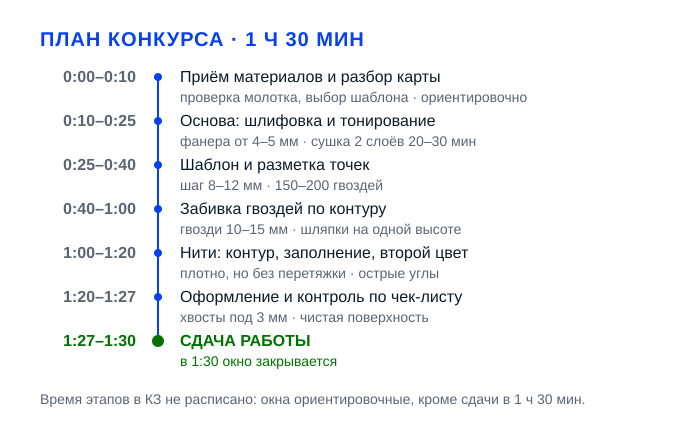
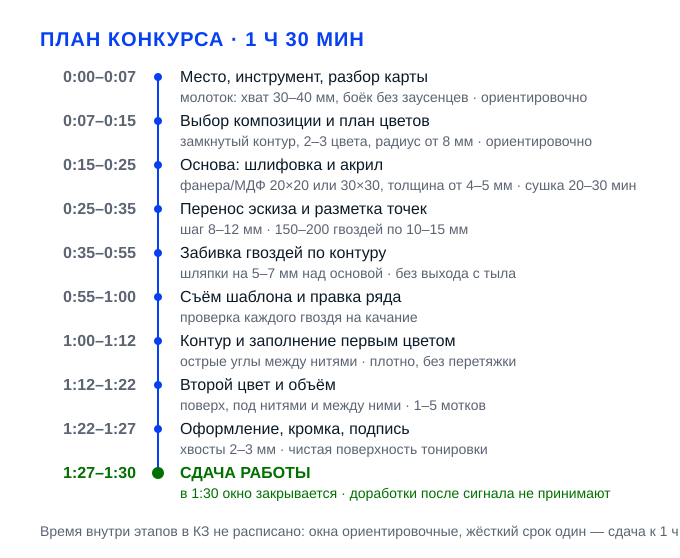
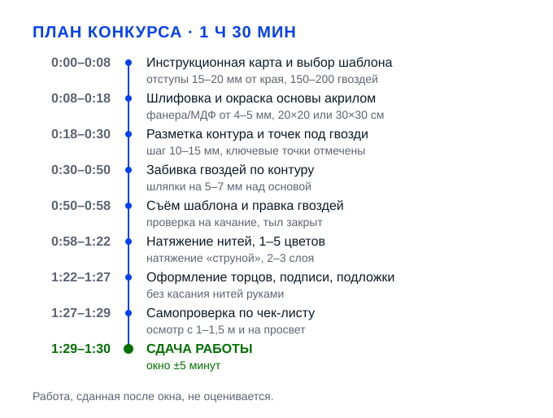

Ниткография (ФВ)
Задания ниже — официальные файлы «Абилимпикс» (источник: abilympics-russia.ru), разложенные по категориям. Решения написаны по тексту задания, регламенту и критериям оценки; в них указано, что именно проверяет эксперт.
Школьник
14–16 лет, базовый уровень заданияВ официальном файле категории не разделены отдельными разделами — приводим задание целиком; различия по категориям смотрите в таблице модулей.
Пошаговое решение
Задание для школьников — декоративное панно в технике String-art, иначе изонить, и на всю работу отведено 1 час 30 минут. Материалы простые: деревянная основа из фанеры 20×20 или 30×30 см толщиной не меньше 4–5 мм, 150–200 мелких гвоздей длиной 10–15 мм, один–пять мотков мулине, акриловые краски, шаблон рисунка. Инструменты тоже обычные: молоток, плоскогубцы, линейка, карандаш, ножницы, клей ПВА и наждачная бумага. Работа идёт по инструкционной карте и делится на шесть этапов: разбор карты и выбор шаблона, подготовка и тонирование основы, перенос рисунка и разметка точек, забивка гвоздей по контуру, натяжение нитей с заполнением пространства и добавлением второго цвета, оформление и сдача. Оценивают в первую очередь аккуратность и соблюдение техники: ровный шаг гвоздей, одинаковую высоту шляпок, плотное, но не перетянутое натяжение, острые углы между нитями и чистую поверхность без клочков бумаги под шляпками. Времени на переделку нет, поэтому разметка и забивка делаются с запасом по времени, а последние пять минут остаются на сдачу.

Задача 1. Организовать рабочее место и разобрать инструкционную картуЭтап 1 · 0:00–0:10 · вход в работу
Первые десять минут не приносят ни одного балла за красоту, но именно они решают, успеете ли вы вообще: на всё задание по конкурсному заданию отведено 1 час 30 минут, и любая потерянная здесь минута вычитается из времени натяжения нитей, которое сократить нельзя. На этом этапе вы принимаете материалы по перечню, проверяете исправность молотка, раскладываете инструмент по зонам и читаете инструкционную карту целиком, до последнего пункта. Отдельно и окончательно выбирается шаблон рисунка — менять его в середине работы уже не будет времени.
Действие 1.1. Принять материалы и проверить инструмент
Шаг 1.1.1
Раскладываем на столе всё, что выдано, и сверяем с перечнем инструкционной карты: деревянная основа из фанеры, доски или МДФ размером 20×20 либо 30×30 см, коробка мелких гвоздей длиной 10–15 мм в количестве от 150 до 200 штук, один–пять мотков мулине или хлопковых нитей, акриловые краски, шаблон рисунка, карандаш. Рядом выкладываем инструмент: молоток, плоскогубцы, линейку или рулетку, ножницы, клей ПВА, наждачную бумагу. Каждую позицию трогаем рукой и откладываем в правую от себя зону — так сразу видно, чего не хватает, и не приходится искать гвозди в тот момент, когда нить уже закреплена.
Перечень в карте — не формальность: пропущенный моток контрастного цвета или отсутствие плоскогубцев обнаруживается обычно на середине работы, когда переделывать уже дорого. В конкурсном задании прямо сказано, что участник проверяет наличие всех материалов и инструментов до начала выполнения, и эта проверка относится к критерию соблюдения технологии, а не к вежливости.
Все строки перечня закрыты, лишних предметов на столе нет, гвозди пересчитаны хотя бы приблизительно — горстями, по десять штук. Если основа пришла меньшего размера или тоньше, чем нужно, выясняйте это сейчас, а не после первой сотни вбитых гвоздей.
Самая частая ошибка — начать сразу со шлифовки и покраски, отложив сверку «на потом»: потом выясняется, что нет второго цвета нитей, и панно остаётся плоским, а объём в этой технике — половина выразительности. Вторая ошибка — взять гвозди на глаз, из общей коробки, и не заметить, что они короче 10 мм.
Эксперт подходит к рабочему месту в первые минуты и смотрит именно на порядок и на то, разложены ли материалы по зонам, а не свалены кучей у края стола.
Шаг 1.1.2
Берём молоток в руки и проверяем его по правилам безопасной работы: ручка должна быть из древесины плотных пород, без сколов и трещин, головка — прочно насажена и расклинена клином, боёк — без сработанности и заусенцев. Проверяем хват: руку ставим так, чтобы до нижнего конца ручки оставалось 30–40 мм, тогда кисть работает как рычаг и не устаёт к сотому гвоздю. Стучим по деревяшке и слушаем звук: глухой дребезжащий звук означает, что головка сидит неплотно, и такой молоток нужно сразу заменить у наставника.
Гвоздей будет полторы–две сотни, и каждый требует двух-трёх ударов: к концу работы рука с непривычным хватом начинает бить косо, а косой удар заваливает гвоздь и портит ровный ряд. Плохой молоток опасен ещё и тем, что при ударе головка может слететь, а это уже травма, после которой работа прекращается независимо от того, сколько осталось времени.
Проверьте молоток тремя движениями: покачайте головку пальцами — люфта быть не должно, проведите ногтем по бойку — заусенцев нет, положите ручку на ладонь и отметьте большим пальцем, где проходит хват. Если ручка скользит, обернуть её изолентой нельзя — берите другой инструмент.
Работать молотком с треснувшей ручкой или нерасклиненной головкой — нарушение техники безопасности, за которое работу останавливают. Вторая ошибка — держать молоток у самой головки: удары получаются слабыми и частыми, гвоздь забивается криво и на разной глубине.
Безопасность на площадке оценивают отдельно и до старта: эксперт смотрит, какой инструмент вы взяли в руки, и какой хват демонстрируете. Отдельно фиксируется, убран ли инструмент на место после работы.
Шаг 1.1.3
Организуем три зоны. Под основу кладём подкладку — лист резины, войлока или сложенную вчетверо газету — и придвигаем её к краю стола так, чтобы предплечье имело опору. Гвозди пересыпаем в низкую широкую баночку, а не оставляем в пакете: так их удобно брать двумя пальцами и они не рассыпаются по столу. Ножницы кладём справа, кольцами к себе, лезвия держим сомкнутыми, нитки — на бобинах или намотанными на картонку, чтобы они не путались. Проверяем свет: рабочая поверхность должна быть освещена не менее чем на 300 люкс, иначе на тёмном акриле не видно карандашной разметки.
Разложенное место экономит минуты: при шаге 10 мм между гвоздями поиск нужной вещи отнимает время у самого дорогого этапа. Подкладка нужна не для мягкости, а чтобы гасить отскок и не дать гвоздю выйти с обратной стороны в стол, а низкая баночка — потому что из глубокой посуды гвоздь 10 мм достаётся дольше, чем забивается.
Проверьте себя так: сядьте на место и, не вставая, дотроньтесь до молотка, ножниц, гвоздей, ниток и линейки. Всё должно оказаться в пределах вытянутой руки, а проход между рабочими местами шириной 1,5 метра остаться свободным.
Типичная ошибка — работать на голом столе без подкладки: гвозди выходят с изнанки, оставляют следы и затупляются, а на фанере толщиной 4 мм появляются сколы. Вторая — поставить баночку с гвоздями за основой и опрокинуть её локтем.
Эксперт оценивает организацию рабочего места визуально: устойчивый стол, отсутствие лишнего, инструмент на своих местах и свободный проход. Отмечается и то, что участник не ставит на стол лишнего: бутылки, телефона, пакетов.
Действие 1.2. Разобрать карту и окончательно выбрать шаблон
Шаг 1.2.1
Читаем инструкционную карту целиком, от первого пункта до последнего, и держим её открытой на столе до конца работы. Отмечаем карандашом три вещи, которые оцениваются в задании: правильное натяжение нитей, заполнение пространства нитями и создание узоров с переходами между цветами. Затем про себя проговариваем всю цепочку: выбрали шаблон, подготовили основу, разметили, забили гвозди по контуру, натянули нити, оформили панно. Карта разрешает и подсказывает порядок, но не отменяет его — переставлять этапы местами нельзя.
Время на всё задание — 1 час 30 минут, и оно не делится на модули с отдельными окнами, поэтому расписание вы держите в голове сами. Понимание трёх техник заранее нужно для того, чтобы разметка гвоздей сразу делалась под выбранный узор, а не под «просто контур»: если вы планируете веерное заполнение, шаг между гвоздями должен быть одинаковым по всему контуру.
Проверьте, что вы можете своими словами объяснить, чем отличается контурная нить от заполняющей и как вы будете делать переход цвета. Если объяснить не получается — вернитесь к карте, лучше потерять три минуты сейчас, чем сорок минут на переделку.
Ошибка — просмотреть карту по диагонали и начать с гвоздей, не поняв, что шаг разметки зависит от схемы заполнения. Тогда к моменту натяжения оказывается, что гвозди стоят редко и узор рассыпается на отдельные хорды.
Карта лежит на столе открытой: эксперт видит, что участник работает по инструкции, а не по памяти, и это входит в оценку организации работы. Видно и то, сверялся ли участник с картой по ходу дела, а не только в начале.
Шаг 1.2.2
Выбираем шаблон из предложенных вариантов — животное, цветок, геометрическая фигура — и оцениваем его по четырём признакам. Контур должен быть замкнутым и достаточно простым, без тонких деталей вроде усов или тычинок: расстояние между линиями меньше 10 мм не даёт поставить два ряда гвоздей. Площадь рисунка на основе 20×20 см должна занимать примерно 70–80 процентов поля, а на основе 30×30 см — не меньше половины, иначе панно выглядит мелким на большом фоне. Последнее: прикидываем по периметру число точек при шаге 10 мм — гвоздей в комплекте 150–200 штук, и на сложный контур уходит почти весь запас.
Выбор шаблона — единственное решение, которое нельзя отменить: после разметки и забивки возврат к другому рисунку означает новую основу, а её у вас нет. Задание требует, чтобы шаблон был достаточно простым для выполнения, но при этом интересным и эстетичным, и компромисс здесь ищется именно на этом шаге — сложность добирается не количеством деталей, а плотностью и цветом нитей.
Проверьте выбор практически: положите шаблон на основу, отойдите на два метра и посмотрите, читается ли образ. Затем посчитайте точки по контуру, разделив периметр на 10 мм, — если выходит больше 120 точек только по контуру, рисунок слишком изрезан для 90 минут.
Типичная ошибка — взять самый эффектный шаблон с мелкими завитками: на него уходит весь запас гвоздей и всё время, а внутреннее заполнение остаётся недоделанным. Вторая — выбрать слишком крупную фигуру и упереться в край основы, где фанера колется.
Эксперт смотрит на выбранный шаблон в начале работы и потом сравнивает результат с заявленным рисунком: подмена или упрощение по ходу видны сразу. Отмечается и соответствие шаблона размеру основы: пропорции не должны быть растянуты.
Шаг 1.2.3
Раскладываем 90 минут по этапам и запоминаем контрольные точки. Подготовка основы, включая шлифовку и покраску с сушкой, — 15 минут; разметка под гвозди — 10 минут; забивка гвоздей — 20 минут; натяжение нитей, контур и заполнение — 30 минут; оформление и контроль — 10 минут. Последние пять минут оставляем резервом и не тратим их на творчество. Контрольные точки простые: к 25-й минуте основа покрашена, к 40-й размечена, к 60-й забиты все гвозди, к 85-й нити закончены.
Без плана работа почти всегда идёт по самому приятному сценарию: сначала долго выбирается цвет, потом долго натягивается контур, а на заполнение остаётся десять минут. В итоге панно выглядит недоделанным, хотя все элементы техники формально выполнены. Разбивка по времени защищает от этого и позволяет в середине работы честно увидеть, отстаёте вы или идёте по графику.
Проверка простая: посмотрите на часы и сравните с ближайшей контрольной точкой. Отставание больше пяти минут — сокращайте плотность заполнения, но не берите гвозди наскоком: кривой ряд не исправляется потом ничем.
Ошибка — считать, что 90 минут это много, и потратить первые полчаса на выбор цвета и покраску в три слоя. Вторая ошибка — не оставить резерв и завершать работу в спешке, обрезая нити на глазах у эксперта.
Эксперт отмечает, насколько участник управляет временем: наличие плана проявляется в том, что к середине конкурса работа находится в ожидаемой стадии.
Задача 2. Подготовить деревянную основуЭтап 2 · 0:10–0:25 · шлифовка и тонирование
Основа — это то, чего в готовом панно почти не видно, но именно она определяет, удержатся ли гвозди и как прочитается рисунок. По конкурсному заданию фанера берётся толщиной не меньше 4–5 мм, иначе вбивание гвоздей превращается в мучение: тонкая доска колется, а гвоздь 15 мм выходит с обратной стороны. За отведённые 15 минут нужно проверить толщину и геометрию, снять заусенцы с кромок, затонировать лицевую сторону акрилом в два тонких слоя и дать краске высохнуть — не на ощупь, а по времени.
Действие 2.1. Проверить и отшлифовать основу
Шаг 2.1.1
Первым делом проверяем толщину и размер. Прикладываем линейку к торцу: при толщине меньше 4 мм гвоздь 10–15 мм не держится в материале, а у 5 мм остаётся всего 5–10 мм на заход, и любой наклон заваливает его набок. Размер сверяем с заявленным — 20×20 или 30×30 см, диагонали прямоугольной основы должны быть равны, иначе панно встанет в рамку с перекосом. Стучим костяшкой пальца по площади: глухой звук в одном месте означает внутреннюю трещину или пустоту, и такую основу лучше сразу заменить у наставника.
Толщина — не придирка, а условие технологии: в конкурсном задании сказано прямо, что фанера должна быть не меньше 4–5 мм, иначе возникнут сложности с вбиванием гвоздей. Тонкая основа прогибается под ударом, гвозди идут косо, а на кромке появляются сколы, которые уже не закрасить. Проверка занимает минуту и защищает все последующие двадцать минут работы молотком.
Основа лежит на столе без качания, диагонали совпадают с точностью до 2 мм, толщина при замере в трёх точках одинакова. Если один угол толще другого, основа выгнута и её нужно отложить в сторону. Проверьте также, что основа не пахнет сыростью и не имеет тёмных пятен.
Ошибка — взять первую попавшуюся доску и начать шлифовать, не проверив толщину: первые двадцать гвоздей войдут нормально, а на кромке фанера начнёт расщепляться. Вторая — не заметить, что основа выгнута винтом: тогда ровный ряд гвоздей визуально «плывёт».
Эксперт проверяет основу при первом подходе: соответствие размера и толщины перечню материалов относится к соблюдению технологии. Размер и толщина сверяются с перечнем материалов по карте, это часть соблюдения технологии.
Шаг 2.1.2
Шлифуем лицевую сторону наждачной бумагой средней зернистости, двигая её вдоль волокон, а не поперёк: поперёк остаются поперечные риски, которые после тонирования проступают светлыми полосами. Особое внимание — кромкам: снимаем заусенцы и делаем фаску примерно 1 мм под углом 45 градусов, чтобы край не скалывался при забивке крайних гвоздей. После шлифовки смахиваем пыль сухой тряпкой или мягкой кистью, а не ладонью — от ладони на дереве остаётся жирное пятно, и краска на нём ляжет неравномерно.
Шлифовка нужна ради двух вещей: краска на гладком дереве ложится ровнее и сохнет быстрее, а заусенцы на кромке — это место, где фанера раскалывается при ударе. Крайние гвозди всегда стоят близко к краю, потому что контур рисунка отступает от кромки всего на 15–20 мм, и скол в этом месте испортит вид панно окончательно.
Проведите ладонью по лицевой стороне: поверхность должна быть гладкой на ощупь, без задиров и смолистых капель. Кромку проверьте пальцем — фаска ощущается как мягкое скругление, а не как острая ступенька.
Ошибка — шлифовать поперёк волокон и оставить глубокие риски: после покраски они превращаются в светлую сетку. Вторая — не снять пыль перед покраской: краска скатывается в комочки и держится неравномерно.
Эксперт смотрит на подготовку поверхности до покраски: качество шлифовки — часть критерия аккуратности выполнения работы. Отмечается и то, снята ли пыль перед покраской: на запылённой основе краска ложится пятнами.
Шаг 2.1.3
Определяем, где у основы лицо, а где изнанка, и помечаем изнанку карандашом в углу — маленьким крестиком. Дальше кладём основу на подкладку лицевой стороной вверх и проверяем, ровно ли она лежит: покачайте пальцем по углам, зазор больше 1 мм означает, что основа поведена и при забивке будет пружинить. Если на лицевой стороне есть сучки, отмечаем их карандашом — в сучок гвоздь идёт тяжело и часто уводит в сторону, такие точки лучше сдвинуть на 5 мм.
Метка изнанки спасает от самой обидной ошибки: покрашенная сторона и сторона с разметкой должны совпадать, а при работе с одинаковыми на вид сторонами легко перепутать их после сушки. Отметка сучков нужна потому, что гвоздь в сучке гнётся и его приходится вытаскивать плоскогубцами, оставляя в поверхности рваное отверстие.
Проверьте: крестик на изнанке виден, основа лежит без качания, сучки отмечены. Прокрутите основу на подкладке — под ней не должно быть щепок и гвоздей, которые дадут перекос при ударе. Отдельно убедитесь, что карандашная метка не попала на будущий рисунок.
Ошибка — размечать и красить с разных сторон: после сушки рисунок оказывается на изнанке, а лицевая сторона остаётся чистой. Вторая — забивать гвоздь прямо в сучок и ломать его. Третья ошибка — красить основу, лежащую на щепках: получается перекос и вмятина на изнанке.
Эксперт обращает внимание на то, как участник обращается с основой: перевороты, метки и подкладка видны в процессе работы. Заметно и то, отмечены ли сучки: гвоздь в сучке виден по изогнутому стержню.
Действие 2.2. Затонировать основу акриловой краской
Шаг 2.2.1
Готовим краску и первый слой. Акрил выдавливаем на палитру — годятся крышка или кусок пластика — и разбавляем водой на 10–15 процентов, до состояния жидкой сметаны: неразбавленный акрил ложится толстым слоем, долго сохнет и забивает поры дерева. Набираем краску на широкую кисть или поролоновый валик и ведём вдоль волокон, тонким слоем, не нажимая сильно, чтобы не оставить полос и луж. Кромки прокрашиваем отдельно, торцом кисти, потому что именно там краска чаще всего пропускается.
Тонирование в конкурсном задании прямо названо приёмом: акриловые краски нужны для того, чтобы придать дереву красивый цвет. Практический смысл в контрасте: на тёмном фоне светлые нити читаются сильнее, а на светлом фоне видна графичность тёмных. Тонкий слой нужен ещё и потому, что разметка карандашом по краске ложится плохо, если краска лежит бугром.
Посмотрите на основу при боковом свете: слой должен быть равномерным, без проплешин и подтёков на кромках. Проведите пальцем после высыхания — если краска снимается, слой слишком толстый или поверхность не была обеспылена.
Ошибка — налить краску прямо из баночки и размазать густо: слой сохнет не 20 минут, а час, и всё расписание рушится. Вторая — красить поперёк волокон, оставляя полосы, которые видны на готовом панно. Третья — набирать краску на кисть с избытком, тогда потёки идут по кромке.
Эксперт оценивает ровность тона как часть общего вида: пятна и полосы фона видны на панно так же хорошо, как ошибки в натяжении нитей. Отмечается и то, прокрашены ли торцы основы, по ним чаще всего судят о подготовке.
Шаг 2.2.2
Второй слой наносим после того, как первый перестал липнуть, — обычно это 20–30 минут при комнатной температуре, и это время не стоит тратить на разметку, потому что краска ещё сырая. Второй слой делаем тоньше первого и снова вдоль волокон, стараясь не размыть уже высохший. Если нужен более тёмный тон, второй слой делаем тем же цветом, а не более густым: густая краска даёт глянцевые пятна, на которых бликует свет и не видно разметки.
Два тонких слоя дают ровный матовый тон и перекрывают текстуру дерева достаточно, чтобы фон не спорил с рисунком. Один слой обычно оставляет просветы, а три слоя — это уже лишние полчаса из тех 90 минут, которые отведены на всё задание. Пока краска сохнет, полезно разложить нитки по цветам и подготовить шаблон к переносу.
Проверяем сухость правилом, а не на ощупь: прикоснитесь тыльной стороной пальца к незаметному участку у кромки — если палец не прилипает и не остаётся след, слой готов. Влажное пятно на месте касания означает, что нужно ещё 5–10 минут.
Ошибка — наносить второй слой на липкую краску: верхний слой стягивает нижний и оставляет «апельсиновую корку». Вторая — сушить основу феном на горячем режиме: акрил вспучивается пузырями, и поверхность приходится перешлифовывать.
Эксперт может подойти в момент сушки и увидеть, чем участник занят: подготовка нитей и шаблона в это время считается правильной организацией. Отмечается и то, разложены ли нити по цветам, пока сохнет краска.
Шаг 2.2.3
Пока основа сохнет, подбираем нитки под фон и проверяем контраст. Кладём выбранные мотки прямо на высохшую или почти высохшую основу и смотрим с расстояния двух метров: нить должна отличаться от фона не только цветом, но и светлотой. На тёмно-синем фоне тёмно-фиолетовая нить при электрическом свете почти исчезает, поэтому проверяем при том освещении, при котором работа будет оцениваться. Заодно раскладываем нитки по порядку — сначала та, которой пойдёт контур, потом заполнение, потом контрастный акцент.
Перечень материалов допускает от одного до пяти мотков, и количество цветов напрямую связано с выразительностью: одноцветное панно выглядит графично, но проигрывает в объёме, а пять цветов на основе 20×20 см превращаются в пёстрое пятно. Проверка на контраст заранее спасает от ситуации, когда половина панно уже натянута и обнаруживается, что рисунок «слипся» с фоном.
Проверьте три вещи: нити не сливаются с фоном на расстоянии двух метров, цветов не больше трёх основных, и каждый моток распутан так, что тянется без узлов. Потяните нить за конец — она должна идти свободно, а не вытаскивать за собой целый клубок.
Ошибка — брать нить в тон основе, рассчитывая на «благородную сдержанность»: на готовом панно рисунок просто не виден. Вторая — сразу распускать все мотки: нити путаются, и на распутывание уходит время, которого нет.
Эксперт смотрит на цветовое решение по готовой работе, но первые выводы делает уже на этом шаге, когда видит, как участник раскладывает нити. Отмечается и то, проверен ли контраст при том свете, при котором работу будут оценивать.
Задача 3. Перенести шаблон и разметить точки под гвоздиЭтап 3 · 0:25–0:40 · шаблон и разметка
Разметка — самый недооценённый этап: ошибка в два миллиметра здесь превращается в кривой ряд гвоздей, а кривой ряд нельзя исправить нитями, как бы хорошо они ни были натянуты. За 15 минут нужно закрепить шаблон на высохшей основе так, чтобы он не сдвинулся, перенести контур на дерево и поставить карандашные точки под каждый гвоздь с одинаковым шагом. Точки ставятся не по самой линии рисунка, а чуть выше неё или по её краю, как сказано в карте, — тогда нить обходит рисунок снаружи и контур остаётся чётким.
Действие 3.1. Закрепить шаблон на основе
Шаг 3.1.1
Прикидываем масштаб: шаблон должен оставлять по краям основы поле 15–20 мм. Меньший отступ опасен тем, что крайние гвозди встанут слишком близко к кромке и расколют её, а больший отступ делает рисунок мелким и «потерянным». Если шаблон распечатан на А4, а основа 30×30 см, рисунок увеличиваем на копире или просто обводим от руки, сохраняя пропорции: измеряем габариты рисунка линейкой и пересчитываем их под поле 200–260 мм.
Поле по краям — это не только эстетика, но и запас прочности: гвоздь, вбитый в 5 мм от кромки, почти всегда скалывает фанеру, а скол на лицевой стороне виден на готовом панно. Кроме того, поле нужно для будущей рамки: в конкурсном задании оформление готового панно входит в завершающий этап, и работе с полем под рамку проще.
Проверьте размер рулеткой в двух направлениях: от края основы до крайней точки рисунка не меньше 15 мм и не больше 25 мм с каждой стороны. Заодно убедитесь, что рисунок целиком помещается и не выходит за поле.
Ошибка — растянуть шаблон на всю основу, чтобы «было крупнее»: крайние гвозди колют фанеру, и работа получает сколы по всему периметру. Вторая — уменьшить рисунок до половины листа, и тогда панно выглядит пустым.
Эксперт оценивает композицию на плоскости: правильные поля и масштаб относятся к критерию эстетичности выполненной работы. Отмечается и то, не растянут ли шаблон: пропорции фигуры должны сохраниться.
Шаг 3.1.2
Центруем шаблон по диагоналям. Проводим на основе две диагонали тонкими карандашными линиями до покраски или по краске едва заметно, находим их пересечение и совмещаем с центром рисунка, отмеченным на шаблоне. Затем проверяем симметрию: расстояние от левого края рисунка до левого края основы должно быть равно расстоянию от правого до правого, то же по вертикали, допуск — 2 мм. Крепим шаблон малярным скотчем по двум противоположным сторонам, а не по четырём сразу: две полосы дают возможность поправить положение, не снимая крепление целиком.
Сдвиг шаблона на 5 мм в сторону почти незаметен на глаз, но после забивки двухсот гвоздей он превращается в заметный перекос всей композиции, и на оценке это читается как небрежность. Диагонали надёжнее, чем промер от краёв: они сразу показывают и перекос, и неверный центр, тогда как промер только по одной стороне может совпасть случайно.
Проверяем так: линейкой от угла рисунка до угла основы с четырёх сторон, все четыре расстояния в паре должны совпадать с точностью до 2 мм. Посмотрите на основу сверху и прищурьтесь — перекос виден именно так, лучше, чем по цифрам.
Ошибка — крепить шаблон на четырёх углах и потом обнаружить перекос: придётся отклеивать всё и начинать заново, а скотч второй раз держит хуже. Вторая — центровать «на глаз», по просвету между краями.
Эксперт видит центровку по симметрии готового панно, а в процессе — по аккуратности работы с шаблоном и скотчем. Отмечается и качество крепления: полосы скотча не должны закрывать контур рисунка.
Шаг 3.1.3
Переносим контур на основу. Если шаблон тонкий и просвечивает, обводим его мягким карандашом прямо по линиям, не нажимая сильно, чтобы не продавить бумагу. Если шаблон плотный, подкладываем копировальную бумагу красящим слоем вниз и обводим контур шариковой ручкой с нажимом, а затем снимаем и шаблон, и копирку. Линию ведём одной непрерывной, без разрывов: разрыв на контуре — это место, где потом не хватит гвоздя и получится провал в натяжении нити.
Линия на дереве нужна не для красоты, а как ориентир для точек: если обводить контур по памяти, точки уходят от рисунка на 3–5 мм в разные стороны, и контурная нить идёт волной. По конкурсному заданию гвозди забиваются немного выше линии шаблона или в её край, поэтому линия должна быть видна до самого конца забивки.
Пройдите контур глазами целиком: линия непрерывная, замкнутая, все внутренние детали перенесены. Сверьте с шаблоном по трём характерным точкам — вершине, впадине и краю, они должны совпадать с точностью до 1 мм.
Ошибка — обводить контур на весу, не закрепив шаблон: бумага сдвигается под карандашом, и линия получается двойной. Вторая — давить слишком сильно и оставить в фанере вмятину, которая после покраски проступает тенью.
Эксперт сверяет готовое панно с шаблоном: сохранение пропорций и деталей относится к правильности выполнения задания. Отмечается и то, не осталось ли на основе двойной линии, которая потом читается как тень.
Действие 3.2. Нанести точки под гвозди с равным шагом
Шаг 3.2.1
Выбираем шаг между гвоздями. Ориентир для школьной категории — 8–12 мм: при шаге меньше 8 мм на фанере 5 мм легко получить скол и трудно попасть молотком по соседнему гвоздю, а при шаге больше 12 мм контур перестаёт читаться и нить провисает длинными хордами. Шаг должен быть одинаковым по всему контуру, поэтому сначала считаем: делим длину участка на выбранный шаг и смотрим, укладывается ли целое число. Если не укладывается, шаг чуть меняем — например, с 10 на 9,5 мм, но одинаково на всём участке.
Равное расстояние между гвоздями прямо требуется конкурсным заданием: именно оно даёт ровный ритм и острые углы при натяжении. Разный шаг заметен на готовом панно сразу — там, где гвозди стоят редко, нити образуют крупные пустые просветы, а где часто — плотное тёмное пятно. Одинаковый шаг нужен ещё и для того, чтобы веерное заполнение шло без сбоев.
Проверьте расчёт на практике: отложите на линейке десять шагов и посмотрите, попадает ли последний в характерную точку контура. Посчитайте примерное общее число точек: при шаге 10 мм на контуре сложной фигуры выходит 60–90 точек, остальное уходит на внутренние линии.
Ошибка — откладывать шаг циркулем на глаз, без счёта: к концу участка накапливается расхождение 5–8 мм, и последний гвоздь встаёт вплотную к предыдущему. Вторая — менять шаг на разных участках, чтобы «подогнать» под контур.
Эксперт оценивает равномерность по готовой работе, но в процессе видит, пользуется ли участник линейкой или ставит точки произвольно. Отмечается и то, посчитано ли примерное число гвоздей до начала разметки.
Шаг 3.2.2
Ставим точки карандашом ТМ или тонким маркером, отступая от линии контура наружу примерно на 3–5 мм — то есть немного выше линии шаблона или в её край. Делаем не длинный штрих, а короткую точку-насечку: по длинному штриху трудно понять, куда именно попадёт гвоздь. Ведём разметку по часовой стрелке, начиная от верхней точки фигуры, и каждую пятую точку отмечаем крестиком — так проще считать и проверять равномерность. Внутренние линии, если они есть в шаблоне, размечаем тем же шагом.
Отступ наружу нужен для того, чтобы нить шла по внешнему краю рисунка, а не съедала его изнутри: при разметке по самой линии гвоздь закрывает часть изображения, и контур выглядит толще и грубее, чем на шаблоне. Крестики через каждые пять точек — простая страховка от сбоя счёта, потому что двести гвоздей в ряд считаются плохо.
Проверьте: точки стоят с внешней стороны линии, расстояние от линии до центра точки одинаковое по всему контуру, все точки видны на фоне краски. Приложите линейку к пяти соседним точкам — они должны лечь в линию или в плавную дугу без изломов.
Ошибка — ставить точки по внутренней стороне контура: рисунок съедается нитями, и мелкие детали исчезают. Вторая — размечать маркером с толстым стержнем: пятно шириной 3 мм не даёт точно поставить гвоздь.
Эксперт смотрит на разметку до забивки: ровный ряд точек — признак того, что участник понимает технологию, а не просто заполняет доску. Отмечается и то, что точки не смазаны: по смазанному пятну гвоздь идёт косо.
Шаг 3.2.3
Считаем точки и сверяем с запасом гвоздей. Обводим каждую пятую точку крестиком, потом умножаем число крестиков на пять и прибавляем остаток. Всего в комплекте 150–200 гвоздей, поэтому разметка на 120–150 точек оставляет запас на брак и на замену. Если точек выходит больше 180, рисунок для школьной категории слишком плотный, и его лучше упростить сейчас: убрать мелкую деталь, увеличить шаг на второстепенном участке до 12 мм.
Счёт даёт ответ на вопрос, уложитесь ли вы в 20 минут забивки: практическая скорость при аккуратной работе — около восьми–десяти гвоздей в минуту, то есть 150 гвоздей это 15–18 минут чистого времени. Если точек 200, забивка съест весь резерв и натяжение начнётся с опозданием.
Проверьте счёт дважды: один раз по крестикам, второй раз пройдя контур пальцем и называя номера вслух. Расхождение больше пяти точек означает, что где-то пропущен участок или посчитан дважды. Отдельно проверьте, хватает ли гвоздей с учётом брака и замен.
Ошибка — не считать вообще и обнаружить нехватку гвоздей на середине контура: досыпать их негде, комплект фиксированный. Вторая — оставить разметку на 200 точек и забивать в спешке, заваливая каждый третий гвоздь.
Эксперт отмечает расчётливость участника: соответствие разметки объёму материалов входит в соблюдение технологии. Отмечается и запас нитей: на контур 150 гвоздей уходит примерно один моток.
Шаг 3.2.4
Проверяем равномерность и симметрию. Кладём линейку вдоль участков контура и промеряем расстояния между соседними точками выборочно — по пять замеров на каждой стороне фигуры, допуск для себя задаём 1 мм. На парных участках (левая и правая половины рисунка) расстояния должны совпадать, иначе панно получится асимметричным. Отдельно проверяем углы и изгибы: на крутом повороте шаг приходится слегка уменьшать, иначе соседние гвозди встают слишком близко и раскалывают материал.
Выборочный промер ловит сбой, который глазом не виден: отклонение в 2 мм на одном участке к концу контура складывается в заметный перекос. Симметрия важна потому, что глаз человека считывает её раньше, чем понимает, в чём дело: асимметричное панно выглядит небрежным даже при хорошем натяжении.
Проверьте: пять замеров на каждой стороне укладываются в 1 мм, парные участки совпадают, на изгибах точки не сближаются меньше 6 мм. Посмотрите на основу с расстояния вытянутой руки — ряд точек должен читаться как ровная пунктирная линия.
Ошибка — пропустить этот промер и начать забивку: переделку разметки придётся делать через вытаскивание гвоздей, и отверстия уже не закроются. Вторая — не учесть, что на поворотах шаг надо уменьшать. Третья — не проверить углы, где точки сближаются и колют фанеру.
Эксперт при подходе к столу может попросить показать разметку: ровность точек — прямой показатель качества подготовки. Отмечается и то, видна ли разметка на фоне: слишком бледная читается как её отсутствие.
Задача 4. Закрепить гвозди по контуру рисункаЭтап 4 · 0:40–1:00 · забивка
Двадцать минут работы молотком решают, будет ли панно ровным: гвозди должны стоять на одинаковом расстоянии друг от друга, на одинаковой высоте и строго вертикально, не выходя с обратной стороны основы. Всего их от 150 до 200 штук, длина 10–15 мм, и при фанере 5 мм над поверхностью остаётся около 10 мм — этого хватает, чтобы нить легла под шляпку, но не хватает, чтобы прощать косой удар. После забивки шаблон снимается, остатки бумаги убираются пинцетом или иглой, а ряд проверяется на прочность и высоту.
Действие 4.1. Забить гвозди по разметке
Шаг 4.1.1
Берём гвоздь за стержень у самой шляпки большим и указательным пальцами, ставим остриё точно в карандашную точку и наносим два-три лёгких удара кистью, без размаха, пока гвоздь не войдёт в дерево на 2–3 мм и не начнёт держаться сам. Только после этого пальцы убираем и добиваем гвоздь короткими ударами до нужной высоты. Молоток держим на расстоянии 30–40 мм от нижнего конца ручки, удары наносим строго вертикально, работая кистью, а не всей рукой от плеча.
Первый этап с зажатым пальцами гвоздём нужен потому, что на свободно стоящем гвозде первый удар почти всегда сбивает его в сторону, и он падает или заваливается. Работа кистью, а не плечом, даёт точность: при ударе от плеча амплитуда больше, и молоток проходит мимо шляпки, оставляя вмятины на фанере рядом с гвоздём.
Проверьте первые пять гвоздей: они стоят вертикально, шляпки на одном уровне, вмятин на основе рядом нет. Если первые пять получились ровными — техника верная, и её можно держать до конца. Если хотя бы один из первых гвоздей стоит косо, поменяйте хват, пока не поздно.
Ошибка — держать гвоздь до последнего удара и бить по пальцам: гвоздь уходит вбок, а рука получает травму. Вторая — бить сильно с первого удара и загонять гвоздь глубже нужного. Третья — бить по шляпке с размаха и мять её, тогда нить цепляется за заусенец и рвётся.
Эксперт смотрит на постановку удара: правильный хват молотка и вертикальные удары относятся к критерию соблюдения техники безопасности и технологии. Отмечается и темп: без спешки, но и без длинных остановок.
Шаг 4.1.2
Контролируем глубину. Гвоздь длиной 10–15 мм в основе 5 мм должен выступать над поверхностью на 5–10 мм: при длине 15 мм и заглублении 5 мм над деревом остаётся ровно 10 мм. Меньше 5 мм — нить не удержится под шляпкой и будет соскакивать, больше 12 мм — гвоздь шатается и гнётся под натяжением. Забиваем до состояния, когда под шляпкой остаётся просвет, равный толщине нити, сложенной вдвое, и проверяем высоту линейкой на каждом десятом гвозде. Следим и за обратной стороной: гвоздь не должен показаться из фанеры.
Равная высота — это ровная плоскость натяжения: если один гвоздь торчит выше соседей, нить на нём поднимается, а на соседнем провисает, и на панно появляется волна. Конкурсное задание требует, чтобы гвозди держались прочно, на одинаковую глубину и не торчали из задней стенки — вышедший насквозь гвоздь это ещё и травма руки и царапины на столе.
Проверьте глубину на просвет: положите линейку поперёк ряда и посмотрите, касается ли она всех шляпок. Разница больше 2 мм — ряд нужно выровнять, подбив или подтянув отдельные гвозди плоскогубцами. Просвет под шляпкой должен быть одинаковым по всему ряду.
Ошибка — забивать гвозди «до упора», пока молоток не стукнет по дереву: шляпка садится в фанеру, и нить не подцепить. Вторая — брать гвозди длиной 20 мм и пробивать основу насквозь. Третья — брать гвозди разной длины из одной коробки и получать рваный ряд.
Эксперт проверяет высоту гвоздей на глаз и на ощупь — проводит пальцем по ряду: ряд должен быть ровным, без «зубцов». Отмечается и то, не выступил ли гвоздь с изнанки: основа проверяется на просвет.
Шаг 4.1.3
Держим гвоздь строго вертикально. Перед ударом смотрим на стержень с двух сторон — со стороны и сверху, потому что наклон вперёд-назад виден сбоку, а наклон влево-вправо только сверху. Если гвоздь пошёл косо, не выравниваем его ударами сбоку: вытягиваем плоскогубцами, поворачиваем на 90 градусов и забиваем рядом, отступив 3–4 мм, а старое отверстие закрашиваем акрилом после забивки. Косой гвоздь опасен тем, что при натяжении нити он работает как рычаг и постепенно расшатывается.
Наклон даже в 10 градусов уменьшает рабочую высоту и меняет точку, где нить цепляется: на ровном ряду появляется «крючок», с которого нить соскакивает при первом же сильном натяжении. Вытягивание с поворотом нужно потому, что гвоздь, выдернутый и вбитый в то же отверстие, держится хуже — отверстие уже разбито и волокна раздвинуты.
Проверьте ряд на просвет, приложив глаз к поверхности основы: все стержни должны быть параллельны. Покачайте выборочно пять гвоздей пальцем — ни один не должен отклоняться больше чем на миллиметр. Наклон влево-вправо ловится только просмотром сверху, сбоку его не видно.
Ошибка — выравнивать косой гвоздь ударами сбоку: он гнётся, шляпка сминается, и нить на нём рвётся. Вторая — оставить косой гвоздь, рассчитывая, что «нить всё равно закроет». Третья — оставлять косой гвоздь с расчётом, что нить его выпрямит при натяжении.
Эксперт оценивает вертикальность при осмотре панно сбоку: наклонные гвозди дают заметные тени и неровный край. Заметно и то, вытянуты ли неудачные гвозди: рваные отверстия видны на фоне.
Шаг 4.1.4
Забиваем по порядку, а не вразнобой: начинаем с верхней точки фигуры и идём по часовой стрелке, отмечая на шаблоне или на бумажном списке каждую пройденную точку. Через каждые 20–25 гвоздей останавливаемся на несколько секунд, разгибаем кисть и сверяем пройденное с разметкой. Внутренние линии, если они есть, забиваем после контура, причём сначала редкие точки, потом промежуточные — так проще не сбиться и не забить лишнего.
Последовательный обход защищает от двух ошибок сразу: пропуска, который обнаруживается только при натяжении, и лишнего гвоздя вне разметки. Короткие паузы нужны физиологически: к сотому удару кисть устаёт, амплитуда растёт, и точность падает — именно на второй сотне появляются вмятины рядом с гвоздями.
Проверьте после каждого отрезка по 20 гвоздей: число забитых совпадает с числом пройденных точек, ряд ровный, вмятин нет. К моменту, когда контур замкнётся, лишних отверстий на основе быть не должно. Считайте гвозди, а не точки: сбитый счёт сразу даёт пропуск у края.
Ошибка — забивать вразнобой, «где вижу точку»: часть точек остаётся незамеченной, а часть забивается дважды рядом. Вторая — не делать пауз и к концу контура разбивать ряд неточными ударами. Третья — забивать внутренние линии раньше контура и терять ориентир на рисунке.
Эксперт видит темп и порядок работы: системный обход контура читается как понимание технологии, а не как случайная забивка. Отмечается и то, велся ли счёт по ходу: без счёта пропуски почти неизбежны.
Действие 4.2. Снять шаблон и проверить ряд
Шаг 4.2.1
Правим то, что требует правки, до снятия шаблона: подтягиваем слишком высокие гвозди, подбиваем просевшие. Работаем плоскогубцами, захватывая стержень у самой поверхности, и тянем вверх с легким покачиванием, а не вбок, чтобы не расширить отверстие. Подбиваем просевший гвоздь через деревянную проставку — кусочек фанеры или ручку другой кисти, — чтобы не смять шляпку прямым ударом молотка.
Правка на этом этапе дешевле, чем потом: под шляпкой ещё нет нитей, и любой гвоздь можно подтянуть или подбить без риска порвать натянутую нить. Прямой удар по шляпке тонкого гвоздя её сплющивает, а сплющенная шляпка перестаёт держать нить и цепляет её заусенцем.
Проверьте плоскость после правки: линейка, положенная поперёк ряда, касается всех шляпок, разница высот не больше 2 мм. Покачайте пальцем каждый десятый гвоздь — люфта быть не должно. Проверьте, что после подтяжки соседние гвозди не наклонились вслед за ним.
Ошибка — тянуть гвоздь вбок: отверстие разбивается, и повторно гвоздь держится слабо. Вторая — бить прямо по шляпке и плющить её. Третья ошибка — вытягивать гвоздь, не придерживая основу: она подпрыгивает и сдвигает соседние гвозди, и ряд приходится выравнивать заново, теряя время этапа.
Эксперт может увидеть следы правки: аккуратные, без рваных отверстий и смятых шляпок — норма, разбитые гнёзда — потеря баллов за аккуратность. Отмечается и то, что правка идёт до снятия шаблона, пока нити не натянуты.
Шаг 4.2.2
Снимаем бумажный шаблон. Сначала срезаем ножницами или отклеиваем скотч, потянув его вдоль плоскости основы, а не вверх: рывок вверх гнёт гвозди и отрывает вместе с бумагой тонкие волокна дерева. Затем снимаем бумагу, ведя её параллельно поверхности, и придерживаем основу второй рукой. Если шаблон был наклеен на клей, размачиваем бумагу мокрой губкой и ждём минуту, а потом снимаем, не скребя ножом.
Бумага под шляпками — самая заметная небрежность в этой технике: после снятия шаблона клочки остаются вокруг стержней, и на готовом панно они торчат белыми обрывками. Конкурсное задание отдельно оговаривает, что остатки газеты убираются осторожно, пинцетом или большой иглой — то есть аккуратность здесь ожидается по умолчанию.
Проверьте: на основе не осталось целых участков бумаги, скотч снят полностью, гвозди не расшатаны. Пройдите вдоль ряда и посмотрите на просвет между гвоздями — бумага видна именно там. Отдельно проверьте углы и крутые изгибы: там бумага чаще всего остаётся.
Ошибка — сдёрнуть шаблон одним движением: часть гвоздей наклоняется, и ряд теряет вертикальность. Вторая — оставить бумагу под шляпками, рассчитывая, что нити её закроют: они не закрывают, а приподнимаются на комках.
Эксперт осматривает основу сразу после снятия шаблона: чистота поверхности входит в критерий аккуратности. Отмечается и то, не погнуты ли гвозди при снятии: наклон виден сбоку.
Шаг 4.2.3
Убираем остатки бумаги из-под шляпок пинцетом или большой швейной иглой: захватываем клочок у самого стержня и вытягиваем вдоль гвоздя, а не вбок, чтобы не согнуть его. Мелкие волокна смахиваем мягкой кистью. Если под шляпкой остался плотный комок, размачиваем его каплей воды из пипетки и через минуту снимаем иглой. Затем сдуваем пыль и осматриваем основу при косом свете — так видны все ворсинки и обрывки.
Комки бумаги под шляпкой меняют высоту посадки нити: в этом месте нить не прилегает к дереву, а висит, и на панно появляется светлая точка. Работа иглой, а не ножом, обязательна: лезвие царапает покрашенную поверхность, и царапину уже не замаскировать, потому что краска вокруг гвоздей ляжет пятном.
Проверьте при боковом свете: поверхность чистая, под шляпками просвет, царапин нет. Проведите пальцем по ряду — ничего не цепляется, бумажных комочков нет. Если под шляпкой остался комок, он чувствуется пальцем как бугорок, а на просвет виден светлым пятном, поэтому осмотр ведут в обоих режимах.
Ошибка — соскабливать бумагу ножом или ногтем: остаются царапины и сколы краски, которые видны на фоне. Вторая — оставить мелкие обрывки, считая их незаметными: на светлом фоне они читаются как мусор.
Эксперт проверяет чистоту поверхности до начала натяжения: панно с бумажными обрывками выглядит недоделанным. Отмечается и то, не осталось ли ворсинок и обрывков на покраске у самого края.
Шаг 4.2.4
Финальная проверка ряда перед натяжением. Считаем забитые гвозди и сверяем с разметкой: число должно совпадать. Проверяем прочность — каждый десятый гвоздь покачиваем пальцем, шатающихся быть не должно. Смотрим на ряд с расстояния двух метров: линия должна читаться как ровный пунктир по контуру рисунка, без провалов и сдвоенных гвоздей. Отдельно проверяем углы и самые крутые изгибы, где гвозди стоят близко друг к другу.
Эта проверка — последняя точка, где всё ещё можно исправить без потерь: после первого витка нити любая правка означает снятие натяжения и потерю пяти–семи минут. Кроме того, именно здесь видно, совпадает ли забитый контур с задуманным рисунком, и если фигура «поплыла», лучше узнать об этом сейчас.
Проверьте три вещи: число гвоздей совпадает с разметкой, ни один не шатается, контур читается с двух метров. Если на каком-то участке гвоздь пропущен, забейте его сейчас, пока нить не натянута. Сверяйте ряд с шаблоном по трём характерным точкам.
Ошибка — пропустить эту проверку и начать натяжение: пропущенный гвоздь обнаруживается, когда нить уже держит форму, и на панно остаётся провисший участок. Вторая — оставить шатающийся гвоздь, который вылетит под натяжением.
Эксперт при подходе к столу на этом этапе видит готовый контур: ровность забивки — главный визуальный показатель качества. Отмечается и чистота основы: разметка не должна быть видна на фоне.
Задача 5. Натянуть нити: контур, заполнение и второй цветЭтап 5 · 1:00–1:20 · нити
Тридцать минут натяжения — это и есть содержание работы: сначала нить обводит контур, потом заполняет внутреннее пространство, потом добавляется контрастный цвет. Требования конкурсного задания простые и жёсткие одновременно: нити должны быть плотными, но не перетянутыми, между ними должны образовываться острые углы, а перекрещиваться они должны по замыслу, а не хаотично. Основной приём — обвязка гвоздя по диагонали с постоянным смещением на несколько гвоздей, что и даёт характерную звёздчатую штриховку.
Действие 5.1. Закрепить нить и проложить контур
Шаг 5.1.1
Закрепляем нить на любом гвозде контура, удобнее всего на верхнем. Делаем два-три оборота вокруг стержня под шляпкой, оставляя хвостик длиной 30–40 мм, и приклеиваем хвостик каплей клея ПВА к изнанке или прижимаем к дереву у основания гвоздя, чтобы он не торчал. Обрезать под корень сразу нельзя: узел на гладком гвозде без оборота развязывается при первом натяжении. Тянем конец и проверяем, что нить держится и не скользит по стержню вверх, к шляпке.
Крепление — слабое место всей работы: при натяжении в 200–300 граммов плохой узел сползает, и контур начинает распускаться с первой точки, а перехватывать его в середине уже поздно. Клей нужен именно ПВА, а не суперклей: суперклей оставляет на дереве белый налёт, который проступает на покраске белым пятном.
Проверьте: нить не скользит при подёргивании, хвостик приклеен и не торчит вверх, узел не висит отдельным комком. Потяните нить в сторону от гвоздя — усилие держится, узел не ползёт. Проверьте и то, что хвостик не будет мешать первой протяжке.
Ошибка — привязать нить одним витком и сразу начать работу: узел развязывается на третьем-четвёртом гвозде. Вторая — оставить хвостик 10 см, который потом путается в натянутых нитях. Третья — привязать нить к гвоздю вне контура, тогда первая протяжка начинается в случайном месте.
Эксперт проверяет закрепление нити на прочность: способность нити держаться — базовый признак владения техникой. Отмечается и то, обрезается ли нить с запасом на узел, а не под корень.
Шаг 5.1.2
Ведём нить от гвоздя к гвоздю по диагонали, обводя каждый стержень полуоборотом. Нить при этом заходит за гвоздь, а не просто касается его, поэтому держится без узлов. Натяжение подбираем так, чтобы нить звучала как струна при лёгком щелчке, но основа не прогибалась: практический ориентир — отжатие нити пальцем на 1–2 мм и возврат в прежнее положение. Направление обхода контура держим одно и то же: если начали по часовой стрелке, так и идём дальше, иначе получится встречная петля, которая стянет контур внутрь.
Плотное, но не перетянутое натяжение прямо требуется заданием: перетянутая нить выгибает основу и выворачивает гвозди, а слабая провисает и не даёт острых углов. Острые углы — это и есть графический язык String-art: именно они создают впечатление рисунка, набранного линиями, а не спутанного клубка.
Проверьте натяжение на просвет: между двумя соседними гвоздями нить должна идти прямой линией, без дуги. Основа лежит на столе ровно, не выгнулась «лодочкой», шляпки не наклонились к центру. Проверьте и то, что нить идёт под шляпку, а не поверх неё.
Ошибка — тянуть изо всех сил «чтобы красиво»: через двадцать гвоздей основа выгибается, а гвозди наклоняются внутрь. Вторая — вести нить слабо, с провисом: углы становятся круглыми, и рисунок теряет графику.
Эксперт щёлкает нить и смотрит на просвет между гвоздями: провис и перетяжка видны сразу, это отдельный критерий качества натяжения. Отмечается и то, не выгнута ли основа: по её краю видно «лодочку».
Шаг 5.1.3
Обходим контур целиком, не пропуская ни одного гвоздя. На каждом гвозде делаем полуоборот, ведя нить по внешней стороне рисунка, чтобы линия шла по краю, а не срезала угол. На крутых поворотах и в узких местах нить укладываем плотнее, виток к витку, а на длинных пологих участках можно идти через один гвоздь, если нужен более светлый край. Дойдя до начального гвоздя, делаем ещё один оборот и переходим к внутреннему заполнению, не обрезая нить.
Контур держит форму всей работы: именно он читается с расстояния и определяет, узнаётся ли образ. Обход снаружи нужен для того, чтобы нить не съедала силуэт изнутри — при укладке по внутренней стороне фигура зрительно уменьшается на 5–7 мм по всему периметру, и мелкие детали исчезают.
Проверьте контур с расстояния метра: линия замкнута, силуэт узнаётся, углы острые, петель и перехлёстов нет. Проведите пальцем вдоль контура — нить должна быть натянута одинаково по всей длине. Смотрите и на изгибы: там нить должна прилегать плотнее, чем на прямых участках.
Ошибка — пройти контур «по кратчайшему пути», срезая углы: фигура теряет характерные очертания. Вторая — сделать на одном гвозде петлю из трёх витков, которая выглядит как шишка на ровной линии. Третья — натягивать контур вторым слоем и делать линию заметно толще шаблона.
Эксперт сравнивает контур с шаблоном: сохранение силуэта относится к правильности выполнения задания. Отмечается и совпадение контура с шаблоном по характерным точкам: расхождение в 3 мм видно на готовой работе.
Шаг 5.1.4
Переходим к внутренним линиям, если они есть в шаблоне: сначала прокладываем их редкими протяжками, намечая границы цветовых зон, а потом заполняем промежутки. Нить не обрезаем, а ведём от внутренней линии к следующей через ближайший гвоздь контура — так на изнанке не появляется лишних узлов. Если внутренняя линия отделяет крупную деталь, полезно проложить её нитью того цвета, который будет основным в этой зоне: тогда граница не потеряется под заполнением.
Внутренние линии задают членение рисунка, и если их не наметить заранее, заполнение затягивает всё пространство однородной штриховкой, и панно становится плоским пятном. Прокладка границ цветом заранее экономит время: потом не нужно возвращаться и перекрывать уже натянутые нити другим цветом.
Проверьте: внутренние линии видны, они не провисают и не пересекают контур под случайным углом. Посмотрите на основу сверху — структура рисунка должна читаться до начала плотного заполнения. Проверьте и то, что линии не мешают заполнению и не перекрывают друг друга.
Ошибка — начать заполнение, не наметив границы: зоны сливаются, и работа выглядит как одно цветное поле. Вторая — обрезать нить на каждой линии и привязывать заново: на изнанке вырастает десяток узлов и хвостов.
Эксперт оценивает читаемость композиции: наличие членения и границ отличает продуманную работу от механической забивки. Отмечается и разумность членения: слишком много линий дробит рисунок на куски.
Действие 5.2. Заполнить внутреннее пространство
Шаг 5.2.1
Выбираем схему заполнения. Самый простой и надёжный вариант для школьной категории — веер: нить идёт от одного гвоздя контура к соседним с постоянным смещением на три-пять гвоздей, и в зоне образуется ряд острых углов. Второй вариант — звезда: протяжки идут от точки к точке через треть периметра детали, и в центре получается плотное ядро. Выбираем одну схему на всю работу или на каждую зону свою, но внутри одной зоны схему не меняем.
Смещение на постоянное число гвоздей — единственный способ получить ровную штриховку: если каждый раз тянуть «куда удобно», углы получаются разной величины, и вместо рисунка выходит хаос, который задание прямо запрещает. Веер хорошо работает на крупных плоскостях, звезда — на округлых деталях вроде лепестка или головы животного.
Проверьте схему на маленьком участке: пять–семь протяжек подряд должны дать одинаковые острые углы. Если углы «гуляют», значит смещение сбивается — вернитесь к счёту и ведите его вслух. Считайте протяжки, чтобы ритм не сбивался на середине зоны.
Ошибка — менять схему на каждом участке: панно распадается на куски с разной фактурой. Вторая — тянуть нить к противоположному гвоздю через весь рисунок: длинные протяжки провисают и закрывают другие зоны.
Эксперт смотрит на характер штриховки: единообразие приёма — признак осознанного владения техникой заполнения. Отмечается и то, выбрана ли схема заранее: смена схемы видна по смене ритма.
Шаг 5.2.2
Ведём нить с постоянным шагом смещения: например, от гвоздя 1 к гвоздю 5, от 5 к 9, от 9 к 13 и так далее, пока не вернёмся в начало зоны. Каждую протяжку слегка подтягиваем и придерживаем пальцем у шляпки, чтобы нить ложилась под шляпку, а не поверх неё. Счёт ведём вслух или отмечаем на бумаге, потому что сбитый счёт сразу даёт сбой ритма. В углах и узких местах шаг уменьшаем до двух-трёх гвоздей, чтобы заполнение дошло до края.
Постоянный шаг даёт ту самую сетку острых углов, которая отличает ниткографию от хаотичного наматывания. Придержанная у шляпки нить не выскальзывает вверх и не образует петлю, из-за которой потом приходится распускать целый участок. Уменьшение шага в узких местах нужно потому, что крупный шаг там просто выводит нить за пределы детали.
Проверьте через каждые десять протяжек: углы одинаковые, нить идёт под шляпки, провиса нет. Посмотрите на просвет — линии должны образовывать ровную «сетку», без случайных длинных хорд. Проверяйте и придержку: нить у шляпки не должна выскальзывать вверх.
Ошибка — сбить счёт и вести нить через разное число гвоздей: на участке появляется разреженное пятно. Вторая — не придерживать нить у шляпки: она соскакивает и ложится поверх соседней, образуя петлю. Третья — тянуть нить поверх шляпки и оставлять петлю на ровном участке.
Эксперт оценивает плотность и ритм заполнения: однородная сетка читается как качественная работа. Отмечается и плотность: при равном шаге просветы должны быть одинаковыми по всей зоне.
Шаг 5.2.3
Регулируем плотность. Заполняем зону до состояния, когда просветы между нитями уменьшаются до 2–3 мм, но рисунок ещё не превращается в сплошное пятно. В затенённых частях, где по замыслу темнее, проходим зону вторым кругом с тем же шагом, а в светлых оставляем первый слой. Плотность — главный инструмент светотени в этой технике: там, где нити лежат редко, сквозь них виден фон, и участок кажется светлее.
Равномерная плотность по всей работе выглядит плоской: панно без светотени читается как силуэт, а задание требует создания узоров и переходов. При этом переполнение вредно не меньше: в плотном пятне нити идут поверх друг друга, образуют бугры, и с расстояния такой участок выглядит грязным.
Проверьте прищуренным взглядом: должны читаться тёмные и светлые зоны, просветы фона в светлых местах видны, бугров нет. Проведите ладонью по заполнению — поверхность должна быть ровной, без выступающих петель.
Ошибка — забить всё пространство одинаково плотно: работа превращается в однотонное пятно и теряет объём. Вторая — оставить большие просветы в той части, которая должна быть тёмной. Третья — заполнять светлую зону так же плотно, как тёмную, и терять светотень.
Эксперт смотрит на работу с расстояния двух метров: светотеневые зоны — показатель того, что участник управляет плотностью, а не просто мотает нить. Отмечается и то, есть ли в работе хотя бы две плотности, а не одно сплошное поле.
Шаг 5.2.4
Контролируем натяжение по ходу заполнения, а не только в конце. Каждые 10–15 протяжек проверяем три-четыре нити в разных местах: при нажатии пальцем они должны отходить на 1–2 мм и возвращаться. Если нить провисла, подтягиваем её, обведя соседний гвоздь и вернувшись к прежней траектории. Если начала провисать целая зона, лучше перетянуть её заново: провисшие нити не исправляются точечно.
Провис появляется незаметно: нить растягивается под нагрузкой, и к концу работы разница между первыми и последними протяжками становится очевидной. Регулировка через обвод соседнего гвоздя не меняет рисунок и занимает секунды, а вот разбор провисшей зоны стоит пяти минут из тридцати.
Проверьте: нити звучат одинаково при щелчке, просвет между гвоздями прямой, основа не выгнута. Пройдите взглядом вдоль штриховки — не должно быть участков, где линии «провисли животом». Проверяйте и то, что подтяжка не оголила соседний участок.
Ошибка — заметить провис только перед сдачей, когда исправлять уже нет времени. Вторая — подтягивать нить без обвода соседнего гвоздя: она сдвигается и оголяет предыдущий участок. Третья — оставлять провис «на потом» и не успевать его исправить.
Эксперт проверяет натяжение в нескольких точках: это отдельный критерий, и он одинаково важен для контура и для заполнения. Отмечается и то, проверяется ли натяжение в разных зонах, а не только у края.
Действие 5.3. Добавить контрастный цвет
Шаг 5.3.1
Берём нить второго цвета и привязываем её к свободному гвоздю рядом с той зоной, где будет акцент: двумя-тремя оборотами под шляпкой, с каплей ПВА на хвостик. Дальше работаем по тому же принципу, что и первым цветом, — диагональные протяжки с постоянным шагом, только зону выбираем меньшую, чтобы акцент остался акцентом. Второй цвет не должен покрывать всё панно: по опыту хватает одной трети площади.
Контрастная нить — приём, прямо описанный в задании: именно она придаёт картине яркость и позволяет расставить смысловые акценты. Привязка к свободному гвоздю нужна для того, чтобы узлы двух цветов не собирались в одном месте и не создавали бугор на видном участке.
Проверьте: узел второго цвета закреплён так же надёжно, как первый, акцент читается с расстояния и не «съедает» основной рисунок. Посмотрите на панно прищуренно — акцентная зона должна выделяться, но не разваливать композицию.
Ошибка — пустить второй цвет по всему панно: работа становится пёстрой, и главный образ теряется. Вторая — привязать вторую нить к тому же гвоздю, где закреплена первая: там образуется комок из узлов и хвостов.
Эксперт оценивает цветовое решение по готовой работе, а в процессе видит, насколько аккуратно выполнены переходы между цветами. Отмечается и то, где закреплена вторая нить: узел на видном месте портит акцент.
Шаг 5.3.2
Добиваемся объёма за счёт глубины укладки. Новую нить можно натягивать поверх первого слоя, а можно — под ним: для этого нить аккуратно протягиваем между уже натянутыми нитями у основания гвоздя и ведём дальше. Третий приём — укладывать акцентную нить в промежутки между нитями первого цвета, заполняя просветы. Сочетание трёх глубин и даёт ощущение объёма: ближние нити перекрывают дальние, и рисунок начинает «дышать».
Задание прямо говорит, что новая нить натягивается не только поверх первых нитей, но и под ними и между ними, и именно так достигается объёмность рисунка. Плоское двухцветное панно выглядит как аппликация, а перекрытие слоёв создаёт тень и глубину без единого мазка краской.
Проверьте: слои не перепутаны хаотично, акцентные нити не выпирают буграми, рисунок читается с двух метров и не рассыпается вблизи. Наклоните основу к свету — перекрытия должны давать мягкую тень. Проверьте также, что слои не спутались в одном месте.
Ошибка — протаскивать новую нить под натянутыми, не придерживая их: часть нитей ослабнет и провиснет. Вторая — укладывать акцент поверх всех слоёв толстым пучком: участок выглядит как узел. Третья — укладывать акцент поверх всех слоёв и получать бугор на светлом участке.
Эксперт рассматривает панно вблизи и с расстояния: перекрытие слоёв считается признаком владения продвинутым приёмом техники. Отмечается и осмысленность перекрытий: они должны работать на форму, а не на плотность.
Шаг 5.3.3
Выравниваем цветовой баланс и завершаем натяжение. Основной цвет занимает примерно две трети площади, второй — около трети, третий, если он есть, остаётся для небольших деталей. Отойдите на два метра и посмотрите, что читается первым: если первым видно не главный образ, а пёстрое пятно, акцентную зону нужно уменьшить. Заканчиваем работу, оставляя концы нитей длиной 30–40 мм для финального узла, и не обрезаем их до последней проверки.
Баланс цветов — то, что отличает аккуратную работу от просто заполненной нитями: три цвета на основе 20×20 см уже предел, при пяти мотках из перечня в дело идут обычно два-три. Проверка с двух метров нужна потому, что вблизи видна фактура, а оценивают панно целиком, и именно на расстоянии проявляется композиция.
Проверьте: главный образ читается первым, акцент поддерживает, а не перебивает, нигде нет пятна из четырёх цветов одновременно. Все концы нитей на месте и готовы к закреплению. Проверьте и то, что цвета не спорят между собой по светлоте.
Ошибка — добавить третий и четвёртый цвет «для яркости»: композиция распадается на цветные куски. Вторая — обрезать концы сразу после натяжения, не закрепив их: нить распускается от края. Третья — оставить концы необрезанными до конца натяжения и забыть про них.
Эксперт оценивает целостность работы: сбалансированное цветовое решение входит в критерий эстетичности выполненного панно. Отмечается и то, читается ли работа в чёрно-белом виде: светотень должна сохраняться.
Задача 6. Оформить панно, проверить качество и сдать работуЭтап 6 · 1:20–1:30 · финиш
Последние десять минут решают, увидят ли эксперты всё, что вы сделали. Нужно закрыть и спрятать концы нитей, обрезать хвосты, убрать следы клея и пыль, при желании добавить рамку или подпись и проверить работу по чек-листу из самого задания: аккуратность и соблюдение техники. Затем рабочее место приводится в порядок, а панно сдаётся в окно до 1 часа 30 минут — опоздание к сдаче означает, что работу не принимают, каким бы хорошим оно ни было.
Действие 6.1. Закрыть нити и оформить панно
Шаг 6.1.1
Закрепляем концы. Последнюю нить привязываем к гвоздю двумя-тремя оборотами, подтягиваем и капаем на узел небольшую каплю ПВА, размазывая её зубочисткой по стержню. Хвост длиной 5–7 мм аккуратно подсовываем под ближайший виток нити большой иглой, чтобы он не торчал. Если узел лёг на видном месте, маскируем его, проведя поверх ещё одну протяжку того же цвета: узел уходит под нить и становится незаметным.
Незакрытый узел — самая частая причина, по которой работа распускается при транспортировке: панно везут, оно трясётся, и слабый узел ползёт. Клей нужен точечно, потому что ПВА на акриловой поверхности оставляет матовое пятно, а его излишек виден на фоне как белая клякса, и убрать её уже невозможно.
Проверьте каждый узел: при подёргивании нити он не ползёт, капля клея не выступила за пределы стержня, хвостик спрятан. Пройдите по всему панно и пересчитайте узлы — их должно быть столько, сколько раз вы меняли нить.
Ошибка — оставить узел на лицевой стороне без маскировки: он виден как тёмная точка на ровном поле. Вторая — налить клей из тюбика: пятно расползается по нитям и склеивает соседние витки в комок. Третья — прятать узел под нить, не закрепив его клеем: он выползает при переноске.
Эксперт осматривает узлы при финальном обходе: аккуратность закрепления нитей — часть критерия соблюдения технологии. Отмечается и то, спрятаны ли хвосты: торчащие концы видны на ровном поле.
Шаг 6.1.2
Обрезаем хвосты. Работаем маленькими острыми ножницами с сомкнутыми в нерабочем состоянии лезвиями, отрезая хвост под углом, а не поперёк, и держа лезвие параллельно основе, чтобы не зацепить соседние нити. Длина оставшегося хвоста — не больше 3 мм. Обрезки сразу складываем в отдельную баночку, а не смахиваем на пол: они цепляются за одежду и попадают в натянутые нити. После обрезки проверяем, не осталось ли торчащих волокон, и подравниваем их пинцетом.
Хвост длиннее 3 мм виден с расстояния и цепляется за всё, что касается панно, а при упаковке он тянет за собой нить и распускает участок. Обрезка под углом нужна для того, чтобы срез был менее заметен: поперечный срез оставляет светлый торец, который на тёмном фоне выглядит как точка.
Проверьте на просвет и на ощупь: нигде не осталось петель и хвостов, соседние нити не подрезаны. Проведите ладонью — поверхность ровная, ничего не колется. Проверьте отдельно места, где нить меняла цвет: там обрезков больше всего, и хвост второго цвета легко пропустить, потому что он лежит на таком же тёмном фоне.
Ошибка — обрезать хвост под корень, задев узел: нить распускается, и участок приходится перетягивать. Вторая — резать, держа ножницы вертикально: лезвие задевает соседние витки и рвёт их. Третья — резать ножницами с тупыми концами и рвать волокна, оставляя бахрому.
Эксперт смотрит на чистоту отделки: обрезанные хвосты и отсутствие петель — прямой признак аккуратности. Отмечается и то, ровно ли подрезаны хвосты у самых первых гвоздей: туда почти не смотрят, а они видны.
Шаг 6.1.3
Оформляем готовое панно. Смахиваем пыль мягкой сухой кистью, проверяем фон: если где-то остались карандашные метки, стираем их ластиком, а пятна клея убираем влажной ватной палочкой и сразу сушим. По желанию добавляем декоративный элемент — узкую рамку из бумаги или картона по краю либо аккуратную подпись в углу с изнанки. Рамку крепим так, чтобы она не закрывала крайние гвозди, и приклеиваем только к кромке основы, а не поверх нитей.
Оформление входит в задание отдельным пунктом завершающего этапа: работа должна выглядеть законченной. При этом любые добавления — риск: рамка, наклеенная поверх нитей, придавливает их и ломает рисунок, а подпись на лицевой стороне отвлекает от композиции, поэтому её делают с изнанки.
Проверьте: поверхность чистая, карандашных линий не видно, рамка не задевает нити, подпись читается и не мешает. Посмотрите на панно как на готовую вещь — что бы вы поправили, если бы это была чужая работа.
Ошибка — наклеить широкую рамку, закрыв крайние гвозди: контур обрывается, и работа выглядит подрезанной. Вторая — стирать карандаш мокрой тряпкой: акрил размывается, и на фоне остаётся светлое пятно.
Эксперт оценивает завершённость и целостность: оформление — последнее, что запоминается при осмотре. Отмечается и сдержанность оформления: дополнительные детали не должны спорить с панно.
Действие 6.2. Проверить работу по чек-листу задания
Шаг 6.2.1
Проверяем аккуратность — первый из двух критериев, названных в задании. Смотрим контур: линия ровная, без петель, без срезанных углов, без клочков бумаги под шляпками. Смотрим заполнение: нити лежат слоями, а не комками, просветы равномерные, нигде нет подрезанных или оборванных волокон. Отдельно проверяем края основы: сколов и царапин быть не должно, кромка прокрашена целиком.
Аккуратность названа в конкурсном задании прямо, вместе с соблюдением техники, и это самые объективные критерии из всех: их видно без дополнительных условий. Практически все потери баллов на этой компетенции происходят не из-за неудачного рисунка, а из-за мелких небрежностей, которые участник уже не замечает — глаз привыкается к своей работе.
Проверяйте в три приёма: с расстояния двух метров, с расстояния вытянутой руки и на просвет. Каждый раз смотрите на разные вещи — композицию, фактуру и чистоту поверхности соответственно. Смотрите и на кромку: скол на ней виден боковым зрением сразу.
Ошибка — проверять работу только вблизи и только при том свете, при котором работали: под другим углом видны провисания и пятна. Вторая — считать мелочью обрывок бумаги под шляпкой, который заметен на общем фоне.
Эксперт осматривает панно именно с двух метров, а затем вплотную: оценка аккуратности складывается из обоих впечатлений. Отмечается и то, не видно ли следов правки: пятна акрила на фоне читаются как грязь.
Шаг 6.2.2
Проверяем соблюдение техники — второй критерий задания. Натяжение: нити плотные, но не перетянутые, основа не выгнута, при щелчке звук одинаковый по всей площади. Углы: между нитями образуются острые углы, а не хаотичные перекрестья. Заполнение: пространство внутри контура заполнено, плотность где-то выше, где-то ниже, но по замыслу. Цвет: переходы между цветами читаются, второй цвет не перекрывает первый целиком.
Именно эти три вещи задание называет содержанием техники: правильное натяжение, заполнение пространства и создание узоров с переходами между цветами. Проверка по этому списку показывает, всё ли из перечисленного реально сделано, потому что в процессе работы легко увлечься контуром и оставить внутреннее пространство пустым.
Проверьте по пунктам: натяжение — щелчок и отсутствие провиса; углы — острые, повторяющиеся; заполнение — есть во всех зонах; цвет — переход виден. Если какой-то пункт не выполняется, у вас осталось несколько минут, чтобы это исправить.
Ошибка — оставить внутреннее пространство незаполненным, считая, что контур сам по себе достаточен: задание требует заполнения, и незаполненная зона читается как недоделанная работа. Вторая — сделать перекрестья хаотичными, без ритма.
Эксперт проверяет технику целенаправленно: натяжение, ритм углов и плотность заполнения — три отдельных наблюдения. Отмечается и то, все ли зоны заполнены: пустая зона видна как провал в фактуре.
Шаг 6.2.3
Проверяем прочность и готовность к транспортировке. Приподнимаем основу за углы и слегка покачиваем: ни одна нить не должна соскакивать, ни один гвоздь не должен шататься. Проверяем обратную сторону: гвозди не вышли насквозь, изнанка чистая, хвосты приклеены. Ставим панно вертикально, оперев на что-то, и смотрим, не провисают ли нити под собственным весом — у слабо натянутых работ провис появляется именно так.
Панно будут переносить, ставить на стол и оценивать вместе с другими работами, поэтому прочность — не абстрактное требование: вылетевший гвоздь означает дыру в композиции и потерю баллов. Проверка на вертикали нужна потому, что в горизонтальном положении нить лежит на подложке и провис не виден.
Проверьте: покачивание не даёт соскакиваний, обратная сторона чистая, на вертикали провиса нет. Если что-то шатается — подбейте гвоздь через проставку и добавьте виток на слабой нити. Проверьте и то, что работа не пахнет клеем: излишек ПВА чувствуется до высыхания.
Ошибка — не проверять изнанку: вышедший насквозь гвоздь царапает стол и руки. Вторая — сдавать работу, не подняв её: соскочившая при подъёме нить обнаруживается уже на столе эксперта. Третья — сдавать работу, не проверив, держатся ли последние витки у края.
Эксперт берёт панно в руки и осматривает с обеих сторон: прочность крепления входит в соблюдение технологии. Отмечается и то, не погнуты ли гвозди при переносе: наклон виден вблизи.
Действие 6.3. Убрать рабочее место и сдать панно
Шаг 6.3.1
Приводим место в порядок. Обрезки нитей и лишние гвозди собираем в контейнер или пакет, а не смахиваем на пол: гвоздь 10 мм, попавший под ногу, — это травма. Пыль и стружку сметаем щёткой, клей закрываем, плоскогубцы и линейку убираем на место, ножницы складываем лезвиями вместе и кладём кольцами к себе, а лучше в футляр. Молоток убираем в отведённое место, а не оставляем на краю стола.
Порядок на рабочем месте оценивают наравне с самой работой: по правилам, которые приведены в задании, инструмент по окончании убирают в специально отведённое место, а ножницы должны быть сомкнуты. Кроме того, чистое место говорит о том, что участник довёл дело до конца, а не бросил его на середине.
Проверьте: на столе не осталось гвоздей и обрезков, пол под столом чистый, инструмент на местах, клей закрыт. Пройдите взглядом по столу так, как будто вы его сдаёте наставнику. Проверьте, что под столом нет упавших гвоздей: они выкатываются к ногам.
Ошибка — оставить рассыпанные гвозди и обрезки: это нарушение безопасности, за которое делают замечание. Вторая — бросить ножницы раскрытыми на краю стола, что прямо запрещено правилами. Третья — сметать обрезки рукой на пол, где их потом ищут все участники.
Эксперт проходит по площадке после сдачи: состояние рабочего места входит в оценку организации работы и безопасности. Отмечается и то, сданы ли инструменты: молоток и плоскогубцы возвращаются наставнику.
Шаг 6.3.2
Подписываем работу с изнанки: имя и фамилию, компетенцию, категорию и дату — простым карандашом или тонким маркером, в углу, не поверх покраски, а в самом углу, где нет нитей. Ставим панно на подставку или прислоняем так, чтобы оно стояло устойчиво и не касалось соседних работ. Проверяем, что лицевая сторона не запылилась за время подготовки и что на ней нет отпечатков пальцев от последних проверок.
Подпись нужна не для красоты: без неё работу невозможно опознать при оценивании, и она может быть перепутана с чужой. Устойчивая установка — тоже часть сдачи: упавшее панно теряет и баллы, и внешний вид, а восстановить погнутые гвозди за минуту перед сдачей невозможно.
Проверьте: подпись читается, она на изнанке и не просвечивает на лицо, панно стоит устойчиво и не качается. Уберите отпечатки пальцев мягкой салфеткой. Проверьте и то, что подпись не просвечивает на лицевую сторону: тонкий маркер на фанере 5 мм иногда виден с лица, поэтому пишите легко, без нажима.
Ошибка — подписать работу на лицевой стороне: подпись спорит с композицией и портит впечатление. Вторая — поставить панно у края стола, откуда его легко смахнуть. Третья — ставить панно к другим работам вплотную, где его легко задеть локтем.
Эксперт идентифицирует работы по подписи и осматривает их на установленных местах: устойчивость и опознаваемость входят в организацию сдачи. Отмечается и аккуратность подписи: она должна читаться без усилий и не мешать осмотру.
Шаг 6.3.3
Сдаём работу в окно до 1 часа 30 минут, не позже: опоздание к сдаче означает, что работу не принимают. Перед сдачей коротко и по делу сообщаем эксперту, что сделано: какой шаблон выбран, сколько забито гвоздей, сколько цветов использовано и какие приёмы заполнения применены. Три-четыре предложения, без пересказа всего процесса, но с точными цифрами. После сдачи отходим от стола и не трогаем работу до конца конкурса.
Содержательный короткий рассказ о работе — это возможность показать понимание техники, а не только результат: эксперт слышит, осознанно ли применены приёмы. При этом работа оценивается по самой работе, поэтому рассказ не заменяет качество, а дополняет его, и затягивать его не нужно.
Проверьте: работа стоит на месте, подписана, вы можете назвать число гвоздей и цветов без запинки, а время на часах — не позже 1:30. Проверьте и то, что можете без запинки назвать схему заполнения и объяснить выбранную плотность: такой ответ показывает, что приёмы применены осознанно.
Ошибка — дорабатывать работу после сдачи: эксперты фиксируют вмешательство, и это считается нарушением процедуры. Вторая — сдавать в спешке за минуту до конца окна, когда на осмотр и установку уже нет времени.
Эксперт фиксирует время сдачи и слушает пояснение: умение коротко описать свою работу — часть коммуникационных навыков, которые оцениваются на конкурсе.
Студент
учащиеся колледжей и техникумовВ официальном файле категории не разделены отдельными разделами — приводим задание целиком; различия по категориям смотрите в таблице модулей.
Пошаговое решение
Конкурсное задание категории «Студенты» — декоративное панно в технике String-art (ниткография, изонить) на деревянной основе. Работа идёт 1 час 30 минут и складывается из шести переходов инструкционной карты: выбор шаблона, подготовка основы, разметка, забивка гвоздей по контуру, натяжение нитей и оформление готового панно. Материалы и инструменты выдаются на месте: фанера или МДФ толщиной не меньше 4–5 мм размером 20×20 либо 30×30 см, мелкие гвозди длиной 10–15 мм в количестве 150–200 штук, мулине одного или нескольких цветов, акриловые краски, молоток, плоскогубцы, линейка, карандаш, ножницы, клей ПВА и наждачная бумага. Оценивают аккуратность и соблюдение техники: ровный шаг гвоздей, одинаковую высоту шляпок, плотное, но не перетянутое натяжение нитей, читаемый рисунок и чистую поверхность основы. Студенческий уровень отличается тем, что шаблон не рисуют по клеточкам, а строят сами: композиция должна быть замкнутой, технологичной и рассчитанной на два-три цвета, иначе за отведённые полтора часа вы не успеете ни натянуть нити, ни оформить работу.

Задача 1. Организовать рабочее место, разобрать карту и подготовить основуПереходы 1–2 инструкционной карты · первые 25 минут из 1 ч 30 мин
Первый блок — самый дешёвый по времени и самый дорогой по последствиям: на 25 минут приходится решение о композиции и вся подготовка дерева. Если основа отшлифована неровно, гвоздь пойдёт вкось, а свежая краска сорвётся вместе со шляпкой; если эскиз выбран слишком мелкий, вы застрянете на натяжении и не успеете оформить панно. Поэтому здесь мы сначала устраиваем место так, чтобы всё нужное лежало под рукой, проверяем молоток и считаем гвозди, потом выбираем композицию под свои силы, и только после этого берёмся за фанеру и акрил.
Действие 1.1. Устроить место и проверить инструмент
Шаг 1.1.1
Ставим основу по центру стола на подложку из ДВП или плотного картона размером чуть больше самой фанеры, чтобы борт не скользил и стол не получал вмятин от гвоздей. Слева от подложки кладём материалы: коробку с гвоздями, мотки мулине, банку акрила, наждачную бумагу, клей; справа — инструмент: молоток, плоскогубцы, ножницы, линейку и карандаш. Мусорную ёмкость ставим справа под столом. Свет направляем на рабочую зону спереди и чуть сбоку: при боковом освещении видно высоту шляпок, а при верхнем они сливаются в одно пятно.
На рабочее место по требованиям к оснащению отводится зона 3000×1900 мм с проходом между местами 1,5 м, а освещённость должна быть не ниже 300 люкс; если свет тусклый, вы не увидите разнобой в высоте шляпок и натяжение будет казаться ровным там, где оно провисает. Разложенные по сторонам инструменты экономят главное — время: поиск плоскогубцев посреди натяжения стоит двух-трёх минут, а их на весь конкурс 90.
Проверьте взглядом из-за стола: основа лежит ровно, не свисает с края, подложка выступает на 2–3 см со всех сторон, инструмент справа в пределах вытянутой руки, материалы слева, на столе нет лишних предметов — телефона, стаканов, сумки. Если тень от руки падает на контур, разверните основу или сядьте иначе, пока не начали разметку.
Типичная ошибка — начать сразу с разметки, положив фанеру на голый стол: первый же гвоздь выходит с обратной стороны и царапает столешницу, а основа после двух десятков ударов смещается, и симметрия контура уходит. Вторая ошибка — держать инструмент в общей куче перед собой: молоток цепляет мотки, нить путается, и время уходит на распутывание.
Эксперт обходит рабочие места в первые минуты и смотрит на организацию: устойчива ли основа, есть ли подложка, отделены ли инструменты от материалов. Это не отдельный балл, но именно с этого наблюдения складывается впечатление о владении техникой.
Шаг 1.1.2
Берём молоток и проверяем три вещи: ручка из древесины плотных пород без сколов и трещин, головка насажена плотно и расклинена клином, боёк не сработан и без заусенцев. Молоток берём правильным хватом — на расстоянии 30–40 мм от нижнего конца ручки, обхватив её четырьмя пальцами, большой палец сверху вдоль ручки; при таком хвате удар идёт кистью, а не всей рукой. Плоскогубцы проверяем на смыкание губок: если между ними остаётся зазор, ими не вытянуть погнутый гвоздь. Ножницы проверяем на пробном резе нити — тупые жуют мулине и разлохмачивают конец.
Неисправный инструмент — прямой риск травмы и брака: сработанный боёк оставляет на шляпке вмятину и сбивает гвоздь в сторону, а плохо насаженная головка при ударе слетает. Правила безопасной работы молотком из задания прямо требуют исправного инструмента, и наставник вправе не допустить к работе с дефектным молотком до его замены.
Возьмите молоток за ручку и покачайте головку большим пальцем — люфта быть не должно. Проведите ногтем по бойку: заусенец чувствуется как зацепка. Пробный удар по обрезку фанеры должен давать ровную вмятину без перекоса, а сам молоток — не отскакивать вбок.
Работать молотком «на весу», держа его за самый конец ручки: удар получается размашистым, шляпка гнётся, а гвоздь идёт под углом. Вторая ошибка — взять первый попавшийся молоток, не проверив посадку головки, и потерять время на замену уже в процессе забивки, когда половина контура размечена.
Эксперт смотрит на хват молотка в момент первых ударов: кистевой удар вертикально, локоть не размахивает, вторая рука придерживает гвоздь у самого острия. Неверный хват виден сразу по косым шляпкам.
Шаг 1.1.3
Пересчитываем и раскладываем гвозди: по заданию их 150–200 штук длиной 10–15 мм. Отсыпаем десяток в крышку от коробки — так удобно брать по одному и видно остаток; остальные держим в закрытой банке. Мотки мулине выкладываем по одному на цвет, концы выводим наружу и фиксируем резинкой. ПВА переливаем в баночку с узким носиком, наждачную бумагу рвём на полосы шириной 4–5 см шершавой стороной вверх.
Пересчёт нужен не для отчётности: если гвоздей не хватит на контур, придётся менять шаг разметки уже после начала забивки, а это переделка всей геометрии. Нить, снятая с намотки без фиксации конца, за секунды превращается в узел, и распутывание съедает время натяжения, которое и без того самое короткое в плане.
Проверьте: в крышке ровно десять гвоздей, в банке остаток, концы всех мотков выведены и зафиксированы, клей не растекается по горлышку, полосы наждачки лежат вне зоны удара. Всё, что нужно для следующего действия, должно браться одной рукой, не вставая.
Ссыпать все 200 гвоздей горкой на стол — половина уйдёт на пол при первом же неловком движении, а собирать их придётся на коленях, теряя минуты. Вторая ошибка — оставить мулине в пакете: при натяжении нить трётся о край пакета и пушится, а пушок потом виден на панно светлыми волосками.
Эксперт обращает внимание, аккуратно ли организованы мелкие материалы: рассыпанные гвозди и спутанные нити — маркер небрежности, которая потом проявится в самой работе.
Действие 1.2. Разобрать карту и выбрать композицию
Шаг 1.2.1
Читаем инструкционную карту целиком, не перескакивая, и выписываем на поля листа шесть переходов: выбор шаблона, подготовка основы, разметка, закрепление гвоздей по контуру, натяжение нитей, оформление панно. Рядом с каждым переходом ставим своё время из расчёта 90 минут, оставляя на сдачу последние 3 минуты. Отдельно отмечаем требования, за которые снимают: равномерное расстояние между гвоздями, одинаковая глубина, плотные, но не перетянутые нити, отсутствие хаотичных пересечений.
Карта — единственный документ, где перечислены все критерии сразу; кто читает её после начала работы, обычно узнаёт о требовании одинаковой высоты шляпок тогда, когда половина контура уже забита. Планирование по переходам дисциплинирует: вы перестаёте «дорисовывать идею» на ходу и успеваете дойти до оформления, а незавершённое панно оценивается ниже, чем простое, но законченное.
Проверьте себя вопросом: можете ли вы, не подглядывая, назвать все шесть переходов и время финиша. Если нет — перечитайте карту ещё раз и отметьте карандашом те пункты, которые кажутся непонятными, чтобы задать вопрос наставнику до старта, а не в середине натяжения.
Пробежать карту по диагонали и сразу схватиться за молоток: дальше выясняется, что основа требует шлифовки и сушки краски, а время уже ушло. Вторая ошибка — воспринимать карту как формальность и работать «по наитию»: тогда теряются именно те пункты, которые оценивают строже всего, — равномерность шага и высота шляпок.
Эксперт может спросить, сколько времени участник отвёл на натяжение; уверенный ответ по плану показывает, что человек управляет процессом, а не реагирует на него.
Шаг 1.2.2
Выбираем композицию под студенческий уровень: замкнутый силуэт с чётким контуром, без мелких деталей тоньше 8–10 мм, площадью на две трети основы формата 30×30 см. Хорошо работают цветок с крупными лепестками, стилизованная птица, профиль животного, геометрическая фигура с внутренним членением. Сразу определяем, сколько цветов будет участвовать: по заданию ниток 1–5 мотков, и для двухцветной работы достаточно двух, третий цвет добавляют точечно, чтобы подчеркнуть центр или глаз.
Слишком сложный эскиз — главная причина недоделанных панно: на 150–200 гвоздей и два цвета уходит около 25 минут чистого натяжения, и если контур содержит десятки изгибов, вы физически не успеете замкнуть рисунок. Простой, но уверенно выполненный силуэт с ровным шагом гвоздей и аккуратным переходом цвета выглядит дороже, чем сложный и небрежный, потому что оценивают аккуратность и технику, а не замысел.
Проверьте эскиз на пальцах: обведите контур и посчитайте, сколько точек получится при шаге 10 мм. Если выходит больше 200, укрупняйте форму или упрощайте линию. Убедитесь, что силуэт целиком помещается на основе с отступом 20–25 мм от кромки — иначе крайние гвозди будут у самого торца и нить начнёт соскальзывать.
Брать эскиз с мелкими деталями вроде тонких усиков, тычинок или шрифтовой надписи: между двумя гвоздями на расстоянии 8 мм нить не ложится в линию, и деталь превращается в мутное пятно. Вторая ошибка — рисовать фигуру почти вплотную к краю, из-за чего натянутая нить подтягивает крайние гвозди и деформирует силуэт.
Эксперт оценивает читаемость образа с расстояния 1–1,5 метра: если с двух шагов непонятно, что изображено, композиция считается неудачной независимо от качества натяжения.
Шаг 1.2.3
Проверяем выбранный шаблон на технологичность по трём признакам. Первый — замкнутость: линия должна возвращаться в начало, без разрывов, иначе контур придётся «додумывать» нитями на весу. Второй — радиус скругления: любой изгиб не круче радиуса 8–10 мм, потому что на меньшем расстоянии гвозди стоят слишком часто и шляпки слипаются. Третий — отсутствие параллельных линий ближе 12 мм друг к другу: два ряда гвоздей на таком расстоянии не дадут проложить нить между ними.
Эти три проверки напрямую связаны с требованием равномерного расстояния между гвоздями: если геометрия эскиза не позволяет выдержать шаг, участник начинает уплотнять точки на изгибах, шаг становится неравномерным, и техника считается нарушенной. Исправлять эскиз на бумаге дешевле, чем на фанере, где каждый лишний гвоздь — это след и потраченное время.
Разложите эскиз на столе и проведите по контуру карандашом, не отрывая грифеля. Если линия где-то прерывается или грифель «ныряет» в острый угол, отметьте это место и сгладьте его. Приложите линейку к параллельным линиям — просвет должен быть не меньше 12 мм, а шаг будущих точек по всей длине — одинаковым.
Оставлять эскиз с острым внутренним углом: там гвозди встают почти вплотную, шляпки теснят друг друга, а нить при обвязке срезается о соседнюю шляпку и лохматится. Вторая ошибка — не заметить разрыв контура в месте, где линии задумывались сплошными: на панно появится «прореха», которую уже нечем закрыть.
Эксперт ведёт взглядом по контуру и задерживается на внутренних углах и крутых изгибах: именно там чаще всего видно уплотнение точек и слипшиеся шляпки. Он сравнивает шаг на прямых участках и на дугах — разница говорит о том, что разметку вели от соседнего гвоздя, а не от оси.
Шаг 1.2.4
Раскладываем план цветов на бумаге: помечаем карандашом, какой участок заливается первым цветом, какой — вторым, где пройдёт третий. Определяем порядок: сначала всегда идёт основной, самый тёмный или самый насыщенный цвет, он задаёт силуэт; второй цвет ложится поверх первого или под него и создаёт объём; третий — точечно, в центр или в акцентную деталь. Рядом записываем, от какого гвоздя начинается каждый цвет и в каком месте заканчивается, чтобы не искать точку крепления в процессе.
План цветов — это то, что отличает студенческую работу от ученической: по заданию новый цвет крепят к свободному гвоздю и продолжают по тому же принципу, а натягивать его можно и поверх первых нитей, и под ними, и между ними, добиваясь объёмности рисунка. Без записанного порядка вы начинаете перебирать варианты на ходу, а перебор нитей на уже заполненном участке почти всегда заканчивается хаотичным пересечением, за которое снижают.
Проверьте, что каждая зона имеет свой номер цвета и что нигде две зоны не претендуют на один и тот же участок. Убедитесь, что акцентный цвет занимает не больше пятой части площади — иначе панно пестрит. План должен читаться посторонним человеком: цифра, граница, стрелка начала.
Планировать «сначала всё первым цветом, потом решу»: когда первый слой уже лежит, продёрнуть второй под него можно только в узких местах, и объём получается случайным. Вторая ошибка — распределить цвета поровну, тогда силуэт теряет чёткость и панно выглядит рябым.
Эксперт оценивает переходы между цветами: чистые границы, отсутствие провисаний на стыке и то, что второй цвет действительно работает на объём, а не просто закрашивает пустоту.
Действие 1.3. Подготовить и затонировать основу
Шаг 1.3.1
Берём выданную основу и проверяем формат и толщину: по заданию это фанера или МДФ 20×20 либо 30×30 см, и толщина фанеры должна быть не меньше 4–5 мм, иначе гвозди будут пробивать её насквозь и плохо держаться. Кладём основу на стол и проверяем углы угольником или сравнением диагоналей — расхождение больше 2 мм означает, что фанера поведена. Смотрим на просвет вдоль кромки: если лист «винтом», гвозди по краю встанут под углом и шляпки уйдут в сторону.
Тонкость 4–5 мм — не формальность, а расчёт под гвоздь длиной 10–15 мм: при такой толщине гвоздь входит на 5–8 мм и держится за счёт трения в волокнах, не выходя с обратной стороны. На более тонком листе он либо пробьёт насквозь и оцарапает стол, либо, если его придержать, будет качаться, и натянутая нить вырвет его из гнезда уже на третьем витке.
Проверьте штангенциркулем или линейкой толщину в трёх местах — по центру и у двух кромок: разброс больше 0,5 мм говорит о неровном листе. Диагонали 30×30 должны совпадать с точностью до 2 мм. Основа, положенная на стол, не должна качаться при нажатии на любой угол.
Взять основу, не проверив толщину, и обнаружить на двадцатом гвозде, что он выходит с тыла: менять основу в середине работы нельзя, а торчащие острия — это и брак, и риск пореза. Вторая ошибка — не заметить, что лист выгнут: тогда крайние гвозди стоят с наклоном, и нить по краю идёт не по прямой.
Эксперт проверяет основу до начала забивки: толщину на просвет кромки, формат 20×20 или 30×30, ровность кромок. Лист тоньше 4 мм он отмечает сразу, потому что гвоздь 10–15 мм на такой основе держаться не будет, и работа заведомо пойдёт с браком.
Шаг 1.3.2
Шлифуем поверхность наждачной бумагой средней зернистости, двигая полосу вдоль волокон, а не поперёк: поперёк остаются глубокие риски, которые после тонирования проступают тёмными полосами. Сначала проходим всю плоскость двумя-тремя движениями с небольшим нажимом, потом снимаем фаску с четырёх кромок — два-три движения под углом 45 градусов, чтобы убрать заусенцы, о которые рвётся нить. Торцы и кромки — самое важное: там чаще всего остаются волокна, поднятые после распила.
Шлифовка решает две задачи сразу: убирает ворс, из-за которого первый слой краски ложится пятнами, и снимает заусенцы, цепляющие мулине. Нить, протянутая вдоль необработанной кромки, за усы набирает пушок, и уже к середине натяжения линия контура выглядит разлохмаченной — а аккуратность входит в число прямо оцениваемых признаков работы.
Проведите ладонью по всей плоскости: поверхность должна быть гладкой на ощупь, без зацепок. Проведите обрезком нити по кромке — если нить цепляется и выдёргивает волокна, фаску нужно снять ещё раз. После шлифовки обязательно сдуйте или смахните пыль мягкой кистью: пыль под краской даёт шероховатость.
Шлифовать поперёк волокон, наспех: под краской риски почти незаметны, но натянутая нить ложится на них неровно, и тень от нитей выдаёт полосы. Вторая ошибка — оставить пыль: акрил на ней не сцепляется и к моменту забивки гвоздей отслаивается лёгкими чешуйками.
Эксперт проводит пальцем по кромке и по плоскости основы в начале работы: заусенцы и поднятый ворс чувствуются как зацепки. Шероховатость под краской он видит на просвет — она даёт тёмные полосы, которых нет на хорошо отшлифованной фанере.
Шаг 1.3.3
Тонируем основу акриловой краской: разводим краску водой примерно один к одному, чтобы она ложилась тонким слоем и не забивала поры, и наносим губкой или широкой кистью в одном направлении. Первый слой — редкий, «на сухую», второй — чуть плотнее, но всё равно тонкий; между слоями держим паузу 20–30 минут до полного высыхания на ощупь. Красим и лицевую сторону, и торцы, но не заливаем лунки под будущие гвозди лужицей: в мокром акриле гвоздь продавливает вязкую массу, и вокруг шляпки остаётся наплыв.
Тонирование закрывает естественную пестроту шлифованной фанеры: на неокрашенной основе тёмные и светлые нити читаются хуже, потому что фон спорит с рисунком. Кроме того, краска слегка уплотняет поверхностные волокна, и гвоздь входит ровнее. По заданию акрил нужен именно для придания дереву цвета, и полностью сухая поверхность — условие того, что шляпки не «поплывут» и краска не останется на пальцах при демонстрации.
Через 20–30 минут приложите к основе тыльную сторону ладони: она должна быть холодной и совершенно сухой, без липкости. Проведите пальцем — не остаётся следа и налёта. Посмотрите на свет под углом: слой должен быть ровным, без пропусков и потёков, текстура дерева — просвечивать, а не исчезать под коркой.
Красить в один толстый слой «чтобы быстрее»: сверху плёнка сухая, под ней краска остаётся сырой, и первый же гвоздь выдавливает её вокруг шляпки. Вторая ошибка — начать забивку через пять минут после покраски: гвоздь прилипает, шляпка пачкается, а на панно остаются отпечатки.
Эксперт смотрит на основу при оценке оформления: равномерность тона, отсутствие пропусков, чистота торцов. Пятнистая или липкая основа снижает впечатление от всей работы.
Задача 2. Перенести эскиз, разметить точки и забить гвозди по контуруПереходы 3–4 инструкционной карты · с 25-й по 55-ю минуту
Здесь закладывается вся геометрия панно: разметка задаёт шаг гвоздей, забивка — высоту шляпок, и исправить то и другое после начала натяжения уже нельзя. По карте гвозди забивают немного выше линии шаблона или в самый её край, на одинаковом расстоянии друг от друга, неглубоко — так, чтобы они плотно и устойчиво держались в доске и не торчали из задней стенки. Тридцать минут на разметку и забивку 150–200 гвоздей — это примерно девять секунд на гвоздь, поэтому движения должны быть отработаны: придержал, два удара, перешёл к следующей точке.
Действие 2.1. Перенести эскиз и разметить точки
Шаг 2.1.1
Закрепляем бумажный шаблон на основе малярным скотчем по двум противоположным сторонам, не по всем четырём: при закреплении с четырёх сторон бумага натягивается и «ведёт» контур. Совмещаем центр композиции с центром основы — отмеряем линейкой равные отступы до кромок слева и справа, сверху и снизу и добиваемся, чтобы они совпали с точностью до 2–3 мм. Разглаживаем лист от центра к краям ладонью, чтобы он лежал без пузырей и складок: складка под шаблоном даёт смещение линии на 1–2 мм, а этого достаточно, чтобы ряд гвоздей пошёл волной.
Смещённый шаблон — это перекошенная композиция, которую видно сразу: с одной стороны остаётся широкое поле, с другой — гвозди упираются в кромку. Требование равномерного расстояния между гвоздями начинается именно здесь, потому что бумага, приклеенная с перекосом, тянет контур, и участник потом «выравнивает» шаг на глаз, теряя равномерность.
Проверьте отступы линейкой в четырёх направлениях — числа должны совпадать. Проведите пальцем по закреплённому шаблону: бугров и отходящих краёв нет. Посмотрите на основу с торца: лист прилегает к дереву по всей площади, воздушных карманов не видно.
Приклеить шаблон на двусторонний скотч или на клей: снять его потом без разрывов бумаги не получится, а обрывки придётся выковыривать из-под шляпок. Вторая ошибка — закрепить бумагу только с одной стороны: свободный край поднимается, и линия уходит в сторону ровно там, где вы размечаете.
Эксперт прикидывает симметрию посадки шаблона: равные поля по сторонам — первый признак того, что композиция выстроена осознанно. Перекошенный лист виден по разной ширине поля слева и справа, и даже если гвозди забиты ровно, силуэт на основе стоит криво.
Шаг 2.1.2
Переносим контур на основу: подкладываем копировальную бумагу красящим слоем к дереву, обводим линию твёрдым карандашом с равномерным нажимом, не отрывая грифель на прямых участках. Если копирки нет, работаем на просвет у настольной лампы или продавливаем контур шариковой ручкой без стержня, а затем проходим по вдавленной линии карандашом. Отдельно отмечаем ключевые точки: вершины углов, центры окружностей, места стыка лепестков — по ним потом проверяется симметрия.
Контур на дереве нужен для того, чтобы гвозди вставали точно по линии, а не «около»: при забивке по бумаге вы всё равно видите только край листа, и отклонение на 2 мм превращается в излом силуэта. Ключевые точки дают опору для проверки: если вершина угла ушла, вы заметите это до забивки, а не после двадцатого гвоздя.
Снимите шаблон на минуту и посмотрите на контур: линия должна быть непрерывной, одинаковой толщины, без двойных следов. Приложите линейку к противоположным сторонам фигуры — расстояния до кромки основы должны совпадать. Проверьте, что все ключевые точки отмечены крестиком, а не точкой, которую легко потерять.
Обводить контур мягким карандашом с сильным нажимом: грифель крошится, линия получается жирной и расплывчатой, и вы размечаете гвозди по её внешнему краю, из-за чего фигура «толстеет». Вторая ошибка — переносить контур на глаз, без копирки и просвета: отклонение накапливается по длине линии.
Эксперт сверяет рисунок на основе с выбранным шаблоном: пропорции и наклон линий должны совпадать. Он смотрит на ключевые точки — вершины углов и центры дуг: если они сдвинуты относительно бумаги, вся геометрия панно поедет, и это будет видно на готовой работе.
Шаг 2.1.3
Размечаем точки под гвозди по контуру с шагом 8–12 мм: для контура 30×30 см и 150–200 гвоздей средний шаг держим около 10 мм. Отмеряем линейкой от ключевой точки и ставим короткие штрихи поперёк линии, а не жирные точки — штрих виднее и не сбивает линию контура. Идём по контуру в одном направлении, чтобы не сбиться, и каждые десять отметок пересчитываем вслух. На симметричных участках откладываем размер от оси, а не от соседнего гвоздя, иначе ошибка копится к концу дуги.
Шаг задаёт ровность всей работы: при разном расстоянии между гвоздями нить ложится с разным наклоном, и вместо аккуратной «штриховки» получается пятно с провалами. Симметрия разметки от оси — единственный способ удержать одинаковый шаг на длинной дуге: если отсчитывать от предыдущей отметки, погрешность в полмиллиметра на двадцати шагах даёт сантиметровый сдвиг.
Пройдите контур и пересчитайте штрихи: их количество должно совпадать с запасом гвоздей 150–200 штук. Промерьте три-четыре промежутка подряд линейкой — разброс не больше 1 мм. Сложите лист пополам по оси симметрии и посмотрите на просвет: штрихи слева и справа должны совпасть.
Размечать «на глазок», полагаясь на чувство ритма: первые десять точек выходят ровно, а к середине дуги шаг начинает то сжиматься, то растягиваться, и на панно появляется характерная «гармошка». Вторая ошибка — ставить жирные точки, которые сливаются в линию, и потом забивать гвоздь в край пятна, теряя точность.
Эксперт смотрит на разметку до забивки, если подходит в этот момент: равномерные штрихи и подсчёт — признак того, что участник работает по технологии, а не наугад.
Действие 2.2. Забить гвозди на одинаковую глубину
Шаг 2.2.1
Начинаем с ключевых точек: вершины углов, места стыка линий, середина верхней дуги. Ставим гвоздь острием точно в штрих, придерживаем его большим и указательным пальцами у самого острия, чтобы пальцы были ниже уровня шляпки на 15–20 мм, и наносим два коротких удара кистью: первый — лёгкий, только чтобы гвоздь вошёл и встал, второй — уверенный, до нужной глубины. После первых двух-трёх гвоздей проверяем, что они стоят по линии, и только потом идём по всему контуру.
Порядок от ключевых точек нужен для контроля: если углы и стыки стоят верно, промежуточные гвозди выравниваются по ним, и силуэт не «уезжает». Начинать с середины прямого участка — значит потерять опору и потом подтягивать весь ряд. Лёгкий первый удар экономит гвоздь: при сильном ударе по непридержанному гвоздю он гнётся или ложится под углом, и его приходится выдёргивать плоскогубцами, оставляя разбитое гнездо.
Проверьте первые три гвоздя: шляпки на одной высоте, гвоздь стоит вертикально, отклонение от линии не больше 1 мм. Покачайте каждый пальцем — качания быть не должно. Если гвоздь пошёл косо, выдерните его плоскогубцами, повернув вокруг оси, и забейте рядом, отступив 2–3 мм вдоль линии.
Держать гвоздь за шляпку: палец оказывается в зоне удара, и первый же неточный удар заканчивает работу до сдачи. Вторая ошибка — бить с размаху всей рукой: гвоздь гнётся, шляпка ложится с наклоном, и нить на таком гвозде будет сползать.
Эксперт смотрит на хват молотка и на посадку первых гвоздей: кистевой удар строго вертикально, вторая рука придерживает гвоздь у острия, пальцы ниже шляпки. Первые три-четыре шляпки он проверяет на просвет — по ним видно, выдержана ли высота.
Шаг 2.2.2
Держим глубину: шляпка должна возвышаться над поверхностью на 5–7 мм — примерно на толщину двух-трёх слоёв мулине. Ориентир простой: гвоздь длиной 10–15 мм входит в фанеру на 4–6 мм, и над деревом остаётся ровно столько, чтобы за шляпку цеплялось два-три витка нити, но соседние нити не терлись о дерево. По ходу работы каждый десятый гвоздь контролируем, прикладывая к шляпкам ребро линейки: она должна касаться всех подряд, не качаясь.
Высота шляпок — то, что делает натяжение предсказуемым: при разной высоте нить идёт не по плоскости, а «волной», и на панно появляются провисания, которые невозможно убрать без переделки. Слишком глубоко забитый гвоздь не держит виток — нить с него соскакивает; слишком высокий качается и вырывается при натяжении. По заданию гвозди следует вбивать совсем немного, чтобы они плотно и устойчиво держались.
Приложите линейку плашмя поперёк ряда из пяти-шести шляпок: просветов быть не должно. Посмотрите на основу сбоку, опустив глаз на уровень стола, — ряд шляпок должен читаться одной линией. Покачайте гвоздь ногтем: люфт больше полумиллиметра — гвоздь сидит слабо.
Добивать гвозди «до упора», чтобы шляпка легла на дерево: тогда нить не за что зацепить, первый же виток соскакивает, и участник начинает мотать нить вокруг ножки, оголяя гвоздь. Вторая ошибка — оставить гвоздь торчать на 10–12 мм: он качается, и при натяжении соседней нити вылетает вместе с кусочком волокна.
Эксперт кладёт линейку плашмя на ряд шляпок и смотрит, качается ли она: так проверяется одинаковая глубина. Отдельно он смотрит на переходы между цветами, где нить идёт в два слоя, — там гвозди должны стоять чуть выше, но всё равно ровно.
Шаг 2.2.3
Забиваем по контуру не подряд по кругу, а участками по 10–15 гвоздей, поворачивая основу так, чтобы рабочая зона была прямо перед вами. Так молоток не проходит над уже забитыми шляпками и не сбивает их. Между гвоздями держим одинаковый интервал, проверяя его на глаз по соседним шляпкам и каждые двадцать гвоздей — линейкой. Внутренние углы и места стыка линий проходим отдельно, с опорой на ключевую точку: там шляпки стоят близко, и удар должен быть коротким, чтобы не зацепить соседний гвоздь.
Поворот основы — это не удобство, а способ сохранить уже сделанное: удар по касательной к соседней шляпке сминает её и меняет высоту, а исправить это можно только выдёргиванием. Работа короткими участками позволяет замечать сбой шага сразу, пока он не разошёлся по всей дуге: на длинном участке без контроля отклонение в 1 мм превращается в видимый излом силуэта.
Пройдите взглядом вдоль ряда: шляпки должны стоять на равном расстоянии, без пар и провалов. Проверьте внутренние углы — там расстояние между гвоздями не должно падать ниже 5–6 мм, иначе нить не пройдёт между ними. Покачайте основу: она не должна дребезжать от слабо сидящих гвоздей.
Забивать весь контур, не поворачивая основу, дотягиваясь через центр: рука идёт по дуге, удары ложатся косо, и половина шляпок оказывается с наклоном в одну сторону. Вторая ошибка — уплотнять гвозди на крутых изгибах «чтобы линия была ровнее»: там шляпки слипаются, и нить при обвязке режется о соседнюю.
Эксперт осматривает ряд на равномерность шага и отдельно внутренние углы, где чаще всего видны сгустки гвоздей. Он сравнивает расстояния между шляпками на прямом участке и на дуге: разница больше двух миллиметров читается как сбитый шаг.
Шаг 2.2.4
Следим за обратной стороной: гвоздь не должен выходить из фанеры. Каждый пятый-шестой гвоздь проверяем, приподняв основу и проведя пальцем по тыльной стороне — кончиков быть не должно. Если гвоздь всё же прошёл, его выдёргиваем плоскогубцами, поворачивая вокруг оси, и забиваем новый рядом, отступив вдоль линии 3–4 мм; отверстие от старого закрываем каплей ПВА, чтобы туда не набивалась краска и пыль. Остриё, показавшееся с тыла, подкусываем бокорезами или подгибаем плоскогубцами к дереву.
Требование «не торчать из задней стенки» записано в карте прямо: торчащие острия — это и травмоопасно при переносе панно, и говорит о том, что глубину не контролировали. Кроме того, гвоздь, пробивший лист насквозь, держится хуже: он уже прошёл волокна навылет и при натяжении начинает проворачиваться в гнезде, и виток нити на нём слабнет.
Поднимите основу на уровень глаз и посмотрите на тыл против света: острия видны как блестящие точки. Проведите по тылу ладонью — ни одной зацепки. Проверьте, что подложка под основой осталась без сквозных проколов в тех местах, где вы не планировали забивать.
Забивать гвозди на одну и ту же силу удара, не глядя на толщину листа: в одном месте фанера плотнее, и гвоздь проходит насквозь, а рядом — нет, и высота шляпок «пляшет». Вторая ошибка — оставить торчащее остриё, решив, что «с тыла не видно»: при переносе панно его обязательно заметят, а руку порежут.
Эксперт переворачивает панно при оценке: тыльная сторона должна быть чистой, без торчащих острий, потёков клея и следов краски. Торчащий гвоздь он отмечает и как брак, и как нарушение требований безопасности при переносе работы.
Действие 2.3. Снять шаблон и выправить ряд
Шаг 2.3.1
Снимаем бумажный шаблон, надрывая его по линии гвоздей: сначала отклеиваем скотч, потом берём лист за угол и тянем вдоль основы, а не вверх. Бумага рвётся по проколам, и каждый гвоздь проходит через разрыв. Остатки бумаги, зажатые под шляпками, снимаем пинцетом или толстой иглой, поддевая край и вытягивая клочок вдоль гвоздя, а не поперёк. Мелкие волокна смахиваем мягкой кистью, а не сдуваем: дыхание оставляет на краске капли.
Клочок бумаги под шляпкой — это дефект, который невозможно замаскировать: он светится белым пятном в контуре и цепляет нить при натяжении, из-за чего виток ложится неровно. Тянуть бумагу вверх нельзя потому, что шляпка, сидящая неглубоко, идёт вместе с листом и расшатывает гнездо. Аккуратность снятия шаблона прямо влияет на чистоту контура, которую оценивают вместе с общей аккуратностью работы.
Осмотрите каждый гвоздь по контуру: под шляпкой не должно быть белых клочков, поверхность вокруг — чистая, без бумажной пыли. Покачайте несколько гвоздей, у которых был зажат лист: они не должны двигаться. Проведите пальцем вдоль контура — зацепок за бумагу быть не должно.
Сдёрнуть шаблон одним движением: половина гвоздей выходит вместе с бумагой, а те, что остались, стоят с наклоном, потому что гнездо разбито. Вторая ошибка — снимать остатки бумаги ножницами, подрезая у самой шляпки: лезвие царапает тонировку, и царапина остаётся на виду.
Эксперт осматривает контур на просвет сразу после снятия шаблона: белые клочки бумаги под шляпками заметны даже с расстояния и говорят о спешке. Он также проверяет, не расшатались ли гвозди, которые держали лист, — по ним видно, тянули шаблон вверх или вдоль основы.
Шаг 2.3.2
Проверяем посадку каждого гвоздя: покачиваем пальцем, потом аккуратно нажимаем вбок плоскогубцами. Гвоздь, который качается, выдёргиваем, повернув вокруг оси, и забиваем новый рядом, отступив 3–4 мм вдоль линии, — старое гнездо закрываем каплей ПВА. Слишком высокий гвоздь подбиваем двумя лёгкими ударами до общей высоты, слишком низкий — поддеваем плоскогубцами и вытягиваем на 1–2 мм, придерживая дерево большим пальцем, чтобы не вырвать волокна.
Ряд должен быть однородным, потому что натяжение идёт по всем гвоздям сразу: один слабый гвоздь в середине контура при натяжении наклонится, и линия контура в этом месте «клюнет». Исправление на этом этапе занимает секунды, а после начала натяжения требует снимать нити с десятка соседних гвоздей, то есть фактически переделывать участок.
Пройдите весь контур и отметьте для себя гвозди, которые пришлось править, — их высоту потом проверяют в первую очередь. Приложите линейку к ряду шляпок в четырёх местах: просветов нет. Покачайте основу — она не должна издавать дребезжащего звука от свободных гвоздей.
Подтягивать низкий гвоздь, упираясь плоскогубцами в тонированную поверхность: инструмент оставляет вмятину и скол краски вокруг шляпки. Вторая ошибка — оставить качающийся гвоздь, решив, что «под нитками не видно»: именно он первым вылезает вместе с витком.
Эксперт выборочно покачивает гвозди в нижней части контура и на изгибах, где натяжение максимальное. Он смотрит и на следы правки: вмятины и сколы краски вокруг шляпок остаются, если гвоздь подтягивали, упираясь в тонированную поверхность.
Шаг 2.3.3
Отходим от стола на 1–1,5 метра и смотрим на основу как на готовое панно: читается ли силуэт, ровно ли он стоит относительно кромок, нет ли заваливания в одну сторону. Затем возвращаемся и проверяем геометрию линейкой: расстояние от крайних гвоздей до кромки должно быть одинаковым по всем четырём сторонам, а диагонали фигуры — совпадать. Проверяем, что все точки разметки закрыты гвоздями и лишних проколов в поле рисунка нет.
Читаемость с расстояния — это то, как работу увидит эксперт на оценке: он подходит к панно, а не разглядывает его вплотную. Если с двух шагов силуэт «расплывается», дальше исправлять бесполезно, потому что дело в геометрии разметки, а не в натяжении. Совпадение диагоналей — самый быстрый способ поймать перекос, который глазом почти не виден.
Проверьте три числа: отступ слева, справа, сверху и снизу — они должны совпадать с точностью до 2 мм. Диагонали прямоугольника, в который вписан силуэт, совпадают с точностью до 3 мм. Ни одного пустого штриха без гвоздя на контуре не осталось.
Оценивать геометрию, наклонившись над столом: сверху перекос почти не читается, и выправлять его начинают уже после натяжения, когда нити тянут силуэт в сторону. Вторая ошибка — оставить пропущенную точку, решив, что «одного гвоздя не хватит»: на этом месте нить провиснет дугой.
Эксперт отходит на полтора метра и смотрит силуэт целиком, затем возвращается и промеряет отступы до кромок. Перекошенная композиция — самая заметная ошибка разметки: она видна даже тогда, когда гвозди забиты идеально ровно и нить натянута правильно.
Шаг 2.3.4
Пересчитываем свободные гвозди и выбираем точку крепления первой нити: лучше всего подходит гвоздь на нижней или боковой части контура, менее заметный на готовом панно. Проверяем, что к нему есть свободный подход пальцами и что рядом нет двух шляпок вплотную — иначе первый узел ляжет поверх соседней нити. Оставшиеся гвозди убираем в банку, чтобы они не мешали натяжению, а мотки мулине раскладываем в порядке, записанном в плане цветов.
Точка крепления задаёт, где останется узел и хвостик: на видном месте он читается как небрежность, а на нижней части скрыт от глаз и от оценки. Свободный подход к гвоздю важен потому, что узел вяжется двумя руками, и при тесном ряде вы просто не сможете затянуть его плотно — а слабый узел распускается на третьем-четвёртом витке.
Проверьте: до выбранного гвоздя дотягивается рука с иглой и пальцами, соседние шляпки не мешают, мотки разложены по порядку цветов. На основе не осталось рассыпанных гвоздей, которые могут попасть под основу и дать перекос.
Начать натяжение от центра или от верхнего гвоздя: узел остаётся на самом видном месте, и его приходится маскировать, теряя время. Вторая ошибка — держать гвозди горкой на столе: при повороте основы они скатываются под неё и мешают.
Эксперт смотрит, от какого гвоздя начата нить и насколько скрыт узел. Он обращает внимание, подготовлены ли мотки к работе: разложенные по цветам нитки с выведенными концами — признак того, что порядок натяжения продуман до начала, а не придумывается по ходу.
Задача 3. Натянуть нити: контур, заполнение и объём вторым цветомПереход 5 инструкционной карты · с 55-й минуты по 1 ч 22 мин
Самая длинная часть работы — около 27 минут на всё натяжение. Техника простая и жёсткая: нить крепится к одному гвоздю, идёт по диагонали к другому, обводится вокруг шляпки и возвращается, образуя между нитями острые углы; постепенно обвязываются почти все гвозди контура. Нити должны быть плотными, но не перетянутыми, иначе основа деформируется, а гвозди наклоняются внутрь. Второй цвет крепится к свободному гвоздю и натягивается по тому же принципу — поверх первых нитей, под ними и между ними, и именно это даёт объёмность рисунка. Здесь важно не столько количество витков, сколько ритм: одинаковый шаг обхода и одинаковое усилие на каждом гвозде.
Действие 3.1. Закрепить нить и проложить контур
Шаг 3.1.1
Отрезаем нить длиной 70–90 см — примерно от кончиков пальцев до локтя. Более длинная путается и трётся о кромку основы, более короткая заканчивается на середине участка, и приходится делать лишний узел. Крепим конец к выбранному гвоздю: два-три плотных витка вокруг ножки под шляпкой, затем петля и затяжка движением к себе, а сверху — капля ПВА с зубочистки. Хвостик длиной 15–20 мм пока не обрезаем, он понадобится, если узел начнёт слабеть.
Крепление первой нити — самое уязвимое место всей работы: именно этот узел распускается, если он затянут слабо, и тогда контур начинает «ползти» с первого же гвоздя. Длина в пределах 70–90 см связана с физикой: длинная нить при каждом витке проходит больше трения, ворсится и ложится неровно, а короткая заставляет вас делать узел там, где участок ещё не закончен.
Потяните за нить в сторону от гвоздя с усилием примерно в полкило: узел не должен сдвигаться и проворачиваться вокруг ножки. Проверьте, что витки лежат под шляпкой, а не на ней, и что капля клея не растеклась по основе. Хвостик пока свободен.
Привязать нить одним витком «на честном слове»: первый же натянутый пролёт стягивает узел, и контур провисает на 2–3 мм. Вторая ошибка — обрезать хвостик сразу: если узел поедет на середине работы, подхватить его будет нечем.
Эксперт смотрит на узел в первые секунды натяжения и на длину рабочей нити: 70–90 см — признак того, что участник понимает, как нить ведёт себя при трении. Обрезанный хвостик на лицевой стороне он отмечает как небрежность обработки концов.
Шаг 3.1.2
Прокладываем контур: ведём нить от гвоздя к гвоздю по линии разметки, обводим шляпку примерно на пол-оборота — так, чтобы нить легла между шляпкой и деревом, — и уходим к следующему. Каждый гвоздь контура обвязывается один раз, движение идёт в одном направлении по всему периметру, без возвратов. Нить держим натянутой всё время, не отпуская между гвоздями: ослабленная нить успевает лечь дугой, и потом её не вытянуть.
Контур — это «скелет» панно: он первым читается глазом и держит форму, к нему потом крепится заполнение. Обход на пол-оборота даёт трение, за счёт которого гвоздь удерживает нить при натяжении следующих пролётов. Если вести нить то в одну, то в другую сторону, витки ложатся внахлёст на шляпке, и она визуально «толстеет», а линия контура становится рваной.
Пройдите контур взглядом: линия непрерывная, нить лежит на одном уровне относительно шляпок, нигде нет обхода «мимо» гвоздя. Подёргайте нить в трёх-четырёх точках — она должна возвращаться на место с лёгким звоном, а не тянуться. Проверьте, что нить не перекрывает соседние шляпки.
Прокладывать контур, обвязывая гвоздь по два-три раза «для надёжности»: на шляпке вырастает комок, соседние витки съезжают, и контур выглядит бугристым. Вторая ошибка — идти по контуру с пропусками, оставляя их «на потом»: вернуться к пропущенному гвоздю придётся через весь периметр, и участок получит лишний слой.
Эксперт проверяет контур на просвет: линия должна быть ровной, без утолщений и провалов, а шляпки — не закрытыми полностью. Он смотрит на направление обхода: витки, положенные в одну сторону, ложатся ровно, а встречные образуют на шляпке бугорок.
Шаг 3.1.3
Контролируем натяжение: нить должна звучать, а не провисать. Проверяем щипком — пальцем оттягиваем пролёт в сторону на 1–2 мм и отпускаем: он должен вернуться с коротким щелчком. Прогиб больше 2 мм означает недотяжку, «каменная» нить, которая не отклоняется вовсе, — перетяжку. На каждом десятом пролёте проверяем, не наклонился ли гвоздь: если шляпка пошла в сторону натяжения, усилие слишком большое.
Требование карты — нити плотные, но не перетянутые: перетяжка наклоняет гвозди и тянет основу, из-за чего к концу работы контур «сжимается» и рисунок теряет форму, а слишком слабая нить провисает и на просвет даёт тёмные дуги. Нужное усилие примерно такое, чтобы нить легла струной и при этом не сдвинула шляпку с места: это и есть та граница, по которой оценивают владение техникой.
Проведите ладонью над контуром на расстоянии 2–3 мм: нити не должны задевать кожу. Посмотрите на основу с торца — лист не должен выгибаться дугой от натяжения. Щипковый тест на трёх участках должен давать одинаковый звук.
Тянуть нить «до упора», упираясь рукой в основу: гвозди наклоняются внутрь контура, и дальше нить соскакивает через шляпку. Вторая ошибка — оставлять провисшие пролёты, рассчитывая, что второй цвет их закроет: провис читается на просвет даже под двумя слоями.
Эксперт щипком проверяет натяжение в нескольких точках и смотрит на вертикальность гвоздей вдоль контура. Наклон шляпок в одну сторону — верный признак перетяжки: основа при таком натяжении выгибается, и к концу работы силуэт сжимается.
Действие 3.2. Заполнить внутреннее пространство
Шаг 3.2.1
Выбираем схему заполнения и держим её до конца участка. Для замкнутого силуэта удобны три схемы: веер из одной точки у основания фигуры, параллельные пролёты с постепенным смещением на один гвоздь и перекрёстное заполнение от двух противоположных дуг. Веер даёт мягкую тень и хорошо работает на лепестках и крыльях, параллельные пролёты — на плоских участках и фоне, перекрёстное — в центре композиции, где нужна плотность. Схему отмечаем карандашом на бумажном плане и больше не меняем.
По заданию нити не должны пересекаться хаотично, а должны формировать чёткий рисунок: именно схема превращает набор пролётов в узор. Если менять направление на каждом витке, получается войлок, в котором не читается ни силуэт, ни переход цвета, и работа выглядит небрежной независимо от аккуратности гвоздей. Одна выбранная схема на участок даёт ровную «штриховку» и предсказуемый расход нити.
Сделайте пять-шесть пролётов и отойдите на метр: должен читаться направленный пучок линий, а не пятно. Проверьте, что углы между соседними нитями острые, как требует карта, а не прямые и не тупые: именно острый угол даёт эффект лучей.
Начинать без выбранной схемы, «как ляжет»: к середине участка направление теряется, и появляются зоны, где нити идут поперёк остальных. Вторая ошибка — менять схему на половине участка, потому что «так красивее»: стык двух схем виден как полоса с другой плотностью.
Эксперт определяет выбранную схему по первым пролётам и следит, держится ли она до конца участка. Веер, параллельные пролёты и перекрёстное заполнение он различает сразу, а их смена на середине участка видна как полоса другой плотности.
Шаг 3.2.2
Первые пять-семь пролётов задают направление всему участку, поэтому их прокладываем медленно и проверяем каждый: от гвоздя к гвоздю через фигуру, обход шляпки на пол-оборота, обратно к следующему гвоздю на противоположной стороне контура. Держим нить под одним и тем же углом к линии симметрии, чтобы пучок расходился ровным веером. Если участок узкий, шаг веера — один гвоздь, если широкий — через два, но по всей фигуре одинаково.
Начальные пролёты — это каркас: они определяют, будет ли участок читаться как объём или как плоскость. Ошибка в первых пяти нитях стоит дороже, чем в последующих тридцати, потому что последующие ложатся по ним и повторяют их наклон. Ровный веер даёт тот эффект, ради которого делают String-art: при взгляде с расстояния нити складываются в плавный градиент.
Посмотрите на участок с расстояния 1 метра: пучок должен расходиться из одной зоны и не иметь «провала» посередине. Проверьте углы наклона у трёх соседних нитей — разница не больше 5–7 градусов. Убедитесь, что ни одна нить не легла поперёк веера.
Начать веер от разных точек на каждом витке: линии идут вразнобой, и участок превращается в сетку без направления. Вторая ошибка — слишком крутой шаг, когда соседние нити почти слипаются у основания: там образуется плотный тёмный клин, который не разбавить.
Эксперт оценивает первые пять-семь нитей как показатель понимания схемы: от них зависит направление всего участка. Ровный веер виден с расстояния, а сбитое направление уже не исправить добавлением нитей — участок придётся переделывать целиком.
Шаг 3.2.3
Ведём заполнение с равной плотностью: расстояние между соседними нитями на глаз около 1–2 мм, без сгустков и без «лысин». Каждые пять-семь пролётов останавливаемся и смотрим на участок с расстояния вытянутой руки, чтобы поймать сгущение, пока оно локальное. У края контура нить укладываем до последнего гвоздя, не обрывая заполнение за 5–7 мм до линии: край — самое заметное место, и пустая полоса вдоль него читается как незаконченная работа.
Плотность — это то, что делает работу «дорогой»: равномерный слой нитей даёт ровный тон, а сгустки и просветы превращают панно в лоскутное. У края контура плотность важнее всего, потому что именно там взгляд ищет границу рисунка; незаполненная полоса у контура видна даже на фотографии и оценивается как небрежность натяжения.
Проверьте участок на просвет против лампы: тёмных провалов быть не должно, свет должен проходить равномерно. Проведите пальцем по нитям — они лежат в одной плоскости, без бугров. Сосчитайте пролёты на погонный сантиметр в двух местах: число должно совпадать.
Гнать нить по одному и тому же пути дважды, чтобы «быстрее заполнить»: на этом месте образуется тёмный жгут, а рядом остаётся светлая полоса. Вторая ошибка — оставить у контура полосу 5–7 мм незаполненной, потому что «там неудобно обходить»: это самое заметное место панно.
Эксперт смотрит панно на просвет против лампы и с расстояния в метр: равномерность плотности — один из главных признаков аккуратности натяжения. Тёмный жгут на месте двойного прохода и светлая полоса рядом он замечает сразу.
Шаг 3.2.4
Заполняем фигуру до самого контура, обводя крайние гвозди с внутренней стороны: нить идёт к крайнему гвоздю, обходит его и возвращается внутрь, а не уходит за линию. На узких местах — лепестках, перемычках, хвостах — переходим на короткие пролёты между двумя-тремя гвоздями, чтобы не перетянуть узкую часть и не выгнуть её. Если фигура имеет внутреннее членение, сначала заполняем крупные зоны, потом мелкие, двигаясь от центра к периферии.
Крайние гвозди — граница рисунка: если нить уходит за них наружу, силуэт «расползается» и теряет форму, а если до них не доходит — остаётся светлый зазор. На узких элементах длинный пролёт через всю фигуру тянет гвозди внутрь и деформирует деталь, поэтому там работают короткими ходами: это тот случай, когда техника подстраивается под геометрию, а не наоборот.
Проверьте силуэт с расстояния: граница должна быть чёткой по всему периметру, без светлого ореола. Покачайте гвозди на узких участках — они не должны наклониться внутрь. Убедитесь, что ни одна нить не выходит за контур наружу.
Тянуть длинные пролёты через узкий лепесток: гвозди на его конце сходятся внутрь, и лепесток «схлопывается». Вторая ошибка — выводить нить за контур, чтобы обойти неудобный гвоздь: снаружи остаётся петля, которая ломает силуэт.
Эксперт обводит взглядом границу рисунка: чистота контура и отсутствие петель за его пределами — прямой критерий аккуратности. Он отдельно смотрит узкие места — лепестки, перемычки, хвосты: именно там видно, перетянут участок или нет.
Действие 3.3. Ввести второй цвет и добавить объём
Шаг 3.3.1
Берём второй моток и крепим его к свободному гвоздю внутри участка, который по плану цветов относится ко второму цвету: два витка под шляпкой, петля, затяжка, капля ПВА. Первую нить второго цвета ведём не поверх, а в стороне от первого слоя, чтобы увидеть, как цвет ложится на уже заполненное поле, и только со второго-третьего пролёта начинаем перекрывать. Не обрезаем хвостик первого цвета: если второй цвет пойдёт не туда, участок придётся возвращать к исходному виду.
Крепление второго цвета к свободному гвоздю — прямое требование карты, и оно практично: узел не ложится поверх уже натянутых нитей и не создаёт бугор. Начало «в стороне» даёт возможность оценить контраст и плотность до того, как испорчен участок: перекрыть чужой цвет легко, снять его с первого слоя — почти невозможно без потери натяжения.
Проверьте узел на прочность тем же способом, что и первый: потяните нить, узел не должен проворачиваться. Посмотрите на первые пролёты: цвет ложится отдельными линиями, не комкаясь в жгут. Убедитесь, что новая нить не перекрещивает старую под прямым углом в самом начале.
Крепить второй цвет поверх готового слоя, прокалывая нити иглой: на этом месте образуется узел-бугор, который не спрятать. Вторая ошибка — сразу обрезать хвостик первого цвета, а потом обнаружить, что второй лёг не по плану.
Эксперт смотрит на стык цветов: узел должен быть скрыт под витками, граница — чистой, без петли и бугра. Он проверяет, к какому гвоздю привязан второй цвет: крепление поверх готового слоя оставляет на панно заметное утолщение.
Шаг 3.3.2
Натягиваем второй цвет поверх первых нитей: ведём от гвоздя к гвоздю по той же схеме, что и первый слой, но с шагом на один гвоздь меньше — так второй цвет ложится плотнее и перекрывает первый в нужной пропорции. Угол наклона держим отличным от первого слоя на 20–30 градусов: если пустить нить параллельно, она уйдёт в щели между нитями первого слоя и цвет не будет читаться. Обход шляпки — тот же полуоборот, натяжение — то же, щипковый тест на каждом пятом пролёте.
Разница в шаге и угле — это и есть управление цветом: слой, лежащий почти параллельно первому, визуально в него «проваливается», а слой под углом перекрывает его и создаёт плотное пятно нужной формы. По заданию второй цвет добавляют, чтобы придать картине яркость, и работает это только при перекрытии — иначе вы просто добавляете редкие линии другого оттенка.
Посмотрите на участок с расстояния: пятно второго цвета должно иметь задуманную форму и ровную границу с первым. Проверьте, что второй слой не продавил первый: нити первого слоя лежат ровно, без волн. Щипком проверьте натяжение обоих слоёв — оно должно быть одинаковым.
Класть второй цвет строго параллельно первому: нити уходят в просветы, и цвет проступает только местами, пятнами. Вторая ошибка — натягивать второй слой сильнее первого: он подминает нижние нити, и на панно появляются волны.
Эксперт оценивает, читается ли второй цвет как самостоятельная форма: размытая граница и пятнистость — типичная ошибка этого этапа. Он смотрит на угол между слоями: при почти параллельной укладке второй цвет проваливается в просветы первого.
Шаг 3.3.3
Добавляем объём, прокладывая часть нитей второго цвета под первым слоем: оттягиваем первую нить пальцем или крючком из толстой иглы на 2–3 мм, проводим новую нить в образовавшийся просвет и отпускаем. Такой приём делаем не по всему участку, а полосами — там, где по плану должна быть тень или край формы. На один участок достаточно трёх-пяти подкладок: они создают неровность слоя, которая на расстоянии читается как рельеф.
Карта прямо говорит, что новую нить можно натягивать не только поверх первых, но и под ними и между ними — именно так добиваются объёмности рисунка. Подкладка меняет высоту слоя: там, где нить проходит снизу, верхние нити приподнимаются, и свет на них падает иначе. Без этого приёма панно остаётся плоским, даже если цветов несколько.
Проведите ладонью над участком: должны чувствоваться небольшие неровности, но не бугры. Посмотрите сбоку на уровне основы — рельеф виден как чередование света и тени. Проверьте, что подкладки не сдвинули соседние нити с гвоздей.
Прокладывать под нижний слой всю вторую нить: верхние нити поднимаются равномерно, и объём не читается, зато появляется риск вытянуть гвоздь. Вторая ошибка — оттягивать первую нить слишком сильно, на 5–7 мм: она сходит со шляпки и остаётся висеть.
Эксперт смотрит на панно под углом к свету: именно так видно, есть ли рельеф или слой нитей остался плоским. Три-пять подкладок на участок он считает достаточными, а сплошную подкладку второй нити — лишней работой без видимого эффекта.
Шаг 3.3.4
Вводим третий, акцентный цвет, если он есть в плане: обычно это 5–10 коротких пролётов в центре цветка, на глазе птицы или вдоль одной грани фигуры. Крепим короткой нитью 30–40 см, проходим 3–5 гвоздей, возвращаемся и закрепляем. Акцент ставим последним, когда оба основных цвета уже лежат: так видно, куда его положить, чтобы он не спорил с силуэтом. Если третьего цвета нет, этот шаг уходит на подтяжку провисов в первом слое.
Акцентный цвет работает как точка, на которой останавливается взгляд, и его ценность именно в малости: пять-десять пролётов дают яркое пятно, а двадцать превращают панно в пёстрое. По перечню материалов ниток даётся от одного до пяти мотков, и третий цвет обычно берут тонким — на акцент, а не на заливку, поэтому и нить режут коротко.
Отойдите на два метра: акцент должен читаться, но не перетягивать внимание с силуэта. Проверьте, что он лежит ровно по задуманной линии и не выходит за границу участка. Хвостик акцентной нити должен быть спрятан под соседние витки.
Заливать третьим цветом целую зону: панно начинает «рябить», силуэт теряется, а расхода нити хватает только на половину задуманного. Вторая ошибка — ставить акцент в самом краю контура, где он сливается с фоном и выглядит как случайно оставленная нить.
Эксперт оценивает цветовое решение целиком и с двух метров: аккуратный акцент из пяти-десяти пролётов виден сразу, а залитая третьим цветом зона превращает работу в пёстрое пятно. Он смотрит, поддерживает ли акцент силуэт или спорит с ним.
Действие 3.4. Завершить натяжение и закрепить концы
Шаг 3.4.1
Заканчиваем заполнение на гвозде, к которому удобно подойти: обводим шляпку двумя витками, делаем петлю и затягиваем, затем каплю ПВА под витки. Если нить закончилась раньше, чем участок, стыкуем её на гвозде, который уже обвязан: новый конец крепим поверх старого двумя витками, и стык остаётся незаметным, потому что лежит под соседними нитями. Перед финальным узлом проверяем, что все намеченные гвозди обвязаны и обход закончен в том же направлении, в котором начинался.
Требование карты — довести рисунок до момента, когда обвязаны почти все гвозди, и крепко привязать нить: незакреплённый конец распускается при первой же транспортировке панно, и на сдаче работа выглядит развалившейся. Стык на уже обвязанном гвозде — единственный способ нарастить нить без узла на видном месте, а проверка направления обхода нужна, чтобы последний виток не лёг поперёк предыдущих.
Потяните за конец перед обрезкой: узел держит, нить не проворачивается. Пройдите взглядом по контуру и по полю: не осталось гвоздя без витка. Проверьте, что стык нитей не образует бугра на лицевой стороне.
Заканчивать на гвозде, к которому не подобраться: узел вяжется на весу и получается слабым. Вторая ошибка — оставить конец нити просто подсунутым под витки без узла: он выскользнет при первом же касании.
Эксперт проверяет узлы на прочность и ищет незаконченные участки: светлая зона без нитей читается как остановленная работа. Он смотрит и на стык нитей — при наращивании на уже обвязанном гвозде он не виден, а узел на видном месте остаётся бугром.
Шаг 3.4.2
Обрезаем хвостики нитей под самое основание, оставляя 2–3 мм, и прячем срез под соседние витки: поддеваем нить иглой, заводим кончик под неё и отпускаем. Ножницы держим кончиками вверх и режем у самой шляпки. Если кончик торчит из-под узла, приклеиваем его каплей ПВА и прижимаем зубочисткой на несколько секунд. Отдельно проходим места, где нить наращивали: у таких стыков концы короткие, и их надо подрезать особенно аккуратно, не задевая витки.
Торчащий хвост — самая заметная мелочь на готовом панно: он даёт «лохматость» и цепляется за одежду при переносе. Срез под витками не виден вообще, а открытый срез на светлой основе читается как пылинка. Аккуратность обработки концов прямо входит в оценку качества выполнения работы, которую требует карта.
Осмотрите панно на просвет и под углом: ни одного волоска выше 3 мм, поверхность гладкая. Проведите ладонью — ничего не цепляется за кожу. Отдельно проверьте, не вылезли ли срезы обратно после подтяжки соседних нитей, и не осталось ли клея вокруг узлов.
Резать нить «под корень», задевая витки: ножницы перерезают соседнюю нить, и участок начинает распускаться. Вторая ошибка — оставлять хвосты 8–10 мм, рассчитывая подрезать их позже: на сдаче они остаются, потому что время уже ушло.
Эксперт осматривает поверхность вблизи и под углом: обрезанные и спрятанные концы — признак аккуратности, торчащие нити видны сразу. Он проводит ладонью по панно, потому что зацепки ощущаются раньше, чем различаются глазом.
Шаг 3.4.3
Проводим финальный контроль натяжения по всей площади: щипком проходим по десяти-двенадцати точкам — четырём углам, центру, серединам сторон и границам цветов. Провисшие пролёты подтягиваем, обводя нить вокруг ближайшего гвоздя и уводя её к соседнему; если провис длинный, добавляем один-два коротких пролёта поверх. Заодно проверяем, не наклонились ли гвозди: подравниваем пальцем через ткань, чтобы не оставить следов на тонировке.
Натяжение — это то, что эксперт проверяет руками, а не только глазами: провисший участок выдаёт себя и на просвет, и на ощупь. Подтяжка через соседний гвоздь перераспределяет усилие и не создаёт нового узла на видном месте. Наклонённые гвозди исправляют до сдачи, потому что после неё работу не возвращают.
Щипок в каждой точке должен давать одинаковый короткий звук и возврат на 1–2 мм. Посмотрите на основу с торца — она не выгнута. Проверьте, что после подтяжки не образовалось новых пересечений, ломающих схему участка.
Подтягивать провис, наматывая нить на гвоздь лишние витки: шляпка «толстеет», и соседние нити съезжают с неё. Вторая ошибка — оставить провис на границе цветов, рассчитывая, что его закроет оформление.
Эксперт проверяет натяжение в нескольких точках и смотрит на гвозди вдоль контура: наклон в одну сторону говорит о перетяжке. Он сравнивает звук щипка в разных зонах — на подтянутом участке он должен совпадать с остальными.
Задача 4. Оформить панно, проверить качество и сдать работуПереход 6 инструкционной карты · последние 8 минут из 1 ч 30 мин
Финальный блок короткий, но именно он превращает набор натянутых нитей в готовое панно. По карте здесь нужно завершить натяжение, аккуратно обрезать лишние концы, проверить, чтобы работа выглядела завершённой, при необходимости добавить декоративные элементы — подпись или рамку — и подготовить панно к демонстрации и оценке. Порядок действий обратный привычному: сначала убираем всё лишнее, потом проверяем по критериям, и только после этого что-то добавляем. Любая декоративная деталь, поставленная до проверки, маскирует дефект, который эксперт всё равно найдёт, но время на исправление уже уйдёт.
Действие 4.1. Оформить лицевую и тыльную сторону
Шаг 4.1.1
Чистим лицевую сторону: смахиваем мягкой кистью пыль и волокна, снимаем с тонировки отпечатки пальцев влажной салфеткой без спирта, убираем капли клея зубочисткой. Сколы краски, появившиеся от ударов молотка, подкрашиваем тонкой кистью тем же акрилом, которым тонировали основу: набираем краску на кончик и притрагиваемся к сколу, не размазывая. Если скол пришёлся у самой шляпки, работаем кистью номер один и подкладываем под неё полоску бумаги, чтобы не запачкать нить.
Пыль и отпечатки видны на тонированной основе сильнее, чем на некрашеном дереве, потому что акрил даёт ровный тон, на котором любой след читается пятном. Подкраска сколов возвращает основе вид цельного полотна: без неё вокруг гвоздей остаются светлые точки, и панно выглядит как черновик. Оценивают именно аккуратность выполнения работы, и чистая поверхность — её первая составляющая.
Посмотрите на основу под углом к свету: тон должен быть ровным, без светлых точек у гвоздей и тёмных разводов. Проведите пальцем в белой перчатке или тыльной стороной ладони — следов не остаётся. Убедитесь, что подкрашенные места высохли и не липнут.
Протирать тонировку мокрой тряпкой: акрил размягчается, и вы снимаете слой вместе с пылью, оставляя матовое пятно. Вторая ошибка — подкрашивать сколы густой краской прямо из банки: она ложится бугром и отличается по тону.
Эксперт осматривает поверхность вблизи и на просвет: светлые точки сколов и разводы от влажной тряпки заметны сразу и снижают оценку аккуратности. Он смотрит на зоны вокруг гвоздей — там чаще всего остаются следы подкраски и капли клея.
Шаг 4.1.2
Оформляем тыльную сторону: подгибаем плоскогубцами все острия, которые всё же вышли, прижимая их к дереву; стираем карандашные пометки ластиком; ставим подпись — имя, номинанция, дата — мягким карандашом в нижнем углу тыла, чтобы она не читалась с лицевой стороны. Если основа будет висеть, сразу намечаем места для крепления: две точки в 20–30 мм от верхней кромки, симметрично относительно оси, и отмечаем их карандашом, не вкручивая крепёж (его ставит организатор или вы делаете это после оценки).
Тыл смотрят при оценке и при переносе работы: загнутые острия — это требование безопасности, а не косметика, потому что панно берут руками за края. Подпись на тыле нужна для идентификации работы при выставлении баллов: без неё панно путают на стенде, когда работы стоят рядом. Симметричные метки крепления гарантируют, что готовое панно не повиснет с перекосом.
Переверните основу и проведите ладонью по всей площади: ни одного острого кончика. Проверьте, что подпись читается и не смазана. Метки крепления стоят на одной горизонтали — проверьте линейкой от верхней кромки.
Оставить торчащие острия, решив, что их не видно: при переносе панно за них цепляются и царапают руки, а на оценке тыл осматривают. Вторая ошибка — подписать работу на лицевой стороне: надпись спорит с изображением и оценивается как лишний элемент.
Эксперт переворачивает панно и проверяет тыл: отсутствие острий, аккуратность обработки, наличие подписи в нижнем углу. Подпись на тыле нужна для идентификации работы на стенде, где панно стоят рядом и легко путаются.
Шаг 4.1.3
Оформляем кромку и, если остаётся время, добавляем рамку. Самый быстрый и надёжный вариант — прокрасить торец акрилом в тон основе или в контрастный цвет тонким слоем, двигая кисть вдоль кромки, чтобы краска не затекла на лицевую сторону. Более выразительный — пустить по периметру одну нить того же мулине на 8–10 мм от кромки, обвязав её за крайние гвозди контура или за отдельные гвозди, забитые по углам с отступом 10 мм. На рамку уходит 3–4 минуты, и берёмся за неё только после проверки, описанной в следующем действии.
Кромка — то, что видно на просвет и на стене: необработанный торец с заусенцами выдаёт «заготовку», а не изделие. Нить по периметру собирает композицию в единое поле и заодно закрывает возможные неровности отступов. Но рамка — это последний элемент: если поставить её раньше, она отвлекает от проверки шага гвоздей и натяжения, и дефект остаётся под ней.
Проверьте кромку на просвет: краска легла ровно, без потёков на лицевую сторону. Нить рамки натянута так же, как остальные, отступ от кромки одинаковый по всем четырём сторонам — проверьте линейкой в четырёх точках. Углы рамки должны быть ровными.
Красить торец, не снимая панно со стола: кисть задевает нити, и на них остаются цветные мазки. Вторая ошибка — пускать рамку на глаз, без отступа: линия идёт волной и делает заметным любой перекос композиции.
Эксперт смотрит на кромку на просвет и на симметрию рамки: отступ по всем четырём сторонам должен быть одинаковым. Кривая рамка разрушает впечатление даже от хорошего заполнения, потому что глаз сравнивает её линии с кромкой основы.
Действие 4.2. Проверить качество по критериям задания
Шаг 4.2.1
Проверяем аккуратность по трём признакам, которые видит эксперт. Первый — шаг гвоздей: прикладываем ребро линейки вдоль контура и смотрим, стоят ли шляпки на равном расстоянии, нет ли пар и провалов. Второй — высота шляпок: линейка, положенная плашмя поперёк ряда, не должна качаться. Третий — чистота: ни пыли, ни волосков, ни капель клея на лицевой стороне. Осмотр ведём в два приёма: сначала с расстояния 1–1,5 м, потом вплотную, участками по 10 см.
Аккуратность — первый названный в карте критерий проверки качества, и проверяется она именно этими тремя признаками: шаг, высота, чистота поверхности. Осмотр с расстояния показывает общий силуэт и плотность, осмотр вплотную — дефекты, которые не видны издалека, но сразу бросаются в глаза на стенде при оценке. Два приёма нужны потому, что глаз адаптируется и перестаёт замечать то, что видел минуту назад.
Все три признака подтверждены: линейка вдоль контура не выявляет пар и провалов, линейка поперёк не качается, поверхность чистая. Отойдите на два метра и посмотрите ещё раз: силуэт читается, границы цветов ровные, ничего не «липнет» к взгляду.
Проверять работу, наклонившись над столом: с этого ракурса не видно ни высоты шляпок, ни волн в натяжении. Вторая ошибка — ограничиться одним осмотром издалека и не заметить волосок или каплю клея, которые снижают оценку.
Эксперт осматривает панно с расстояния, затем вплотную, и отдельно ведёт пальцем по ряду шляпок — этот жест видно, и он показывает, насколько ровно забиты гвозди.
Шаг 4.2.2
Проверяем соблюдение техники: между нитями должны быть острые углы, заполнение — идти по выбранной схеме, слои второго цвета — перекрывать первый без хаотичных пересечений в обратном направлении. Идём по участкам и смотрим, держится ли направление пучка: если в каком-то месте нити легли поперёк, это читается как сбой схемы. Отдельно проверяем границы цветов: они должны быть чистыми, без «протаскивания» нитей одного цвета на чужую территорию.
Техника — второй названный в карте критерий, и её проверяют по характеру укладки: острые углы между нитями и чёткий рисунок вместо хаоса. Хаотичное пересечение — самый частый признак того, что участник не держал схему, и именно за него снижают больше всего, потому что дефект невозможно исправить, не переделав участок. Чистая граница цветов показывает, что план цветов соблюдался.
В каждом участке направление нитей единое, углы острые, границы цветов без перетащенных нитей. Проверьте на просвет: там, где схема соблюдена, виден ровный ритм, а не сетка. Посмотрите на панно под углом 45 градусов — при таком взгляде сбитые направления особенно заметны.
Считать, что «сойдёт»: три-четыре нити, уложенные поперёк общего пучка, с расстояния выглядят как тёмное пятно, и эксперт относит это к нарушению техники. Вторая ошибка — перекрывать чужой цвет «внахлёст» без плана, из-за чего граница становится грязной.
Эксперт ищет сбитые направления, разглядывая панно под углом к свету: при таком взгляде ритм нитей читается лучше всего. Три-четыре нити поперёк пучка он относит к нарушению техники, потому что исправить это можно только переделкой участка.
Шаг 4.2.3
Проверяем прочность: покачиваем гвозди по всему контуру, особенно на изгибах и в нижней части, где натяжение максимальное. Гвоздь, который пошёл в сторону, подравниваем через ткань; гвоздь, который качается, аккуратно подбиваем одним лёгким ударом, придерживая нить пальцем, чтобы она не соскочила. Проверяем и обратную сторону: острий нет. Затем берём панно двумя руками за противоположные кромки и слегка приподнимаем — нити не должны сползать со шляпок.
Прочность — то, что проверяют при демонстрации: панно берут в руки, ставят на подставку, переносят на стенд. Один вылетевший гвоздь на этом этапе означает провисший участок и потерю баллов за аккуратность, а исправить на сдаче уже нечем. Подбивка через ткань нужна, чтобы не оставить на тонировке следов от инструмента.
Ни один гвоздь не качается, на обратной стороне нет острий, при подъёме панно нити остаются на месте. Проверьте нижнюю часть контура — там нагрузка наибольшая. Убедитесь, что после подбивки высота шляпки не изменилась относительно ряда.
Подбивать гвоздь, не придерживая нить: она соскакивает со шляпки и остаётся висеть петлёй, а восстановить виток на уже забитом гвозде трудно. Вторая ошибка — подтягивать качающийся гвоздь за нить: гнездо разбивается ещё сильнее.
Эксперт приподнимает панно за противоположные кромки: именно тогда видно, держится ли конструкция. Он покачивает гвозди на нижней части контура, где натяжение максимальное, и смотрит, не соскользнула ли нить со шляпки.
Шаг 4.2.4
Сверяемся с планом и критериями, записанными на листе в самом начале: шесть переходов пройдены, все зоны плана цветов заполнены, количество использованных цветов соответствует замыслу, шаг гвоздей 8–12 мм выдержан, использовано не больше 200 гвоздей. Отдельно проверяем, что работа выглядит завершённой: нет участка, где нити обрываются, нет пустого поля внутри контура, концы спрятаны.
Сверка с планом ловит то, что глаз уже не замечает: пропущенную зону, забытый акцент, участок, который планировали заполнить вторым цветом и не заполнили. Завершённость — отдельное требование карты: работа должна выглядеть законченной, а не «остановленной по времени», и незаполненное поле внутри контура читается именно как остановка.
Пройдите по пунктам плана и отметьте каждый выполненный. Проверьте, что нигде нить не обрывается без узла, что все зоны с номером цвета заполнены, что акцент на месте. Посмотрите на панно в перевёрнутом виде — так лучше видны диспропорции.
Оставить незаполненную зону, рассчитывая, что её закроет оформление: рамка и подпись не закрывают поле, и пропуск виден как светлое пятно в силуэте. Вторая ошибка — добавлять цвет «для заполнения» без плана, из-за чего композиция теряет задуманный вид.
Эксперт сверяет работу с заданием целиком: законченность и соответствие замыслу он оценивает до того, как рассматривает детали. Пропущенная зона внутри контура читается как светлое пятно, и рамка с подписью её не закрывают.
Действие 4.3. Убрать место и сдать панно
Шаг 4.3.1
Убираем рабочее место: ссыпаем оставшиеся гвозди в банку, обрезки нитей и бумаги — в мусорную ёмкость, стружку и пыль смахиваем со стола в совок, а не на пол. Молоток кладём на место, плоскогубцы и ножницы — лезвиями сомкнутыми, кольцами к себе; ножницы передаём только кольцами вперёд. Клей закрываем, кисть промываем, основу оставляем на подложке до момента сдачи.
Убранное место — часть оценки организации работы, и в правилах по охране труда прямо записано, что отходы убирают в мусорную ёмкость, а инструмент по окончании работы убирают в отведённое место. Кроме того, чистое место исключает главный финальный риск: обрезок нити или гвоздь, прилипший к тыльной стороне панно, обнаруживается уже на стенде.
Проверьте стол: ни одного гвоздя, обрезка нити или комочка бумаги. Инструмент на месте и в безопасном положении — молоток на подставке, ножницы сомкнуты и кольцами к себе. Загляните под стол: упавший гвоздь виден сразу и убирается до сдачи.
Смахнуть обрезки рукой на пол: они разносятся по площадке, а гвоздь, попавший под обувь, — риск для всех участников. Вторая ошибка — оставить инструмент разбросанным: это фиксируется как нарушение организации рабочего места.
Эксперт обходит места перед сдачей и отмечает чистоту стола и порядок с инструментом: грязное место — минус в общее впечатление об организации. Обрезки на полу он тоже фиксирует, потому что они опасны для всех участников на площадке.
Шаг 4.3.2
Готовим панно к демонстрации: ставим его вертикально на подставку или прислоняем к упору так, чтобы свет падал спереди и чуть сбоку, а не сверху — при боковом свете видно рельеф нитей. Протираем поверхность ещё раз мягкой кистью и убираем руки: дальше панно берём только за кромки. Проговариваем про себя короткое объяснение на три фразы — что изображено, сколько цветов и гвоздей использовано, какой приём дал объём, — потому что на защите эксперты часто просят рассказать о работе.
Демонстрация — это то, что видит экспертная комиссия в первые секунды; правильный свет показывает работу с лучшей стороны, а верхний свет «съедает» рельеф и делает панно плоским. Объяснение по делу показывает, что участник понимает технологию, а не просто повторял движения: вопросы о приёме объёма задают почти всегда, и уверенный ответ работает на оценку владения техникой.
Панно стоит устойчиво, не качается, свет ложится спереди и сбоку, поверхность чистая, на столе перед работой нет инструментов. Проверьте, что с того места, где будет стоять комиссия, силуэт читается целиком и ничем не загорожен.
Оставлять панно лежащим на столе до самой сдачи: нити приминаются, на тонировке остаются следы, и работа теряет вид. Вторая ошибка — ставить панно под лампу сверху: рельеф исчезает, и объёмный участок выглядит плоским.
Эксперт оценивает работу в том положении, в котором её выставили: неудачная постановка скрывает достоинства и подчёркивает дефекты. Если панно стоит под верхним светом, рельеф не читается, и объёмный участок выглядит плоским слоем нитей.
Шаг 4.3.3
Сдаём работу в срок: по заданию на всё отводится 1 час 30 минут, поэтому за 3 минуты до конца прекращаем любые доработки, ставим панно на место сдачи и сообщаем о готовности. Если что-то осталось недоделанным, честно называем это сами — «рамку не успел, заполнение закончено»: так эксперт видит, что участник контролирует результат. Инструмент сдаём вместе с рабочим местом, черновики и обрезки забираем с собой или выбрасываем.
Срок — жёсткое условие: работа, не сданная к финишу, не оценивается, а любая доработка после сигнала воспринимается как нарушение процедуры. Честный отчёт о незавершённом элементе не снижает балл сам по себе, но снимает подозрение в том, что участник не понимает, что сделал, а понимание технологии — часть оценки.
Панно стоит на месте сдачи, вы сообщили о готовности до финиша, инструмент убран, рабочее место чистое. Проверьте время по часам на площадке, а не по своим ощущениям: они на конкурсе всегда обманывают.
Дотягивать последний виток после сигнала: это фиксируется и обнуляет часть баллов за соблюдение регламента. Вторая ошибка — сдать работу молча, не показав её с нужной стороны и не назвав, что сделано.
Эксперт принимает работу и отмечает время сдачи: пунктуальность и внятный отчёт о результате входят в общее впечатление. Доработка после сигнала фиксируется отдельно и снимает часть баллов за соблюдение регламента конкурса.
Специалист
работающие профессионалыВ официальном файле категории не разделены отдельными разделами — приводим задание целиком; различия по категориям смотрите в таблице модулей.
Пошаговое решение
Конкурсное задание категории «Специалисты» — декоративное панно в технике String-art (изонить) на деревянной основе. По конкурсному заданию на работу даётся 1 час 30 минут, основа — фанера или МДФ толщиной не меньше 4–5 мм размером 20×20 либо 30×30 см, гвозди длиной 10–15 мм в количестве 150–200 штук, нитки мулине, хлопковые или синтетические, от одного до пяти цветов. Работа идёт по инструкционной карте и состоит из шести переходов: выбор шаблона, подготовка основы, разметка, забивка гвоздей по контуру, натяжение нитей и оформление панно. Оценивают аккуратность, равномерность шага гвоздей, плотность натяжения, читаемость рисунка и соблюдение техники безопасности. Главный дефицит здесь — время: девяносто минут нужно разложить так, чтобы на собственно нити осталось не меньше двадцати пяти минут, иначе панно останется недоделанным. Ниже — весь маршрут по шагам, с размерами, допусками и типичными ошибками.

Задача 1. Организовать рабочее место и подготовить деревянную основуПереходы 1–2 инструкционной карты · первые 18 минут из 1 ч 30 мин
До первого удара молотком должно быть готово всё: устойчивый стол, свет слева и спереди, проверенный инструмент, разложенные по зонам гвозди и нитки, выбранный и подогнанный под основу шаблон, а сама основа — отшлифована и окрашена акрилом. Эти восемнадцать минут кажутся потерей времени, но именно они определяют, успеете ли вы к сдаче: непрокрашенная основа требует второго подхода уже в середине работы, а неверно выбранный шаблон заставляет переразмечать доску, когда половина гвоздей уже забита.
Действие 1.1. Устроить рабочее место и проверить инструмент
Шаг 1.1.1
Заходим на площадку и первым делом устраиваемся за столом: стул поднимаем так, чтобы предплечья лежали на столешнице горизонтально, а не висели над ней, лампу разворачиваем слева и чуть спереди, чтобы тень от правой руки с молотком не закрывала разметку. На рабочем месте по требованиям к оснащению должно быть не менее 300 люкс равномерного света, проход между столами — не меньше 1,5 метра, поэтому сумку, куртку и телефон убираем под стол или в отведённое место, а не сдвигаем на край столешницы.
Панно собирается из мелких элементов: шляпка гвоздя 10–15 мм, точка разметки под карандаш, шаг между гвоздями порядка сантиметра. При боковом или слабом свете эти точки сливаются с текстурой фанеры, и разметка уезжает уже на первом десятке гвоздей, а работа с молотком в тесноте — это риск задеть соседа через проход, который по нормам должен быть свободен.
Стол перед вами чистый, лампа даёт ровный свет без резкой тени от руки, предплечья лежат на столе, спина прямая. Проверьте ладонью: на столешнице нет крошки и металлической стружки, иначе основа ляжет с перекосом и будет качаться при забивке.
Первая ошибка — работать при свете сзади: на фанеру падает тень головы, карандашная точка теряется, и гвозди встают с шагом 8 и 17 мм вперемешку. Вторая — оставить на столе катушки и коробку с гвоздями: основание сдвигается под ударами, гвоздь идёт косо, и выправить его без скола фанеры уже не получится.
Эксперт обходит площадку в первые пять минут и смотрит организацию места: свет, посадку, свободный проход. По этим признакам сразу видно, работал ли участник с изонитью раньше.
Шаг 1.1.2
Проверяем молоток по трём признакам: ручка из плотной древесины без сколов и трещин, головка насажена плотно и расклинена клином, боёк не сработан и без заусенцев. Ножницы проверяем на пробном резе нити мулине — они должны резать, а не жевать волокно; пассатижи сжимаем и разжимаем, губки должны сходиться без люфта. Инструмент раскладываем справа: молоток ручкой к себе, ножницы кольцами к себе и лезвиями сомкнутыми.
Требования к молотку прописаны в разделе техники безопасности конкурсного задания отдельно: сработанный боёк соскальзывает со шляпки гвоздя и бьёт по пальцам, а плохо насаженная головка слетает на замахе. Тупые ножницы рвут нить, кончик махрится, узел на гвозде держится хуже, и конец приходится переделывать в самый неудобный момент.
Возьмите молоток за ручку на 30–40 мм от нижнего конца, как требует инструкция, и сделайте два пробных удара по деревяшке: звук глухой и ровный, головка не качается, отскок предсказуемый. Ножницы режут нить под углом без усилия, на срезе нет «бороды» из волокон.
Работать молотком с трещиной у ручки или расшатанной головкой: на десятом гвозде инструмент подводит, удар уходит в сторону, гвоздь ложится под углом 20–30 градусов. Вторая ошибка — взять вместо ножниц канцелярский нож: он подрезает нить неровно, и узел распускается под натяжением.
Эксперт проверяет инструмент до старта и в течение работы: замечает и сработанный боёк, и брошенные лезвиями вперёд ножницы, и молоток, оставленный на краю стола.
Шаг 1.1.3
Раскладываем материалы по трём зонам, не смешивая их. Слева от основы — шаблон, карандаш, линейка и ластик. Справа — лоток с гвоздями 10–15 мм, молоток и пассатижи. Позади, чтобы не тянуться через работу, — нитки: мулине или хлопок намотаны на картонки по цветам, от одного до пяти мотков, каждый подписан. Клей ПВА ставим на подставку подальше от края, наждачную бумагу — под рукой, в зоне шлифовки.
Зоны нужны из-за счёта времени: за девяносто минут вы несколько раз меняете инструмент, и каждое движение через всю столешницу — это потерянные секунды и риск смахнуть уже разложенные гвозди. Разложенные по цветам нитки экономят самое дорогое — время на распутывание, потому что мулине в общей куче путается за одну минуту и распутывается десять.
На столе три читаемые зоны, ни один предмет не лежит на пути руки с молотком, все мотки намотаны и подписаны по цвету. Проверьте: чтобы взять гвоздь, вам достаточно протянуть правую руку, не вставая и не наклоняясь над основой.
Ссыпать гвозди горстью прямо на столешницу: они раскатываются под основу, и при забивке доска ложится на гвоздь, получается перекос и скол. Вторая ошибка — держать нитки в общей упаковке: к моменту натяжения мулине превращается в узел, и на распутывание уходит по пять-семь минут на каждый цвет.
Эксперт отмечает, насколько участник управляется с материалом: подписанные мотки и лоток с гвоздями читаются как профессиональная привычка, а не как случайный порядок.
Шаг 1.1.4
Проговариваем для себя правила работы с колюще-режущим инструментом, потому что нарушение фиксируется сразу. Гвоздь при забивке держим не пальцами у шляпки, а пассатижами или ставим его в наколку и отпускаем руку; удары наносим строго вертикально, кистью, а не всей рукой от плеча. Ножницы лежат справа кольцами к себе и передаются только кольцами вперёд с сомкнутыми лезвиями. Осколки и обрезки складываем в отдельную коробку, а не сметаем на пол.
Боёк молотка имеет площадь меньше квадратного сантиметра, а палец, держащий гвоздь длиной 10–15 мм, находится в двух миллиметрах от точки удара. Одно косое движение — и работа останавливается, потому что помощь оказывают до продолжения конкурса. Плюс к этому техника безопасности входит в критерии оценки, и нарушение снимает баллы даже при хорошем панно.
Проверьте себя на первом же гвозде: рука с молотком двигается только вверх-вниз, вторая рука с пассатижами уходит с линии удара до момента касания. Ножницы после каждого реза сомкнуты и лежат лезвиями от вас.
Придерживать гвоздь пальцами «пока не встанет» — самая частая травма на этой компетенции: гвоздь 10 мм складывается под ударом, боёк соскальзывает по шляпке вниз. Вторая ошибка — резать нить, держа её на весу у самого узла: кончик уходит, узел ослабевает, и нить слетает с гвоздя при натяжении.
Эксперт смотрит на хват молотка и на положение рук в первые же минуты забивки, а также на то, где лежат ножницы в паузах между резами. Отдельно он отмечает, убраны ли колющие предметы с края стола к моменту, когда начинается забивка.
Действие 1.2. Разобрать инструкционную карту и выбрать шаблон
Шаг 1.2.1
Читаем инструкционную карту целиком, от первого пункта до последнего, и только потом трогаем материалы. Выписываем на свободный угол листа последовательность: шаблон, основа, разметка, гвозди, нити, оформление, и против каждого пункта ставим своё время из общего бюджета 1 час 30 минут. Отдельно выписываем перечень материалов и инструментов из карты, чтобы сверить с тем, что реально лежит на столе.
Карта — единственный документ, по которому оценивают соответствие технологии, и в ней зафиксированы и шаг гвоздей, и требование вбивать их на одинаковую глубину, и правило про обвязку почти всех гвоздей. Участник, который начал забивать гвозди «по памяти», почти всегда пропускает этап разметки внутренних линий, и рисунок получается плоским, а на исправление времени уже нет.
У вас на листе есть свой план с временем по этапам, и сумма не превышает девяноста минут. Сверьте наличие всех позиций из карты: основа, гвозди 150–200 штук, нитки 1–5 мотков, акрил, молоток, пассатижи, линейка, карандаш, ножницы, клей, наждачная бумага, шаблон.
Просмотреть карту по диагонали и сразу схватиться за молоток: через двадцать минут выясняется, что шаг гвоздей в карте задан, а вы его «прикинули на глаз», и контур получается с провалами. Вторая ошибка — не заметить пункт про одинаковую глубину посадки и забить первые гвозди до упора.
Эксперт подходит и спрашивает, по какому шагу карты участник работает сейчас. Точный ответ по номеру перехода и по времени читается как понимание технологии.
Шаг 1.2.2
Выбираем шаблон из предложенных — животное, цветок или геометрическая фигура — по трём признакам. Первый: контур замкнутый и читаемый одной линией, без мелких деталей меньше сантиметра, потому что глаз и гвоздь их не держат. Второй: число точек по контуру укладывается в 150–200 гвоздей при шаге 10–15 мм. Третий: рисунок имеет 3–5 внутренних линий или зон, где можно провести второй и третий цвет.
Количество гвоздей в карте дано не случайно: 150–200 штук при шаге 10–15 мм — это как раз заполненный контур среднего рисунка на основе 20×20 см плюс внутренние линии. Слишком сложный шаблон с мелкими завитками не набирает нужного числа точек, нити ложатся редко, и рисунок выглядит пустым; слишком простой круг на сорок гвоздей оставляет свободное поле и не даёт показать технику.
Посчитайте точки на выбранном шаблоне и сравните с требуемым диапазоном: получилось 140–190 — шаблон подходит. Проверьте, что самый маленький элемент рисунка не меньше 10 мм, иначе между двумя гвоздями нить ляжет по прямой и деталь исчезнет.
Взять шаблон с тонкой прорисовкой — глаз, мелкие лепестки: на таком масштабе гвозди встают через 5 мм, фанера 4–5 мм между ними трескается, а рисунок превращается в сплошное пятно. Вторая ошибка — выбрать геометрию из трёх линий и потом обнаружить, что обвязывать нечего.
Эксперт смотрит на соответствие сложности шаблона времени и материалу: выбор читается по числу точек, которое участник называет, когда его спрашивают.
Шаг 1.2.3
Подгоняем шаблон под основу: прикладываем лист к фанере 20×20 или 30×30 см и отступаем от каждого края 15–20 мм. Если шаблон больше, уменьшаем его на копире до нужного размера или обводим по клеткам, если меньше — не растягиваем, а выбираем другой. Центр рисунка совмещаем с центром основы, проверяя равенство отступов линейкой с двух сторон. Отступы проще проверять не на глаз, а отложив линейкой по 20 мм от каждого края и соединив метки карандашом.
Отступ 15–20 мм нужен по двум причинам: гвоздь у самого края фанеры толщиной 4–5 мм раскалывает кромку, а натянутая к ней нить тянет вбок и выгибает гвоздь. Кроме того, рамка или окраска торца при оформлении занимает как раз полтора-два сантиметра, и рисунок, начатый от кромки, потом в неё упирается.
Замерьте четыре отступа линейкой: они равны между собой с точностью до 2–3 мм, рисунок стоит по центру, и ни одна линия шаблона не подходит к краю ближе 15 мм. Проверьте диагонали — центр совпадает. Отметьте на обороте карандашом центр — он должен совпасть с центром шаблона.
Приложить шаблон на глаз и начать разметку с одного угла: к четвертой стороне рисунок упирается в кромку, и либо гвоздь колет фанеру, либо приходится всё переразмечать. Вторая ошибка — растянуть маленький шаблон на всю основу: линии становятся дугами, пропорции теряются, а нити ложатся с провисом.
Эксперт проверяет центровку и отступы ещё до забивки: кривая посадка рисунка видна сразу, потому что поле с одной стороны шире, чем с другой. Если рисунок сдвинут, он предлагает поправить его до забивки, пока это стоит одной минуты.
Действие 1.3. Отшлифовать и окрасить основу
Шаг 1.3.1
Кладём фанеру или МДФ на стол и проходим кромки и лицевую сторону наждачной бумагой средней зернистости, примерно 120, затем мелкой, около 180. Движения вдоль волокон, без нажима: задача — снять заусенцы и ворс, а не сточить поверхность. Торцы проходим под небольшим углом, скругляя острую кромку на полмиллиметра, и смахиваем пыль сухой тканью. Наждачную бумагу держим на деревянном бруске, чтобы она не мялась в руке и снимала равномерно.
Толщина фанеры по конкурсному заданию не меньше 4–5 мм, и это тонкий материал: заусенец на кромке при забивке гвоздя у края превращается в скол, а ворс под слоем краски даёт шершавое пятно, на котором карандашная разметка плохо видна. Скруглённая кромка ещё и не режет руку, когда вы поворачиваете основу во время натяжения нитей.
Проведите ладонью по лицу и торцам: поверхность гладкая, заусенцев нет, ворс не цепляется за кожу. Проведите пальцем по кромке — она не режет. Сдуйте или смахните пыль: на тёмном фоне пыль видна как серая полоса.
Шлифовать против волокон и с нажимом: на фанере поднимается ворс, краска ложится пятнами, а карандашная линия разметки расплывается. Вторая ошибка — не снять заусенец с торца: при первом же гвозде у края откалывается кусок, и это уже неустранимый дефект основы.
Эксперт осматривает основу до окраски: гладкость и скруглённая кромка видны на просвет, а скол на торце заметен даже под краской. Пыль на основе перед окраской он тоже отмечает: она ложится под краску крупинками.
Шаг 1.3.2
Готовим акриловую краску: выдавливаем на палитру или в плоскую крышку порцию размером с горошину и разводим водой на 10–15 процентов, чтобы первый слой был грунтовочным и впитался в дерево. Красим широкой кистью вдоль волокон, тонким слоем, не стараясь перекрыть всё с первого раза. Торец прокрашиваем сразу, пока кисть влажная. Кисть держим под углом около 45 градусов и не возвращаемся по уже прокрашенному участку.
Первый разведённый слой закрывает поры и не даёт второму лечь полосами; на неразведённом акриле по негрунтованной фанере остаются просветы, и второй слой приходится делать толстым, а он сохнет втрое дольше. А торец, прокрашенный в конце, всегда отличается по тону — его видно сбоку, и это читается как небрежность.
Проверьте наклоном основы к свету: поры закрыты, ворс приподнялся равномерно, нет капель и наплывов. Торец того же тона, что и лицо, без светлой полосы у кромки. Проверьте края: у кромки краска не должна собираться валиком, иначе основа ляжет неровно и будет качаться на столе.
Красить густо и в один слой «чтобы быстрее»: краска не успевает высохнуть, к ней липнет пыль, а карандаш по сырому покрытию не пишет вовсе. Вторая ошибка — красить только лицо, оставив торец светлым: на сдаче это выглядит как незаконченная работа.
Эксперт смотрит на равномерность покрытия и на торцы: полоса непрокрашенной фанеры по кромке — типичный признак спешки. Наплыв краски у торца он проверяет пальцем: он мешает гвоздю у кромки войти ровно.
Шаг 1.3.3
Даём первому слою высохнуть 5–7 минут — за это время раскладываем гвозди по размеру и проверяем шаблон. Затем наносим второй слой, уже без разведения, короткими движениями кисти вдоль волокон, и сушим ещё 5–7 минут. Если на площадке есть фен, помогаем себе: тёплый воздух с расстояния не меньше 20 см, постоянно двигая поток. Второй слой наносим через пять-семь минут, когда первый перестаёт липнуть и не снимается пальцем.
Два тонких слоя дают ровный матовый тон, на котором карандашная разметка читается контрастно, а нити смотрятся графично. Один толстый слой сохнет дольше и липнет: забивать гвозди в сырую краску нельзя — она выдавливается вокруг шляпки и остаётся вокруг гвоздя неровным валиком, который при натяжении нити сразу виден.
Прикоснитесь тыльной стороной пальца к скрытому участку: краска не липнет и не снимается. Цвет ровный, без полос от кисти, торец закрыт. На просвет под углом 30 градусов нет блестящих сырых участков. Проверьте торец на просвет — он должен быть того же тона, что и лицо, без светлой полосы.
Начать забивку по сырой краске: вокруг шляпок появляются наплывы, а нить, проходящая рядом, пачкается и темнеет. Вторая ошибка — сушить феном вплотную: акрил вспучивается пузырями, и поверхность приходится шлифовать заново, а времени на это нет.
Эксперт проверяет основу на ощупь: липкая краска перед забивкой — прямое нарушение технологии, и его фиксируют в протоколе. Липкую основу он считает нарушением и просит досушить её, даже если время поджимает.
Шаг 1.3.4
Проверяем окрашенную основу как рабочую поверхность: кладём её на стол, смотрим под углом к свету, проводим по лицу сухой ладонью. Отмечаем карандашом на обороте верх — при разметке и натяжении основу придётся переворачивать, и без метки легко перепутать, где верх рисунка. Метку ставим маленькой буквой «В» в верхнем углу оборота, чтобы её не было видно с лицевой стороны.
Метка на обороте экономит время в самой суетливой части работы: при натяжении нитей основу крутят десятки раз, и потеря ориентации приводит к тому, что рисунок ложится зеркально по отношению к шаблону. А проверка под углом к свету выявляет то, что не видно сверху: наплыв краски, пылинку под слоем, пропущенный участок у торца.
Основа сухая, ровная, торец закрыт, на обороте стоит метка верха. Проверьте размер: 20×20 или 30×30 см по линейке, толщина на кромке — не меньше 4 мм. Пыли и наплывов нет. Прогладьте ладонью: под пальцами не должно чувствоваться крупинок песка и наплывов краски.
Начинать разметку, не дождавшись полной сушки: карандаш продавливает сырую плёнку, и в местах точек остаются вмятины. Вторая ошибка — не пометить верх и перевернуть основу при разметке: шаблон ложится зеркально, и вся композиция читается наоборот.
Эксперт осматривает основу перед разметкой: сухая, ровная, аккуратно прокрашенная поверхность — это база, на которой держится вся дальнейшая оценка. Он смотрит и на толщину: основа тоньше 4 мм при забивке гвоздя 10–15 мм трескается.
Задача 2. Нанести разметку и забить гвозди по контуруПереход 3–4 инструкционной карты · с 18-й по 50-ю минуту
Здесь задаётся геометрия всей работы: шаг гвоздей, их высота над основой и точность попадания в линию рисунка. Гвоздь, забитый на миллиметр в стороне или наклонённый, уже не исправить без следа, поэтому разметке отводится двенадцать минут, а забивке — двадцать, с обязательной проверкой глубины каждые несколько штук. Ровно забитый контур потом прощает многое: нити ложатся сами, углы выходят острыми, а рисунок читается с трёх метров.
Действие 2.1. Перенести шаблон на основу и разметить точки
Шаг 2.1.1
Совмещаем шаблон с основой по метке верха и фиксируем его малярным скотчем в двух местах — сверху и снизу, а не по углам, чтобы скотч не мешал разметке у кромки. Проверяем линейкой четыре отступа от края: они должны быть равны 15–20 мм. Лист не должен выступать за основу — свешивающийся край при обводке сдвигает шаблон. Скотч отрезаем ножницами, а не рвём: рваный край цепляется за кисть и за нить.
Скотч в двух точках держит лист от сдвига, но не стягивает его, как четыре полосы по углам, которые потом приходится подрезать ножницами и которые цепляют нить. Равные отступы — это не эстетика: центр рисунка, смещённый на сантиметр, при оформлении в рамку даёт явный перекос, и его видно на сдаче.
Шаблон не двигается при лёгком нажатии пальцем, отступы с четырёх сторон в пределах 2–3 мм друг от друга, рисунок стоит ровно по метке верха. Проверьте диагонали от углов шаблона до углов основы — они равны.
Приклеить шаблон только с одной стороны: при обводке лист поворачивается вокруг скотча на 2–3 мм, и контур получается двойным. Вторая ошибка — закрепить шаблон по углам так, что он закрывает рабочую зону и мешает ставить точки у кромки.
Эксперт проверяет посадку шаблона до начала обводки: кривой лист виден по неровному отступу у двух противоположных краёв. Если шаблон закрывает рабочую зону, он советует подрезать лишнее поле — это экономит минуты.
Шаг 2.1.2
Обводим контур шаблона карандашом средней твёрдости: держим его почти вертикально, линию ведём одной непрерывной, без нажима, чтобы не продавить верхний слой краски. Толщина линии — не больше полумиллиметра, и она должна проходить точно по краю шаблона, а не внутри или снаружи него. Внутренние линии рисунка обводим в последнюю очередь, другим цветом карандаша, если он есть.
Линия разметки — это ось, по которой встанут гвозди. Если обводить с нажимом, карандаш продавливает акриловую плёнку, и в этом месте краска скалывается вокруг шляпки, оставляя светлое пятно. Смещение линии внутрь шаблона на миллиметр при обводке всего контура даёт ошибку в 2 мм по диаметру рисунка, и внутренняя линия перестаёт совпадать с внешней.
Контур замкнут, линия тонкая и ровная, без двойных участков и разрывов. Приложите шаблон обратно по скотчу: карандашная линия проходит ровно по его краю по всему периметру. Проверьте стык внутренней и внешней линии: они должны сходиться в одной точке, без уступа в 1–2 мм.
Обводить шаблон, наклонив карандаш к листу: грифель уходит под бумагу, и линия получается сдвинутой на 1–2 мм внутрь. Вторая ошибка — вести линию с сильным нажимом: на фанере остаётся борозда, по которой потом «гуляет» гвоздь.
Эксперт смотрит на непрерывность контура: разрывы и двойные линии читаются как небрежная разметка, и дальше к работе относятся внимательнее. Двойную линию он отмечает как признак того, что шаблон сдвинулся во время обводки.
Шаг 2.1.3
Ставим точки под гвозди по всему контуру с шагом 10–15 мм. Отсчёт начинаем от узловой точки — вершины угла или стыка линий — и идём в одну сторону, отмечая каждую точку коротким касанием карандаша: точка диаметром не больше 1 мм, чтобы гвоздь встал точно по центру. Шаг отмеряем линейкой первые пять-шесть точек, дальше держим ритм по счёту, а через каждые десять точек сверяемся с линейкой снова.
Шаг 10–15 мм — то, что даёт нужные 150–200 гвоздей по контуру среднего рисунка и одновременно не расщепляет фанеру 4–5 мм. Точки, поставленные «на глаз», сбиваются на 2–3 мм, и сразу видно, где именно рука ускорилась: на прямых участках гвозди встают часто, на дугах редко, и натянутая нить ложится волной.
Пройдите контур глазами на расстоянии вытянутой руки: точки стоят ритмично, без сгущений и провалов, расстояние между соседними одинаковое. Проверьте линейкой три участка — начало, середину и конец контура: везде 10–15 мм.
Отмечать точки, не отрывая карандаш от листа, и «на глаз»: на дуге шаг съезжает до 5 мм, гвозди встают вплотную, и два соседних раскалывают фанеру. Вторая ошибка — начать отсчёт шага с разных концов контура: на стыке две точки попадают рядом.
Эксперт проверяет равномерность шага после разметки, до забивки: сбитый ритм виден даже на фотографии работы в протоколе. Сгущение точек на дуге он показывает участнику сразу, до забивки: исправить это ещё дёшево.
Шаг 2.1.4
Пересчитываем точки по контуру и прибавляем к ним точки внутренних линий: сумма должна попадать в диапазон 150–200 штук, заданный конкурсным заданием. Ключевые точки — углы, стыки, места, где будет меняться цвет нити, — обводим кружком или отмечаем вторым цветом, чтобы во время натяжения не искать их вслепую. Рядом с каждой ключевой точкой ставим маленькую цифру — номер зоны, чтобы потом не искать её по памяти.
Подсчёт на этом этапе — единственная возможность узнать, хватит ли гвоздей и где их не хватает. Если точек 120, контур будет редким, и нити лягут почти по прямой, без характерных острых углов; если 230 — вы не успеете обвязать все за отведённое время, а по карте нужно обвязать почти все гвозди. Отмеченные ключевые точки экономят минуты в самой напряжённой части работы.
Число точек записано на листе и укладывается в 150–200. На основе отмечены углы и точки смены цвета, и вы можете, не заглядывая в шаблон, показать, откуда начнёте и где закончите. Назовите вслух число точек: если оно не сходится с тем, что вы посчитали в шаблоне, найдите расхождение.
Разметить контур, не считая точки, и обнаружить нехватку гвоздей в середине забивки: приходится досыпать гвозди с шагом вдвое меньше, и на этом участке контур выглядит частой гребёнкой. Вторая ошибка — не отметить точки смены цвета: новая нить крепится в случайном месте, и стык виден.
Эксперт спрашивает количество размеченных гвоздей: цифра в пределах 150–200 и совпадение с шаблоном показывают, что участник считает, а не импровизирует.
Действие 2.2. Забить гвозди на одинаковую глубину
Шаг 2.2.1
Забиваем первый, контрольный гвоздь в самой нижней точке контура: ставим его в наколку, придерживаем пассатижами за стержень у шляпки, убираем пальцы с линии удара и наносим два-три коротких удара кистью строго вертикально. Останавливаемся, когда над поверхностью остаётся 5–7 мм стержня, и проверяем линейкой или на глаз по шкале на лезвии. Если после второго удара гвоздь пошёл косо, не добиваем его, а вынимаем пассатижами и ставим рядом.
Первый гвоздь задаёт высоту для всех остальных: дальше вы подгоняете каждый следующий под него, а не наоборот. Пять-семь миллиметров — рабочий размер для гвоздя 10–15 мм в фанере 4–5 мм: короче — нить соскальзывает со шляпки, длиннее — гвоздь гнётся под натяжением, а при ударе до упора он выходит с тыльной стороны и царапает стол.
Первый гвоздь стоит вертикально, над основой 5–7 мм, шляпка целая, фанера вокруг без трещин и вмятин. Проверьте пальцем: гвоздь не качается, а с тыльной стороны основа сухая, без острия. Посмотрите на контрольный гвоздь сбоку: он должен стоять строго вертикально относительно кромки основы.
Забить первый гвоздь до упора «чтобы держался крепче»: острие выходит с тыльной стороны, основа ложится на стол неровно, и все следующие гвозди встают под наклоном. Вторая ошибка — оставить 12–15 мм: гвоздь пружинит, нить при натяжении стягивает его набок.
Эксперт проверяет высоту первого гвоздя сразу: по нему он оценивает, понимает ли участник геометрию работы, а не просто забивает подряд. По контрольному гвоздю он быстро понимает, будет ли ровной вся линия шляпок.
Шаг 2.2.2
Идём по контуру от контрольного гвоздя в одну сторону, ставя каждую следующую точку разметки. Гвоздь придерживаем пассатижами или пинцетом, чтобы пальцы оставались вне зоны удара, и наносим два-три удара кистью — сначала лёгкий, для посадки, потом выравнивающий и добивающий. Корпус при этом не наклоняем над работой, а держим прямо, поворачивая основу левой рукой по мере продвижения.
Два-три удара вместо одного сильного дают контроль на каждом этапе: гвоздь входит ровно, без заваливания, и вы успеваете заметить наклон, пока он ещё исправим пассатижами. Поворот основы вместо наклона корпуса — это ещё и про выносливость: за двадцать минут забивки при согнутой спине точность падает к концу контура, а ошибки остаются на самых заметных участках.
Каждый гвоздь вертикален, шляпки на одной высоте с контрольным, шаг сохранён. Отойдите на шаг и посмотрите вдоль линии: ряд шляпок образует ровную полосу без «зубов» вверх и вниз. Проверьте наклон: положите на шляпки линейку, она должна лечь ровно, без перекоса на один край.
Бить всей рукой от плеча: сила удара гуляет, часть гвоздей уходит глубже, часть остаётся выше, и линия шляпок становится пилой. Вторая ошибка — держать гвоздь пальцами до последнего удара: при складывании тонкого гвоздя боёк бьёт по подушечке пальца.
Эксперт наблюдает за забивкой в процессе: хват на 30–40 мм от конца ручки, вертикальные удары кистью и поворот основы — это то, что он ищет в первую очередь.
Шаг 2.2.3
Каждые пять-семь гвоздей останавливаемся и проверяем глубину: прикладываем линейку или ребро шаблона к шляпкам и смотрим зазор, а наклонные гвозди выправляем пассатижами — захватываем за стержень у самой основы и очень аккуратно, без рывка, выводим в вертикаль. Если гвоздь вошёл глубоко, поддеваем шляпку пассатижами и подтягиваем на нужную высоту. Линейку прикладываем не к двум соседним, а к пяти-шести шляпкам сразу: так видно общую линию, а не отдельный гвоздь.
Контроль по ходу работы стоит десяти секунд, а исправление перекошенного ряда в конце — это десять минут, которых в бюджете 1 час 30 минут просто нет. Наклон гвоздя на 10 градусов при высоте 7 мм смещает шляпку примерно на 1 мм, и этого достаточно, чтобы нить соскочила при натяжении, а на общем фоне получилась дырка в рисунке.
Проверьте ряд на просвет: приложите к шляпкам линейку — она касается всех без качания. Наклонных гвоздей нет, высота в пределах 5–7 мм, фанера вокруг шляпок без трещин и сколов краски. Пройдите вдоль всего ряда глазами, прищурившись: неровная шляпка в таком взгляде видна как точка в стороне от линии.
Проверять глубину только в конце: к этому моменту половина гвоздей уже обвязана нитью соседнего участка, и выправить их, не снимая нить, невозможно. Вторая ошибка — выправлять гвоздь резким рывком: он расшатывает отверстие и держится слабее, чем до правки.
Эксперт выборочно проверяет высоту шляпок пальцем или линейкой: ровный ряд читается как понимание требования «на одинаковую глубину» из карты. Он просит показать три-четыре гвоздя из разных участков и сравнивает их высоту на глаз.
Шаг 2.2.4
Отдельно забиваем гвозди по внутренним линиям и ставим «якорные» гвозди: по два-три в каждой цветовой зоне, в местах, где будет крепиться новая нить. Внутренние гвозди ставим с тем же шагом 10–15 мм, но не доводим контур до края зоны — оставляем полтора-два сантиметра, чтобы нить второго цвета могла лечь поверх первого слоя. Внутренние линии размечаем после внешнего контура, чтобы видеть, сколько осталось свободного поля и не теснить рисунок.
Якорные гвозди — это точки крепления: по карте новая нить привязывается к свободному гвоздику, и если такого гвоздя в зоне нет, приходится вязать на уже обвязанный, отчего узел получается толстым и заметным. Внутренние линии, разведённые от края зоны, дают ту самую объёмность, когда второй цвет проходит и поверх первых нитей, и под ними.
В каждой зоне есть два-три свободных гвоздя под крепление, внутренние линии размечены с шагом 10–15 мм. Проверьте: расстояние от внутреннего гвоздя до ближайшего контурного не меньше 15 мм, иначе нить между ними ляжет слишком круто и провиснет.
Забить все гвозди только по внешнему контуру, оставив рисунок пустым внутри: панно получается плоским, как аппликация, и не показывает технику заполнения, которую оценивают отдельно. Вторая ошибка — забить внутренние гвозди вплотную к контурным: нить там не натягивается, а комкается.
Эксперт смотрит на схему гвоздей в целом: наличие внутренних линий и якорных точек он отмечает как признак продуманной композиции. Он смотрит, есть ли в работе внутренние линии: без них заполнение ложится только по краю и рисунок пустой.
Действие 2.3. Снять шаблон и проверить посадку гвоздей
Шаг 2.3.1
Снимаем скотч и убираем бумажный шаблон: тянем лист не вверх, а вдоль основы, по направлению к ближайшему краю, чтобы шляпки не срезали бумагу и не гнулись. Если шаблон сидит плотно, надрываем его по краю между гвоздями и снимаем по частям. Остатки бумаги под шляпками выбираем пинцетом или остриём большой иглы, не поддевая сами гвозди. Скотч снимаем медленно, поддерживая лист второй рукой, чтобы он не хлопнул по шляпкам.
Оставшийся клочок бумаги — это дефект, который видно на готовом панно: нить обходит его, вокруг образуется светлое пятно, а при окраске торцов бумага намокает и приклеивается к основе. Кроме того, снимая шаблон рывком вверх, легко погнуть уже выставленные гвозди, и всю проверку глубины придётся делать заново.
Под каждым гвоздём чистая основа, бумажных волокон нет, контур разметки не повреждён. Проведите ладонью над шляпками — ни одна не сдвинулась и ни одна не погнулась при съёме шаблона. Посмотрите на просвет между гвоздями: под ними не должно остаться светлых бумажных волокон.
Сдёрнуть шаблон одним движением: часть гвоздей наклоняется, бумага рвётся и остаётся под шляпками. Вторая ошибка — выковыривать остатки той же иглой, упираясь в стержень гвоздя: он расшатывается в отверстии и потом не держит натяжение.
Эксперт осматривает основу после съёма шаблона: чистота вокруг гвоздей — первый признак аккуратности на этом этапе. Клочки бумаги под шляпками он находит сразу и засчитывает как нарушение аккуратности разметки.
Шаг 2.3.2
Проходим по контуру и проверяем каждый гвоздь на качание: касаемся шляпки пальцем или пассатижами. Шатающийся гвоздь добиваем одним-двумя лёгкими ударами, наклонный выправляем пассатижами, а слишком глубокий подтягиваем. Проверяем и сцепление с основой: гвоздь, который проворачивается в отверстии, лучше заменить — рядом с ним нить не держит натяжение.
Гвоздь, который качается, при натяжении нити наклоняется ещё сильнее, и линия контура «плывёт» уже в процессе работы. Замена слабого гвоздя занимает полминуты: вытаскиваем пассатижами, ставим рядом на 2–3 мм в стороне, в неповреждённую фанеру. Оставлять его нельзя — одно слабое звено тянет за собой весь участок.
Все гвозди держатся жёстко, не проворачиваются, стоят вертикально, высота 5–7 мм. Пройдите контур дважды — по часовой стрелке и против: на втором проходе замечаешь то, что пропустил на первом. Проверьте два-три гвоздя у края: именно они вылетают первыми, потому что держатся в тонком слое фанеры.
Пропустить проверку на качание и начать натяжение: на третьем-четвёртом витке гвоздь наклоняется, нить соскальзывает, и участок приходится распускать. Вторая ошибка — вытаскивать слабый гвоздь и ставить новый в то же отверстие: он держится ещё хуже прежнего.
Эксперт выборочно покачивает гвозди на разных участках контура: жёсткая посадка без люфта — это то, что проверяют перед этапом нитей. Он покачивает гвозди на разных участках и просит выправить те, что ушли в сторону.
Шаг 2.3.3
Переворачиваем основу и осматриваем тыльную сторону: острия гвоздей не должны выступать. Если какой-то гвоздь всё же прошёл насквозь, подгибаем острие пассатижами вбок, к плоскости основы, а не вбиваем обратно. Приклеиваем на тыл кусок фетра, пробки или плотного картона — он закроет шляпки, если они всё-таки выглядывают, и защитит стену от царапин.
Основа толщиной 4–5 мм, а гвоздь 10–15 мм: при ошибке в глубине острие выходит на 3–5 мм и при установке панно на стену царапает обои и штукатурку. Подложка из фетра решает две задачи сразу — закрывает тыл и даёт панно устойчивость на столе, чтобы при натяжении нитей оно не скользило по столешнице.
Основа лежит на столе ровно, не качается, остриё ни одного гвоздя не выступает за плоскость больше чем на полмиллиметра. Подложка приклеена ровно, без пузырей и перекоса. Поставьте основу на ровный стол и нажмите на один угол: качания быть не должно.
Оставить торчащие острия: панно нельзя ни поставить, ни повесить, а на сдаче оно царапает подставку и стол. Вторая ошибка — вбить вышедший гвоздь обратно: он расщепляет фанеру с лицевой стороны, и скол остаётся навсегда.
Эксперт переворачивает работу при осмотре: чистая, закрытая подложкой тыльная сторона входит в оценку аккуратности. Подложку он рассматривает как часть оформления: ровный фетр или картон читается как готовность к экспонированию.
Задача 3. Заполнить панно нитями и ввести второй цветПереход 5 инструкционной карты · с 50-й по 1 ч 22 мин
Самая длинная часть работы — двадцать пять минут натяжения. Нить идёт от гвоздя к гвоздю по схеме, через два, три или пять шагов, и из этих наклонных линий складывается заполнение: острые углы, ровный радиальный рисунок, плотные зоны и читаемый силуэт. Здесь важны две вещи одновременно — натяжение «струной», без провиса, и чистота: ни одна нить не должна пересекать другую хаотично. Второй и третий цвет вводятся поверх и под первым слоем, и именно они дают объёмность, за которую работа выглядит дороже.
Действие 3.1. Закрепить первую нить и выбрать схему обхода
Шаг 3.1.1
Выбираем стартовый гвоздь в незаметном месте — нижний угол контура или точку у кромки, которая при оформлении уйдёт под рамку. Отрезаем нить длиной около метра, чтобы она не путалась, и крепим её двумя простыми узлами вокруг стержня у самой основы, затягивая каждый в противоположную сторону. Сверху на узел наносим каплю клея ПВА размером с булавочную головку и даём ей схватиться пятнадцать-двадцать секунд.
Один узел на гладком металлическом стержне развязывается под натяжением — нить мулине скользит по стали, и через десяток витков конец выходит из узла, оставляя свободный хвост. Два узла навстречу друг другу плюс клей держат мёртво, а капля ПВА не видна, потому что спрятана в нижней точке и потом перекрывается нитями следующего слоя.
Конец нити не тянется пальцем: возьмите его и потяните с усилием, как при рабочем натяжении, — узел стоит, нить не удлиняется. Капля клея схватилась, хвост не свисает, а обрезан на 3–4 мм от узла. Если нить после рывка вытянулась на 2–3 мм, узел держит плохо: перевяжите сразу, потом это сделать сложнее.
Крепить нить одним узлом и сразу начинать рисунок: на пятом-шестом витке узел распускается, и приходится возвращаться к началу. Вторая ошибка — оставить хвост длиной в сантиметр: он выглядывает из-под нитей и портит вид готовой работы.
Эксперт смотрит на крепление первой нити в первые минуты: аккуратный узел с подклеенным концом читается как владение техникой, а болтающийся хвост — как спешка.
Шаг 3.1.2
Определяем схему обхода: от каждого гвоздя нить идёт не к соседнему, а через два, три или пять гвоздей по контуру, и следующий виток цепляется за следующий по счёту гвоздь. Для среднего рисунка на 150–200 гвоздей рабочий вариант — шаг через три-пять: он даёт угол около 30–40 градусов и плотное заполнение. Направление держим одно — по часовой стрелке, обходя контур виток за витком.
Соседние гвозди соединять нельзя: нить ложится по самой кромке и повторяет контур, заполнения не получается вовсе, а рисунок выглядит как обведённый силуэт. Шаг через три-пять гвоздей образует те самые острые углы, о которых говорит инструкционная карта, и последовательные витки сами заполняют пространство без пересчёта каждого хода.
После пятнадцати витков посмотрите на просвет: между нитями видны ровные треугольные просветы одинакового размера, нити не слипаются в пучок. Рисунок нарастает равномерно по всему контуру, а не с одной стороны.
Вести нить к соседнему гвоздю: контур обводится, а внутреннее поле остаётся пустым, и работа выглядит недоделанной. Вторая ошибка — постоянно менять шаг обхода: плотность скачет, появляются тёмные и светлые пятна, рисунок становится грязным.
Эксперт оценивает рисунок заполнения: равномерные острые углы и читаемая радиальная структура — это главный признак правильной схемы обхода. Схему обхода он проверяет по характеру просветов между нитями, а не спрашивая о ней участника.
Шаг 3.1.3
Первый проход делаем пробным: десять-пятнадцать натяжений, после которых останавливаемся, отводим основу на расстояние вытянутой руки и смотрим, что получается. Если просветы слишком крупные, уменьшаем шаг обхода на один гвоздь; если нити ложатся почти параллельно и рисунок «замыливается», шаг увеличиваем. Решение фиксируем и дальше идём без остановок до конца слоя.
Пробный проход на пятнадцати витках стоит минуту, а смена схемы на сотом витке — это распущенные нити и потерянные восемь-десять минут. Именно на пробном участке видно, как ведёт себя конкретная нить: мулине тянется, хлопок почти не тянется, синтетика скользит по шляпке и требует более сильного натяжения.
После пятнадцати витков просветы одинаковые, рисунок читается, нить не провисает. Основу можно отвести от глаз на полметра — структура не рассыпается, видно направление линий. Если на пробном участке видны слипшиеся нити без просвета, шаг обхода нужно увеличить на один-два гвоздя.
Начать сразу с плотного шага «чтобы побыстрее заполнить»: нити слипаются в сплошное пятно, и внутренняя структура исчезает полностью. Вторая ошибка — не проверить поведение нити и обнаружить на середине, что мулине тянется и провисает между гвоздями.
Эксперт смотрит на первый слой целиком: единая схема обхода по всей площади говорит о том, что участник выбрал приём осознанно. Он советует не менять схему посреди слоя: смена шага видна как полоса с другой плотностью.
Действие 3.2. Натянуть нити и заполнить контур
Шаг 3.2.1
Натягиваем нить с усилием, при котором она звенит: ведём от гвоздя к гвоздю, прижимая нить к стержню у самой основы, и слегка оттягиваем её на себя перед тем, как зацепить за следующий гвоздь. Проверяем натяжение щелчком ногтя по нити — звук должен быть коротким и высоким, а сама нить не должна прогибаться больше чем на миллиметр под пальцем. Нить перед зацепом оттягиваем на 3–4 мм и только потом заводим за стержень: так зацеп получается тугим.
Провисшая нить не даёт рисунка: линии обвисают дугами, заполнение выглядит рыхлым, а на просвет видны широкие щели. Перетянутая нить тянет гвоздь на себя, и он наклоняется, а на тонкой фанере 4–5 мм деформируется сама основа — её ведёт винтом, и панно перестаёт лежать на столе ровно. Звенящая нить — это и есть то «плотное, но не перетянутое» состояние, которое требует карта.
Щелчок по нити даёт короткий звон, палец прогибает её не больше миллиметра, гвозди стоят вертикально. Приложите линейку к любой длинной нити: расстояние до основы ровное по всей длине, дуги нет. Сравните звук в двух зонах — вверху и внизу: он должен быть одинаковым, иначе натяжение неровное.
Тянуть нить изо всех сил: гвозди наклоняются к центру, ряды шляпок расходятся, и натяжение приходится ослаблять уже после того, как загублен контур. Вторая ошибка — наоборот, вести нить свободно: она провисает, и через десяток витков рисунок превращается в решётку с дырами.
Эксперт щёлкает по нитям пальцем в двух-трёх местах: звук и упругость сразу показывают, умеет ли участник держать натяжение. Глухой звук в нижней зоне он считает признаком усталости руки и советует чаще поворачивать основу.
Шаг 3.2.2
Ведём нить по схеме, поворачивая саму основу левой рукой, а не перенося правую руку через работу. Зацеп делаем так: нить проходит за стержнем гвоздя с внутренней стороны рисунка, прижимается большим пальцем к основанию, и только потом уходит к следующему. Правой рукой держим нить в натянутом состоянии, левой разворачиваем основу на нужный угол после каждого витка.
Нить, зацепленная с внешней стороны, при натяжении соскакивает со шляпки и ложится на соседнюю — получается петля, которую видно на лицевой стороне. Поворот основы вместо переноса руки сохраняет одинаковое усилие на протяжении всех двадцати пяти минут: при работе через всё поле правая рука устаёт, и к концу слоя натяжение падает, что сразу видно по нижнему участку.
Каждый виток лежит за стержнем, нет петель и соскоков, нить не идёт поверх шляпки. Проверьте пальцем: по линии нити нет бугорков и провалов, натяжение одинаковое по всей длине. Проведите ногтем вдоль витка: нить не должна смещаться вбок под лёгким нажатием.
Цеплять нить за шляпку сверху: она соскальзывает при следующем витке, и на рисунке появляется петля в обход гвоздя. Вторая ошибка — тянуться правой рукой через всю работу: к середине слоя нить начинает провисать, и нижняя половина панно выглядит рыхлой.
Эксперт наблюдает за техникой зацепа: правильно положенная нить за стержнем — это то, что отличает уверенную руку от новичка. Он смотрит на левую руку: если основа не поворачивается, техника считается слабой независимо от результата.
Шаг 3.2.3
Держим плотность в два-три слоя: первый слой задаёт направление, второй ложится между нитями первого с небольшим смещением по шагу, третий закрывает оставшиеся просветы в самых тёмных зонах. Следим, чтобы нити не ложились одна на другую ровно в одну линию — сдвигаем каждый следующий слой на один гвоздь, тогда заполнение выглядит сеткой, а не пучком.
Просветы между нитями — это не воздух, а дырки, через которые видна основа: на тёмной фанере они читаются как серые полосы, и рисунок кажется недоделанным. Три слоя дают плотность, при которой фон не просвечивает, но при этом не превращают работу в сплошное пятно, где потерялась структура.
Поднимите основу к свету: сквозь нити не видно окрашенной поверхности в тех зонах, которые должны быть плотными. Между нитями остались просветы размером не больше толщины самой нити. Посчитайте слои в одной зоне, поддевая нить пинцетом: их должно быть два или три, не больше.
Бить нить в одну и ту же линию слой за слоем: получается валик, который выступает над плоскостью и топорщится. Вторая ошибка — заполнять в один слой и считать, что плотность достигнута: на сдаче такая работа просвечивает.
Эксперт смотрит на плотность под углом к свету: равномерная сетка без просветов и без валиков — это высокая оценка за технику. Он проверяет плотность в углах: именно там заполнение чаще всего остаётся в один слой.
Шаг 3.2.4
Контролируем край: нити не должны выходить за линию шляпок наружу, а углы на стыках — скругляться. Каждые двадцать-тридцать витков отводим взгляд и проверяем силуэт: он должен совпадать с разметкой. Если на каком-то участке нить ушла за контур, аккуратно возвращаем её за стержень и прижимаем следующими витками, не распуская весь слой. Границу контура удобно проверять, положив на основу тот же шаблон и совместив его с гвоздями.
Именно силуэт оценивают первым: зритель видит границу рисунка раньше, чем внутреннюю структуру. Нить, вышедшая за контур на два-три миллиметра, размывает границу, и работа теряет графичность, ради которой сделана. Углы же на стыках внутренних линий — это характерный признак изонити, и скруглённый угол читается как ошибка натяжения.
Силуэт ровный, граница проходит по шляпкам, ни одна нить не выходит наружу больше чем на полмиллиметра. Углы на пересечениях линий острые, без «зализанных» переходов. Проверьте четыре самые заметные точки силуэта — верх, низ и два бока: они должны совпадать с разметкой.
Вести нить по внешней стороне контура для «чёткости края»: край получается толстым и рыхлым, шляпки гвоздей прячутся, и рисунок теряет форму. Вторая ошибка — не замечать, что на дуге нить сползла внутрь и силуэт с одной стороны сузился.
Эксперт отходит на два-три шага и смотрит силуэт целиком: ровная граница и острые углы сразу выделяют работу в ряду других. Он сравнивает силуэт с шаблоном, приложив лист рядом: расхождение больше 3 мм видно сразу.
Действие 3.3. Ввести второй цвет и добавить объём
Шаг 3.3.1
Закрепляем новую нить на свободном якорном гвозде: два узла навстречу, капля ПВА, хвост обрезаем на 3–4 мм. Хвост предыдущего цвета, если он остался, подрезаем под корень и приклеиваем каплей клея к основанию гвоздя, чтобы он не выбивался из-под слоя. Нить нового цвета ведём с тем же натяжением, что и первую. Нитку нового цвета отрезаем после того, как узел затянут: иначе конец успевает распуститься, пока вы ищете ножницы.
Смена цвета — самое заметное место в работе: узел нового цвета, завязанный поверх обвязанного гвоздя, даёт бугор размером с горошину, который видно с расстояния метра. Крепление на свободном гвозде прячет узел под нитями следующего слоя. Подклеенный хвост не выбивается и не путается в соседние нити при натяжении.
Узел не выступает над плоскостью, хвост не свисает, нить нового цвета держит натяжение и не тянется при проверке. Проведите пальцем по месту стыка — поверхность ровная. Проверьте место стыка на просвет: капли клея не должно быть видно как блестящее пятно.
Вязать новую нить на уже обвязанном гвозде: узел получается толстым, и на этом месте образуется бугор, который ломает линию. Вторая ошибка — оставить хвост предыдущего цвета длиной в сантиметр: он торчит из-под нитей и цепляется за соседние.
Эксперт осматривает стыки цветов: скрытые узлы и подрезанные хвосты — это то, что отличает аккуратную работу от ученической. Он ищет узлы по всей работе: если их видно больше двух-трёх, аккуратность считается низкой.
Шаг 3.3.2
Второй цвет прокладываем в двух режимах: часть нитей ведём поверх первого слоя, а часть — под ним, поддевая нить первого цвета пальцем или крючком и пропуская новую снизу. Начинаем с поверхностного слоя по контуру зоны, затем добавляем две-три нити снизу, и за счёт разной глубины залегания плоскость начинает «дышать». Поддеваем нить первым слоем аккуратно, тупым крючком или пинцетом с гладкими губками, без острых кромок.
Карта прямо говорит о том, что новая нить натягивается и поверх первых нитей, и под ними, и между ними — именно так добиваются объёмности рисунка. Если вести второй цвет только сверху, получается плоская аппликация, где слои просто лежат друг на друге. Нити, проходящие снизу, приподнимают верхний слой, и на поверхности появляется рельеф, который видно при боковом свете.
Посмотрите на работу под углом 30–40 градусов: видно, что часть нитей лежит ниже, часть выше, поверхность не плоская. При этом верхние нити не продавливают нижние до основы. Отметьте, сколько нитей прошло снизу: если все верхние, объём не получился и стоит добавить две-три нижние.
Пропускать новую нить только сверху: слои слипаются, объёма нет, а верхний цвет полностью закрывает первый. Вторая ошибка — поддевать нити ножницами: острие режет или расщепляет волокно, и на этом месте нить махрится и рвётся.
Эксперт проверяет объёмность боковым зрением или наклоном работы: переплетение слоёв на разной глубине — отдельный признак высокого уровня. Наклоняя работу к свету, он проверяет, есть ли рельеф: плоское переплетение он отмечает как упрощение.
Шаг 3.3.3
Распределяем контрастный цвет по площади: на второй и третий цвет отводим примерно двадцать-тридцать процентов площади, оставляя основным первый. Акцент ставим в двух-трёх местах — например, на внутренней линии, в центре композиции или по нижней дуге, — а не разбрасываем отдельными нитями по всему полю. Каждую цветовую зону заканчиваем на якорном гвозде и закрепляем так же, как начинали.
Контраст работает, когда его меньше: двадцать-тридцать процентов второго цвета держат внимание и подчёркивают форму, а равные площади двух цветов делят рисунок на две конкурирующие части. Разбросанные одиночные нити не читаются как акцент, зато дробят силуэт и делают работу пёстрой, что снижает оценку за композицию.
Отойдите на полтора-два метра: видно, какой цвет главный, а какой поддерживающий. Акцентные зоны читаются как пятна, а не как случайные нити, и ни одна зона не обрывается посреди поля. Закройте акцентную зону ладонью: если без неё композиция рассыпается, значит, акцент поставлен верно.
Ввести три-четыре цвета равными долями: работа становится пёстрой, силуэт теряется, и глаз не находит главного. Вторая ошибка — бросить акцентную нить через всё панно: она перечёркивает композицию и «разрезает» рисунок.
Эксперт оценивает цветовое решение в целом: ясная иерархия цветов считывается с расстояния и говорит о продуманном замысле. Он оценивает, читается ли главный цвет: если два цвета спорят, композиция считается нерешительной.
Шаг 3.3.4
Проверяем цветовой баланс на расстоянии и через камеру: отходим на полтора метра, смотрим на панно прямо, затем снимаем его на телефон и разглядываем снимок. Камера убирает привыкание глаза и показывает то, что не заметно вблизи: провалы плотности, случайные тёмные пятна, перекос акцентов. Снимок делаем при боковом свете, а не под лампой сверху: на нём видно и рельеф, и провалы плотности.
За девяносто минут работы глаз привыкает к изображению и перестаёт видеть ошибки: участник смотрит на панно вплотную и мысленно дорисовывает то, чего нет. Фотография даёт свежий взгляд за десять секунд и позволяет поправить цвет до того, как работа уйдёт на оценку.
На снимке силуэт читается, акценты на месте, нет случайных пятен и провалов. Смотрите не вплотную, а с метра: именно на таком расстоянии видно то, что с двадцати сантиметров скрыто. Сравните снимок с шаблоном: силуэт и внутренние линии должны читаться на фотографии без пояснений.
Оценивать работу, наклонившись к ней вплотную: всё кажется плотным и ровным, а с метра видно, что половина площади просвечивает. Вторая ошибка — переделывать цвет на последних минутах: распущенные нити оставляют следы на основе.
Эксперт смотрит работу целиком с дистанции, как зритель: баланс цветов и плотность он фиксирует именно на таком расстоянии. Он тоже смотрит работу с дистанции и иногда просит участника отойти вместе с ним на два шага.
Действие 3.4. Завершить натяжение и закрепить концы
Шаг 3.4.1
Делаем финальный обход: идём по контуру и проверяем, что обвязан почти каждый гвоздь — по карте рисунок ведут до того момента, как будут обвязаны почти все гвоздики. Пропущенные гвозди обвязываем по одному, проходя нитью через два соседних, чтобы не нарушить уже сложившийся рисунок. Отдельно проверяем зоны у внутренних линий: там гвозди чаще всего остаются нетронутыми.
Необвязанный гвоздь виден как одинокая шляпка на фоне нитей: он выбивается из композиции и сразу привлекает взгляд. Кроме того, такой гвоздь не участвует в натяжении, и соседние нити рядом с ним провисают. Финальный обход занимает три-четыре минуты и закрывает эту категорию ошибок полностью.
Пройдите контур пальцем: каждая шляпка обхвачена нитью хотя бы один раз. Свободных гвоздей остались только те, что специально оставлены под крепление на тыльной стороне или в скрытой зоне. Считайте шляпки, обхваченные нитью, десятками: расхождение с общим числом гвоздей должно быть не больше двух-трёх.
Оставить часть гвоздей пустыми, увлёкшись центром композиции: на периферии видны одинокие шляпки, и работа выглядит незаконченной. Вторая ошибка — обвязывать пропущенные гвозди в самом конце наспех, поверх готового слоя: нить ложится поперёк рисунка и рвёт его структуру.
Эксперт считает обвязанные гвозди выборочно: почти полное покрытие контура прямо прописано в карте и проверяется при осмотре. Одинокие шляпки он находит при боковом свете, обходя работу по кругу, а не с одной точки.
Шаг 3.4.2
Закрепляем конец нити: делаем два-три плотных витка вокруг стержня гвоздя, затем двойной узел, прижимая его к основанию, капаем ПВА и ждём пятнадцать-двадцать секунд. Хвост обрезаем ножницами под корень, на 2–3 мм от узла, держа лезвия под углом к нити, чтобы не задеть соседние витки. Узел прижимаем не к шляпке, а к стержню у самого основания: на шляпке он выступает и цепляет соседние витки.
Конец нити — самое слабое место всей работы: если он выйдет из узла через день, рисунок начнёт распускаться от края. Три витка распределяют нагрузку, двойной узел не даёт скользить, а клей фиксирует намертво. Хвост длиной больше трёх миллиметров торчит из-под слоя и цепляется за всё, что рядом.
Потяните обрезанный конец с рабочим усилием: узел держит, ничего не расходится. Хвоста не видно — он утоплен между нитями и не выступает над плоскостью. Проверьте конец через минуту, когда клей схватился: он должен быть твёрдым и не тянуться за ногтем.
Обрезать нить, оставив узел незафиксированным: под натяжением соседних витков он развязывается, и участок распускается на глазах, уже после сдачи. Вторая ошибка — резать нить, прижав её к основе: лезвие царапает краску и оставляет белую полосу.
Эксперт проверяет закрепление концов на изнанке и по краю: аккуратно утопленные хвосты с клеем он отмечает как признак законченной работы. Он проверяет два-три конца на изнанке: подклеенные и утопленные он отличает от просто обрезанных.
Шаг 3.4.3
Проводим последнюю проверку натяжения по всей площади: легко щёлкаем ногтем по нитям в разных зонах и подтягиваем те, что дают глухой звук. Провисшую нить можно подтянуть, аккуратно проведя её вокруг соседнего гвоздя и зацепив за следующий, без распускания слоя. Одновременно убираем пинцетом случайные ворсинки и обрезки, попавшие под нити. Подтягивая нить, придерживаем соседние витки пальцем, чтобы они не сдвинулись вместе с ней.
Провисшая нить — единственный дефект, который виден на фотографии отчётливо: на снимке она выглядит как тень или размытая линия. Подтяжка через соседний гвоздь добавляет одно лишнее натяжение и выравнивает участок, не разрушая рисунок. Ворсинки же под нитями на светлом фоне читаются как грязь.
Все нити дают короткий звонкий отклик, провисов нет, поверхность чистая. Пройдите по зонам по порядку — верх, центр, низ — чтобы не осматривать одно и то же дважды. Проверьте зоны у внутренних линий: там нить чаще всего провисает, потому что шаг обхода короче.
Оставить провисшие нити, рассчитывая, что «в общей массе не видно»: на сдаче именно они первыми бросаются в глаза при боковом свете. Вторая ошибка — подтягивать нить, уже закреплённую узлом: узел расходится, и участок приходится переделывать.
Эксперт осматривает поверхность при наклонном свете: провисы и ворс видны сразу, и это последняя возможность их убрать. Провис над шляпкой он показывает участнику пальцем: разницу в миллиметр видно, если знать, куда смотреть.
Задача 4. Оформить панно, проверить качество и сдать работуПереход 6 инструкционной карты · последние 8 минут
Финальные восемь минут решают, как работа выглядит в протоколе и на выставке. Здесь убираются ворсинки и пыль, закрывается подложкой тыльная сторона, оформляются торцы, ставится подпись, и всё это — без единого касания пальцами уже натянутых нитей. Отдельная часть — самопроверка по тем же критериям, по которым будет оценивать жюри: аккуратность, равномерность шага, плотность натяжения, соблюдение техники. И последнее — сдать работу в окно времени, коротко и точно объяснив, что и как сделано.
Действие 4.1. Оформить лицевую и тыльную сторону
Шаг 4.1.1
Снимаем с панно всё лишнее: пинцетом выбираем ворсинки, обрезки нити и пыль, попавшие между нитями, мягкой кистью проходим по поверхности вдоль направления нитей, а не поперёк. Пятна от клея, если они выступили, убираем зубочисткой, не касаясь нитей пальцами. Поверхность не протираем влажной тканью — акрил от воды мутнеет. Кисть берём мягкую, шириной около сантиметра, и держим её почти параллельно основе, чтобы не задеть шляпки.
Ворсинки и обрезки между нитями — самый частый дефект, который снижает оценку за аккуратность: на панно с плотным заполнением они видны как светлые штрихи, потому что лежат на тёмном фоне. Кисть вдоль нитей не цепляет витки и не сдвигает их, а вот поперёк — поддевает и вытягивает нить из зацепа.
Поднимите панно к свету и посмотрите под углом: между нитями нет ворсинок, обрезков и пыли, поверхность чистая по всей площади. Ни одна нить не сдвинута и не вытянута из-под соседней. Проверьте нижний край: там скапливается больше всего пыли, потому что он ближе к столу.
Тереть панно ладонью или влажной салфеткой: нити смещаются, натяжение падает, а акриловый фон мутнеет от влаги. Вторая ошибка — выковыривать ворсинку ножницами: лезвие режет соседнюю нить, и участок приходится переделывать за минуту до сдачи.
Эксперт осматривает поверхность при боковом свете: чистота между нитями — один из первых признаков аккуратности. Светлые ворсинки на тёмной основе он видит с двух шагов и считает их прямым снижением оценки за аккуратность.
Шаг 4.1.2
Оформляем торцы и тыл: торец основы прокрашиваем акрилом в тон, если он остался светлым, или закрываем узкой полоской фетра. На тыл приклеиваем подложку — фетр, пробку или плотный картон — по размеру основы, отступая от кромки 2–3 мм, чтобы она не выглядывала с лицевой стороны. В нижнем углу на обороте ставим подпись: фамилия, дата, название работы.
Оформление входит в задание отдельным пунктом, и по карте допускается добавить декоративные элементы — подпись или рамку. Прокрашенный торец и подложка меняют впечатление от работы целиком: панно перестаёт выглядеть учебным образцом и становится предметом интерьера. Подпись на обороте ещё и дисциплинирует: работа перестаёт быть безымянной.
Торец ровного тона без светлых полос, подложка приклеена без пузырей и перекоса, подпись читается. Панно лежит на столе ровно, не качается и не царапает поверхность. Проверьте подложку пальцем по периметру: она не должна выступать за кромку ни с одной стороны.
Клеить подложку на ПВА толстым слоем: клей проступает по кромке, и на лицевой стороне появляется тёмное пятно, которое уже не убрать. Вторая ошибка — подписать работу на лицевой стороне поверх нитей: чернила растекаются по волокну и портят панно.
Эксперт переворачивает работу и осматривает тыл: подложка, аккуратный торец и подпись относятся к критерию завершённости. Он переворачивает работу и смотрит на подпись: аккуратная надпись читается как завершённость.
Шаг 4.1.3
Проверяем, что панно можно безопасно взять и поставить: острия гвоздей на тыле закрыты подложкой или подогнуты, кромки не режут руку, нити не выступают за габарит основы. Ставим работу на стол, проверяем устойчивость и берём её двумя руками за боковые кромки, не касаясь лицевой стороны. Берём работу так, чтобы большие пальцы легли на торец, а остальные поддерживали тыл: нити остаются нетронутыми.
Работу будут брать в руки как минимум трижды: при сдаче, при оценке и на выставке. Выступающее острие царапает стол и кожу, а незакрытый торец крошится. Кроме того, правильный хват — за кромки — сохраняет натяжение нитей: нажатие пальцем на лицевую сторону прогибает слой и оставляет вмятину, которая уже не расправится.
Панно стоит ровно, не качается, при подъёме за кромки ничего не смещается и не провисает. На тыле нет открытых острий, на торцах нет сколов. Поднимите панно на десять сантиметров над столом и опустите: ни одна нить не должна дрогнуть или провиснуть.
Брать работу за лицевую сторону: нити прогибаются и остаются вмятины, а на светлом мулине появляются тёмные следы от пальцев. Вторая ошибка — оставить острие гвоздя незакрытым: при переносе оно царапает столешницу и рвёт упаковку.
Эксперт берёт работу в руки при осмотре: устойчивость и закрытый тыл он отмечает как готовность к экспонированию. Он смотрит на кромки: скруглённые и прокрашенные он отличает от острых и светлых, это видно при переносе.
Действие 4.2. Проверить качество по критериям и убрать место
Шаг 4.2.1
Проходим по чек-листу конкурсного задания последовательно, сверху вниз: аккуратность, равномерность шага гвоздей, плотность и чистота натяжения, читаемость рисунка, соблюдение техники. По каждому пункту ставим себе оценку «да» или «нет» и записываем на лист. Всё, что получило «нет» и исправимо за минуту, исправляем сразу. Чек-лист удобно держать на краю стола и ставить галочки карандашом: так видно, что уже проверено, а что нет.
Оценка складывается из перечисленных в карте признаков, а не из общего впечатления, и проверка по списку находит то, что глаз пропускает в привычном ракурсе. Записывать результат на бумагу полезно ещё и потому, что через две минуты вы уже не помните, смотрели ли вы на нижний край.
По каждому из пяти пунктов есть конкретный ответ, а не «вроде нормально». В списке не осталось «нет» или все они закрыты. Общее число «да» — четыре или пять из пяти. По каждому пункту у вас есть не только ответ, но и пример: где именно вы смотрели и что увидели.
Проверять работу «в целом» и надеяться на впечатление: эксперт смотрит по пунктам, и провал по одному из них стоит дороже, чем кажется. Вторая ошибка — начать переделывать на этой минуте то, что требует распускания нитей.
Эксперт оценивает работу именно по этим критериям, и участник, который сам проверил себя по списку, обычно показывает более ровный результат. Он оценивает по этим же признакам, поэтому проверенный по списку участник редко теряет баллы на мелочах.
Шаг 4.2.2
Осматриваем панно в трёх ракурсах: прямо с полутора метров, под углом 30–40 градусов при боковом свете и на просвет. Первый показывает композицию и силуэт, второй — провисы, валики и рельеф, третий — плотность заполнения и просветы между нитями. Каждый ракурс даёт свой тип дефекта. Держите работу на уровне глаз, а не на столе: при взгляде сверху перспектива искажает силуэт и скрывает провисы.
С прямого ракурса не видно провисших нитей, а на просвет не видно перекоса силуэта — поэтому одной точки обзора недостаточно. Боковой свет выявляет то, что станет заметно на стене при лампе: именно так работу будут смотреть зрители и жюри. Три ракурса закрывают три разных типа дефектов, и ни один из них не виден в двух других.
В каждом из трёх ракурсов нет дефектов, которые вы бы не смогли объяснить. Если в каком-то ракурсе что-то «режет глаз», значит, это увидят и на оценке. Если в каком-то ракурсе приходится объяснять себе, что «так и должно быть», — это дефект, а не особенность.
Смотреть только сверху вниз, сидя за столом: провисы и наклонные нити в этом ракурсе маскируются. Вторая ошибка — оценивать работу по фотографии на телефоне без бокового света. Смотреть работу только с одной точки: провисшие нити и перекос силуэта остаются незамеченными до сдачи.
Эксперт осматривает работу с нескольких точек, в том числе при наклонном освещении площадки, и фиксирует то, что видно в этих ракурсах. Он обходит работу с двух-трёх точек, и ракурсы совпадают с теми, что вы проверили сами.
Шаг 4.2.3
Убираем рабочее место: обрезки нити и бумаги — в мусорную коробку, гвозди — обратно в лоток, молоток — в отведённое место ручкой к себе, ножницы — сомкнутыми в футляр или на подставку. Столешницу протираем сухой тканью, крошку от шлифовки сметаем в совок, а не на пол. Панно оставляем на подставке или на чистой части стола. Крошку от шлифовки собираем влажной салфеткой, а не сдуваем: она разлетается и садится на чужие работы.
Уборка — часть оценки организации работы, и её видно без всяких измерений. Оставленные на столе гвозди опасны: они попадают под основу следующей работы или под руку, а рассыпанная по полу стружка — это риск падения для следующего участника. Кроме того, чистое место нужно вам самим, чтобы поставить панно для осмотра.
Стол свободен от инструмента и обрезков, гвозди в лотке, пол под столом чистый, панно стоит на подставке и не касается ничего постороннего. Проведите ладонью по столешнице: на ней не должно остаться ни крошки, ни обрезков нити, ни капель клея.
Смести обрезки на пол «потом подметут»: это фиксируется как нарушение, и балл за организацию снимается. Вторая ошибка — оставить молоток на краю стола: он падает при первом же неловком движении. Оставить капли клея на столе: они прилипают к основе следующей работы и оставляют след на чужом панно.
Эксперт проходит по площадке за минуту до сдачи и смотрит на стол: порядок читается как профессиональная привычка. Он смотрит не только на стол, но и на пол под ним: обрезки нити под ногами он тоже засчитывает.
Шаг 4.2.4
Проверяем, что работа не мешает соседям: своё панно и инструмент держим в пределах своего рабочего места, чужие работы не трогаем и не поправляем, даже если видим явную ошибку. Если нужно пройти к сдаче, идём по свободному проходу шириной не меньше 1,5 метра, не задевая чужих столов и не переставляя их. Свои инструменты держим в одном лотке на краю стола: так видно, всё ли на месте перед сдачей.
Рабочее место участника рассчитано как отдельная зона, и перемещение чужих материалов — это вмешательство в чужую работу, которое фиксируется и разбирается с главным экспертом. Даже безобидное «поправить» может сместить чужую разметку и испортить участнику результат, за который он отвечает один.
Ваши материалы лежат только в своей зоне, проход свободен, чужие работы не тронуты. Вы можете подойти к месту сдачи, не касаясь ничего по дороге. Пройдите от своего места до стола сдачи и обратно, не задев ни одного чужого предмета: это и есть проверка.
Взять чужой молоток или линейку «на минуту»: инструмент возвращается не туда, и сосед теряет время на поиск. Вторая ошибка — переставить чужую основу, чтобы освободить место: разметка сдвигается, и работа соседа портится.
Эксперт следит за границами рабочих зон и за тем, как участник ведёт себя на площадке: уважение к чужой работе входит в общую оценку поведения. Он отмечает, как участник ведёт себя в общей зоне: спокойно и по правилам или переставляет чужое.
Действие 4.3. Сдать работу и объяснить, что сделано
Шаг 4.3.1
Готовим короткое объяснение на три-четыре фразы: какой шаблон выбран и почему, сколько гвоздей забито и с каким шагом, какие цвета использованы и каким приёмом достигнута объёмность. Проговариваем про себя один раз, чтобы не искать слова перед жюри. Держим в голове и цифры из карты: основа 20×20 или 30×30 см, гвозди 10–15 мм, время работы 1 час 30 минут.
Объяснение показывает, что работа сделана осознанно, а не случайно: жюри по ответам видит, понимает ли участник технологию. Названные цифры — шаг гвоздей, число слоёв, проценты контрастного цвета — звучат убедительнее общих слов и подтверждают, что соблюдены требования карты.
Вы можете за тридцать секунд назвать шаблон, число гвоздей, цвета и приём заполнения, не подглядывая в записи. Цифры совпадают с тем, что реально сделано на панно. Расскажите объяснение вслух себе под нос: если сбиваетесь на второй фразе, значит, план не сложился.
Отвечать общими фразами «старался, делал аккуратно»: это читается как отсутствие плана. Вторая ошибка — назвать цифры, которые не совпадают с работой: несоответствие сразу заметно при пересчёте гвоздей.
Эксперт задаёт два-три вопроса по ходу осмотра: какой шаг гвоздей и почему выбран этот цвет. Точный ответ добавляет веса всей работе. Он задаёт вопрос о шаге гвоздей и о том, почему выбран именно этот шаблон: ответ показывает уровень.
Шаг 4.3.2
Сдаём работу в отведённое окно: относим панно двумя руками за боковые кромки на место сдачи, ставим на подставку или кладём на стол лицевой стороной вверх, этикетку с фамилией кладём рядом или крепим на обороте, как требует площадка. Перед выходом проверяем, что на столе не осталось ваших инструментов и обрезков. Перед выходом ещё раз проверьте, что шляпки ни одного гвоздя не выглядывают из-под нитей и подложка на месте.
Время сдачи фиксируется, и опоздание означает, что работу не принимают — об этом прямо сказано в правилах. Работа, поставленная лицевой стороной вниз или без этикетки, может быть перепутана при оценке. Всё это минуты, но именно на них чаще всего и не хватает времени.
Панно на месте сдачи, этикетка на месте, вы уложились в окно времени с запасом в две-три минуты. Ваша зона стола пустая. Проверьте время по часам на площадке: до конца окна должно оставаться не меньше двух минут, чтобы поставить работу без спешки.
Донести последнюю нить до последней секунды и опоздать к сдаче: работа не принимается, и все девяносто минут оказываются потрачены зря. Вторая ошибка — поставить панно лицевой стороной вниз: нити приминаются, а на акриле остаются следы от стола.
Эксперт фиксирует время сдачи по факту и осматривает работу в том виде, в котором её поставили: поправить уже ничего нельзя. Он фиксирует время и состояние работы в момент сдачи: поправить что-то после этого уже нельзя.
Шаг 4.3.3
Отвечаем на вопросы жюри спокойно и по существу, стоя рядом с работой и не касаясь её руками: показываем рукой или карандашом, а не пальцем по нитям. Если вопрос касается ошибки, признаём прямо и говорим, как её можно было избежать. После вопросов отходим от места сдачи и ждём остальных, не переставляя работы. Отвечаем короткими фразами, по одному предложению на вопрос, и не перебиваем других участников.
Прикосновение к работе во время оценки смещает нити и оставляет следы, а попытка «поправить» на глазах жюри воспринимается как неуверенность. Честный ответ про ошибку ценится выше, чем попытка её отрицать: эксперты видят дефект и без объяснений, а способность его назвать говорит о понимании технологии.
Все вопросы закрыты, работа после ваших ответов осталась в том же состоянии, что и до них. Вы отошли от стола сдачи и не мешаете другим участникам. После ответов посмотрите на панно: нити на месте, подложка не сдвинута, работа стоит ровно.
Показывать на панно пальцем: на нитях остаётся вмятина, а на светлом мулине — тёмное пятно, которое уже не убрать. Вторая ошибка — спорить с экспертом и доказывать, что дефекта нет: это не меняет оценку, но портит впечатление.
Эксперт слушает ответы и одновременно смотрит, как участник обращается с собственной работой: бережное отношение читается как профессиональная зрелость.